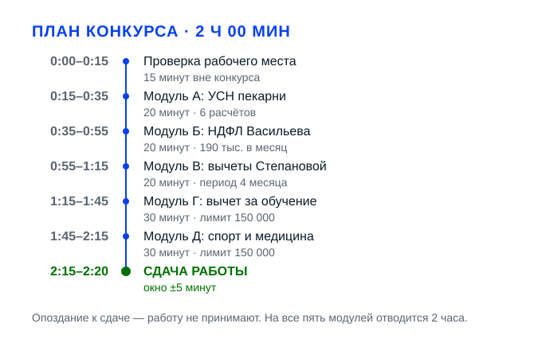
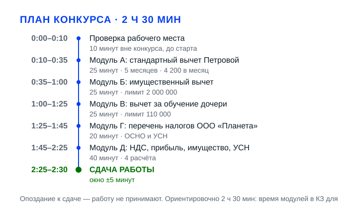
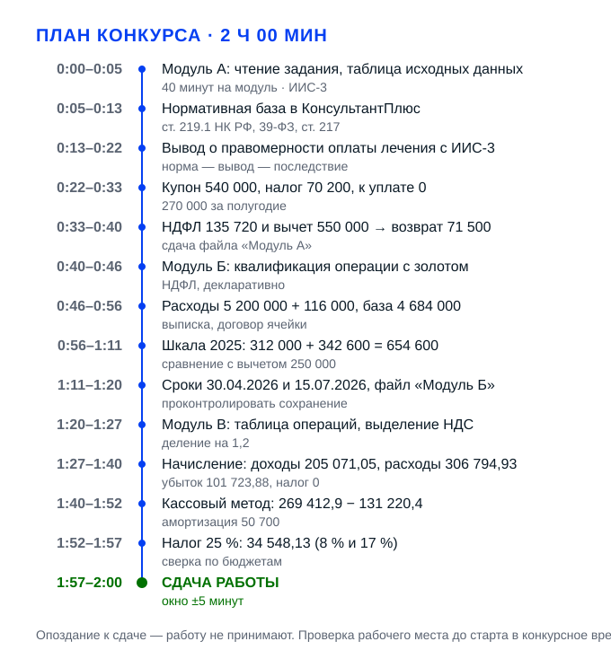

Специалист по финансам общественного сектора (Р)
Задания ниже — официальные файлы «Абилимпикс» (источник: abilympics-russia.ru), разложенные по категориям. Решения написаны по тексту задания, регламенту и критериям оценки; в них указано, что именно проверяет эксперт.
Школьник
14–16 лет, базовый уровень заданияВыдержка из официального конкурсного задания: страницы, относящиеся к категории «Школьник» (стр. 5–6, 9–12 источника).
Пошаговое решение
Задание для школьников состоит из пяти модулей и идёт два часа: модуль А — 20 минут на упрощённую систему налогообложения пекарни «Пряничный домик», модуль Б — 20 минут на НДФЛ сотрудника с зарплатой 190 тысяч рублей в месяц, модуль В — 20 минут на стандартные вычеты вдовы с двумя детьми, модуль Г — 30 минут на социальный вычет за собственное обучение и модуль Д — 30 минут на вычеты за спорт и медицинские услуги. Пять модулей проверяют не арифметику, а умение найти норму в Налоговом кодексе через КонсультантПлюс, применить её к конкретным числам и объяснить результат клиенту. Ошибки здесь стоят дорого из-за мелочей: забытых социальных взносов, неверно посчитанных месяцев, перепутанных ставок и лимитов. Поэтому идём по одному порядку во всех модулях: сначала норма и исходные данные, потом расчёт, потом проверка и только затем вывод для клиента.

Задача 1. Модуль А: посчитать УСН для пекарни «Пряничный домик»Модуль А · 20 минут
Модуль А проверяет сразу три вещи: знаете ли вы, какие объекты налогообложения есть у упрощённой системы, какие к ним применяются ставки и умеете ли довести расчёт до суммы, которую пекарня реально заплатит в бюджет. Исходных данных всего пять чисел, и вся сложность не в арифметике, а в аккуратности: нужно не перепутать выручку с прибылью, вспомнить про минимальный налог и в конце честно объяснить, какой из двух вариантов выгоднее пекарне. На весь модуль отводится 20 минут, поэтому считаем в одном порядке: сначала нормы, потом числа, потом вывод.
Действие 1.1. Разобрать условие и найти нужные статьи
Шаг 1.1.1
Первые три минуты модуля не считаем ничего: читаем условие целиком и переписываем исходные данные в таблицу на бланке ответа. Колонки простые: показатель, значение, откуда взято. Стоимость одного имбирного пряника — 25 рублей, реализовано за месяц — 1000 штук, расходы на ингредиенты — 8 000 рублей, заработная плата повара — 5 000 рублей, социальные взносы на эту зарплату — 1 510 рублей. Отдельно подчёркиваем в условии слово «месяц»: все пять чисел относятся к одному и тому же месяцу, значит и налог мы считаем за месяц, а не за год, и умножать ничего на двенадцать не нужно.
В критериях модуля А первым пунктом стоит знание содержания главы 26.2 НК РФ, и проверяется оно не пересказом, а тем, как вы распорядились данными: если выручка и расходы перепутаны местами или взяты за другой период, дальше все четыре суммы окажутся неверными, даже если формулы применены правильно. Таблица на бланке ещё и экономит время: в конце модуля вы будете сверять ответы не с памятью, а с выпиской, и это спасает от половины ошибок.
В таблице пять строк и ни одной лишней. Проверьте единицы: рубли и штуки не смешаны, у стоимости пряника стоит «за штуку», у выручки будет «за месяц». Если какое-то число вы записали дважды в разные строки, значит одно из них вы уже начали считать два раза — перечитайте условие заново.
Самая частая ошибка — сразу начать умножать 25 на 1000, не выписав остальные числа: потом выясняется, что социальные взносы 1 510 рублей забыты, и расходы занижены, а вместе с ними занижена и налогооблагаемая база по объекту «Доходы минус расходы». Вторая ошибка — принять 1 510 рублей за что-то отдельное от зарплаты и не включить в расходы вовсе.
Эксперт проходит мимо рабочего места в первые минуты модуля и смотрит, с чего участник начал: с расчётов на калькуляторе или с выписки условия. Бланк с таблицей исходных данных он потом просматривает при проверке, чтобы понять, откуда взялась каждая цифра в ответе.
Шаг 1.1.2
Открываем КонсультантПлюс и находим статью 346.14 НК РФ: в ней перечислены объекты налогообложения при упрощённой системе. Их два — «доходы» и «доходы, уменьшенные на величину расходов», и выбрать нужно один, потому что объект определяется самим налогоплательщиком и меняется не чаще одного раза в год. В бланке ответа на пункт «А» пишем именно эту формулировку, дословно, как в кодексе, а не «выручка» и «прибыль»: эксперт сверяет ответ с текстом нормы.
Пункт «А» задания — прямое указание назвать два объекта, и это тот случай, когда ответ либо совпадает с нормой, либо не засчитывается вовсе: «прибыль» в главе 26.2 не упоминается, там своя терминология, и подмена слова читается как незнание статьи. Кроме того, от выбранного объекта зависит вся дальнейшая арифметика: у «доходов» расходы в расчёте не участвуют, у второго объекта — участвуют, и считать их нужно по правилам статьи 346.16.
Проверьте себя так: в статье 346.14 должно быть ровно два пункта про объекты, и в вашем ответе тоже два, без третьего «смешанного». Если вы написали слово «прибыль» или «чистый доход», перепишите формулировку по кодексу — это тридцать секунд, которые сохраняют пункт целиком.
Типичная ошибка — написать «доходы минус расходы (прибыль)» и дальше считать прибыль по бухгалтерским правилам, вычитая амортизацию и всё подряд. В главе 26.2 расходы ограничены закрытым перечнем статьи 346.16, и лишние вычеты приводят к заниженному налогу, а это уже ошибка в расчёте, а не в терминологии.
Эксперт смотрит на ответ к пункту «А» и на то, открыта ли у участника глава 26.2 на нужной статье. Работа «по памяти», без обращения к тексту, при проверке видна по неточным формулировкам.
Шаг 1.1.3
Ищем статью 346.20 НК РФ и выписываем ставки: при объекте «доходы» — 6 процентов, при объекте «доходы минус расходы» — 15 процентов. Тут же отмечаем важную оговорку, которая стоит в самой статье: регионы вправе снижать эти ставки, для «доходов» до 1 процента, для второго объекта до 5 процентов, а в отдельных случаях устанавливать даже 0 процентов для впервые зарегистрированных. В ответе на пункт «Б» пишем базовые 6 и 15 и одной строкой добавляем, что законом субъекта ставка может быть понижена.
Пункт «Б» задания просит указать ставки для разных объектов, и полный ответ включает не только цифры, но и понимание, откуда они берутся. Это важно практически: пекарня находится в Ростове-на-Дону, а Ростовская область пониженных ставок для этой категории не устанавливала, поэтому в расчёте работают базовые 6 и 15 процентов. Если бы в условии был другой регион, цифры могли оказаться иными, и обоснование пришлось бы строить на областном законе.
Убедитесь, что в бланке стоят обе ставки и обе привязаны к своим объектам: 6 процентов к «доходам», 15 процентов к «доходам минус расходы». Проверьте, что вы не поставили 6 процентов к базе «доходы минус расходы» — такая перестановка встречается у каждого пятого участника и обнуляет весь пункт «Б».
Ошибка — ограничиться двумя цифрами и не упомянуть, что ставка региональная. Формально расчёт от этого не изменится, но обоснование окажется неполным, и на вопрос эксперта «почему именно шесть» ответить будет нечем. Обратная ошибка — начать искать пониженную ставку для Ростовской области и потратить на это десять минут модуля из двадцати.
Эксперт задаёт вопрос по пункту «Б» чаще, чем по любому другому: просит назвать статью, где указаны ставки. Ответ «346.20» и упоминание права регионов снижать ставку он отмечает как полный.
Действие 1.2. Вспомнить минимальный налог и посчитать выручку с расходами
Шаг 1.2.1
Открываем статью 346.18 и читаем пункт 6: при объекте «доходы минус расходы» налог платится не меньше минимального, а минимальный налог — это 1 процент от доходов за налоговый период. Выписываем себе отдельной строкой: минимальный налог = доходы × 1 процент, и он применяется вместо обычного, если исчисленный налог оказался меньше. Здесь же фиксируем, что при объекте «доходы» минимального налога нет вовсе — там всегда 6 процентов от выручки.
Пункт 7 задания прямо требует обосновать, какую из двух сумм пекарня должна выплатить, и без минимального налога это обоснование построить невозможно. Критерий модуля А отдельно называет статью 346.18, пункт 6 — то есть эксперт ждёт, что участник знает не только ставки, но и ограничение снизу. Практически это ловушка при втором объекте: если расходы велики, налог выходит меньше одного процента выручки, и платить всё равно придётся минимальный.
В бланке появилась строка «минимальный налог, 1 процент от доходов». Проверьте себя на понимание: если при объекте «доходы минус расходы» налог получился 1 573,5 рубля, а минимальный 250 рублей, платить нужно большую сумму, то есть 1 573,5. Если ваша логика даёт наоборот, значит вы перепутали, что с чем сравнивается.
Ошибка — решить, что минимальный налог платится всегда при втором объекте: тогда в ответе появится 250 рублей, и пекарня «заплатит» в шесть раз меньше, чем должна. Вторая ошибка — считать минимальный налог от прибыли, а не от доходов: база у него именно выручка, 25 000 рублей, а не 10 490.
Эксперт смотрит на строку с минимальным налогом в бланке и на вывод в пункте 7. Если суммы 1 573,5 и 250 рублей присутствуют и сравнение сделано в правильную сторону, пункт закрыт.
Шаг 1.2.2
Считаем выручку: 25 рублей умножаем на 1000 штук и получаем 25 000 рублей за месяц. Записываем формулой, а не только результатом: выручка равна стоимости одного пряника, умноженной на количество реализованных пряников. Рядом дописываем словами, что это доход от реализации, то есть та самая база, к которой применяется ставка 6 процентов при первом объекте и от которой считается минимальный налог.
Выручка — единственное число, из которого потом вырастают три разных результата: налог при «доходах», налогооблагаемая база второго объекта и минимальный налог. Пункт 1 задания требует именно расчёта с обоснованием, поэтому в бланке должна быть видна формула: эксперт оценивает не только цифру 25 000, но и то, понимает ли участник, что это доход, а не прибыль.
Прикиньте на пальцах: пряник за 25 рублей, тысяча штук — это двадцать пять тысяч. Если у вас получилось 2 500 или 250 000, вы потеряли или добавили ноль. Проверьте, что в ответе стоит «рублей за месяц», а не «рублей в день».
Ошибка — подставить в выручку количество в килограммах или перепутать выручку с прибылью, вычтя расходы ещё до применения ставки. В этом случае налог при объекте «доходы» окажется посчитанным от прибыли, то есть около 629 рублей вместо 1 500, и пункт «В» развалится целиком.
Эксперт сверяет выручку с условием: 25 рублей и 1000 штук. Отдельно он смотрит, подписано ли, за какой период взята сумма, потому что в задании речь идёт о месяце.
Шаг 1.2.3
Складываем расходы: ингредиенты 8 000 рублей, заработная плата повара 5 000 рублей и социальные взносы 1 510 рублей. Итого 14 510 рублей за месяц. Записываем той же схемой, что и выручку: общие расходы равны сумме трёх слагаемых, каждое слагаемое подписано. Взносы не сливаем с зарплатой в одну строку, а показываем отдельно, хотя в итог они входят вместе.
Расходы нужны только для второго объекта, но именно они определяют, будет ли он выгоден: чем ближе расходы к выручке, тем меньше налог по ставке 15 процентов. Пункт 2 задания требует расчёта общей суммы расходов, и здесь важна каждая из трёх цифр: если потерять взносы, расходы станут 13 000, база вырастет до 12 000, а налог — до 1 800 рублей, и вывод о выгодности объекта поменяется на противоположный.
8 000 плюс 5 000 равно 13 000, плюс 1 510 — 14 510. Проверьте, что эта сумма меньше выручки: 14 510 меньше 25 000, значит база положительная и налог по второму объекту вообще возникает. Если бы расходы превысили выручку, налог всё равно был бы не меньше минимального, и это стоило бы отдельной строки в обосновании.
Классика — забыть социальные взносы: они стоят в условии отдельной строкой и легко теряются при быстром чтении. Вторая ошибка — прибавить к расходам стоимость самих пряников, посчитав себестоимость дважды, и получить расходы больше выручки.
Эксперт смотрит на три слагаемых в бланке. Если взносы 1 510 рублей стоят отдельной строкой и вошли в итог, видно, что участник прочитал условие внимательно, а не считал «по памяти».
Действие 1.3. Посчитать налог при двух объектах и выбрать выгодный
Шаг 1.3.1
Считаем налог при объекте «доходы»: 25 000 рублей умножаем на 6 процентов и получаем 1 500 рублей за месяц. Записываем формулой: налог равен выручке, умноженной на ставку, и подчёркиваем, что расходы в этом расчёте не участвуют вообще. Рядом мелким шрифтом добавляем оговорку: по статье 346.21 налог можно уменьшить на уплаченные страховые взносы, но в задании этого не требуется, поэтому считаем прямую сумму и отмечаем, что уменьшение — отдельное право, а не часть условия.
Критерий модуля А требует продемонстрировать умение проводить расчёт при объекте «доходы», и 1 500 рублей — это ответ, который эксперт ищет в бланке первым. Понимание того, что расходы здесь не вычитаются, отличает верный расчёт от неверного: половина ошибок в этом модуле происходит именно из-за попытки уменьшить выручку на затраты, чего при первом объекте делать нельзя.
Проверьте пропорцию: 6 процентов от 25 000 — это 1 500, то есть примерно шестая часть выручки. Если у вас вышло 1 258 или другая сумма, значит вы что-то вычли из выручки до умножения. Убедитесь, что рядом с ответом написано «при объекте доходы».
Ошибка — уменьшить выручку на расходы и посчитать 6 процентов от 10 490 рублей, получив 629,4. Это уже не УСН «доходы», а самодельная система, и пункт «В» теряет смысл: сравнение с вторым объектом становится бессмысленным, потому что оба расчёта окажутся сделаны по одной и той же логике.
Эксперт проверяет, что в бланке рядом с 1 500 рублями стоит именно объект «доходы» и что расходы 14 510 рублей в этом расчёте не фигурируют. Вопрос про статью 346.21 задают редко, но упоминание взносов он отмечает как глубину.
Шаг 1.3.2
Переходим ко второму объекту: считаем налогооблагаемую базу как выручку минус общие расходы. 25 000 минус 14 510 равно 10 490 рублей. Записываем формулой, как в пункте 5 задания, и обязательно подписываем, что это база, а не налог: дальше от неё считается сумма по ставке 15 процентов. Если база получилась отрицательной, в ответе всё равно пишем ноль и отдельно строку про минимальный налог.
База — промежуточный, но самый уязвимый результат: одна арифметическая ошибка здесь меняет итог на сотни рублей, и эксперт это сразу видит, потому что пересчитывает цепочку от выручки. Кроме того, в задании прямо названа формула базы, значит её нужно показать отдельной строкой, а не спрятать внутри умножения.
25 000 минус 14 510 равно 10 490. Проверьте обратным действием: 10 490 плюс 14 510 должно дать ровно 25 000. Если не сходится, ищите потерянную тысячу в расходах — чаще всего теряются именно взносы или один ноль в зарплате.
Ошибка — вычесть расходы из прибыли, а не из выручки, и получить отрицательную базу при внешне благополучной пекарне. Вторая ошибка — округлить базу до 10 000 «для удобства»: итог поедет на 73 рубля, и сравнение с первым объектом станет неточным.
Эксперт смотрит на строку с базой отдельно от строки с налогом: если база показана, он может проверить всю цепочку за десять секунд и поставить полный балл даже при мелкой ошибке в округлении.
Шаг 1.3.3
Считаем налог при объекте «доходы минус расходы»: 10 490 умножаем на 15 процентов и получаем 1 573,5 рубля. Дальше показываем округление до полного рубля по правилам статьи 52 НК РФ — 1 574 рубля к уплате, но в сравнении используем неокруглённое значение, чтобы не потерять полрубля на выводах. В бланке оставляем обе записи: расчётную 1 573,5 и сумму к уплате 1 574.
Второй критерий модуля А — умение считать налог при объекте «доходы минус расходы», и здесь важно не только число, но и то, что участник помнит про округление: в декларации и платёжке суммы стоят в целых рублях. Эксперт отдельно смотрит, показана ли ставка 15 процентов и база, от которой она применена, потому что именно эта связка и есть расчёт.
Проверьте пропорцию: 15 процентов от 10 490 — это чуть больше полутора тысяч. Если у вас вышло 1 049, значит применена ставка 10 процентов, а такой ставки в базовом варианте нет. Убедитесь, что в ответе видно, от какой базы посчитана сумма.
Ошибка — применить 15 процентов к выручке, а не к базе: получится 3 750 рублей, и вывод «второй объект дороже» станет ложным. Вторая ошибка — округлить 1 573,5 вниз до 1 573 и потерять рубль при сверке с минимальным налогом, хотя на исход сравнения это не влияет.
Эксперт сверяет тройку чисел: база 10 490, ставка 15 процентов, сумма 1 573,5. Если все три на месте, пункт считается выполненным, даже когда сумма округлена до 1 574.
Шаг 1.3.4
Считаем минимальный налог: 1 процент от 25 000 рублей равен 250 рублям. Сравниваем его с исчисленным налогом по второму объекту: 1 573,5 больше 250, значит пекарня платит обычный налог 1 573,5 рубля, а минимальный остаётся только упомянутой проверкой. После этого сравниваем два объекта между собой: 1 500 рублей при «доходах» против 1 573,5 при «доходах минус расходы», и делаем вывод, что выгоднее первый объект, экономия 73,5 рубля в месяц.
Пункт 7 задания требует обосновать, какую именно сумму пекарня должна выплатить, и правильный ответ состоит из двух сравнений, а не из одного. Сначала выясняется, не придётся ли платить минимальный налог вместо расчётного, потом выбирается сам объект. Оба сравнения опираются на разные нормы, и путать их нельзя: минимальный налог ограничивает сумму при втором объекте, но не отменяет право выбрать первый.
В бланке должно быть три числа подряд: 250, 1 573,5 и 1 500, и подписано, что больше чего. Проверьте формулировку вывода: «платить 1 573,5, если остаться на втором объекте» и «выгоднее объект доходы, налог 1 500». Если вывод звучит как «платить 250», значит сравнение сделано в обратную сторону.
Самая дорогая ошибка модуля — ответ «пекарня платит минимальный налог 250 рублей». Минимальный налог применяется только тогда, когда он больше расчётного, а здесь он в шесть раз меньше. Вторая ошибка — сравнить 1 500 только с минимальным налогом и не сопоставить объекты вовсе, тогда вывод о выгодности останется недоказанным.
Эксперт читает именно вывод: ему важно увидеть оба сравнения и итоговую рекомендацию пекарне. Ответ без рекомендации он оценивает как незаконченный, даже если все цифры верны.
Шаг 1.3.5
Оформляем ответы на пункты «А», «Б» и «В» подряд, каждый с новой строки и со своей нумерацией, чтобы эксперт нашёл их без поиска. В пункте «А» — два объекта дословно по статье 346.14, в пункте «Б» — ставки 6 и 15 процентов со ссылкой на статью 346.20, в пункте «В» — шесть расчётов по порядку задания с формулами, суммой к уплате и выводом о выгодном объекте. В конце ставим время окончания модуля, чтобы контролировать себя в следующем.
Оценивают не черновик, а бланк, и любая цифра, которая есть в голове, но не написана, для эксперта не существует. Кроме того, структура ответа по пунктам задания — это часть критерия о знании содержания главы 26.2: эксперт идёт по своему чек-листу сверху вниз, и когда ответы стоят в том же порядке, он быстрее находит нужное и реже трактует пропуск как незнание.
Пролистайте бланк и мысленно отметьте: есть ли шесть отдельных расчётов из пункта «В», подписан ли каждый результат, стоит ли вывод о выгодности объекта. Если чего-то не хватает, дописывайте сразу, пока модуль не закрыт: вернуться к нему после перехода к модулю Б будет некогда.
Ошибка — оставить расчёты в черновике и перенести в бланк только итоговые суммы: без промежуточных строк эксперт не видит методики и снимает баллы за умение проводить расчёт. Вторая ошибка — перепутать нумерацию пунктов и поставить вывод о выгодности в конец, где его никто не ищет.
Эксперт проверяет бланк после модуля, идёт по пунктам «А», «Б», «В» и отмечает полноту. Отсутствие формулы при верной цифре он трактует как частичное выполнение, а лишние рассуждения без цифр — как отсутствие расчёта.
Задача 2. Модуль Б: рассчитать НДФЛ Васильева А.Г. за 2025 годМодуль Б · 20 минут
В модуле Б нужно посчитать налог на доходы физического лица, который получал 190 тысяч рублей в месяц, не имел ни бонусов, ни премий и является резидентом. Задание требует не только итоговой суммы, но и определения налоговой базы, обоснования ставки и альтернативного расчёта годовой суммы. Главная тонкость 2025 года в том, что ставка перестала быть единой: с этого года действует пятиступенчатая шкала, и прежде чем умножать, нужно понять, в какую ступень попадает доход. На модуль отводится 20 минут, и этого хватает с запасом, если не начинать со ставки, а сначала разобраться со статусом и базой.
Действие 2.1. Установить статус, ставку и налоговую базу
Шаг 2.1.1
Начинаем со статьи 207 НК РФ: налоговыми резидентами признаются лица, фактически находящиеся в России не менее 183 календарных дней в течение последних 12 месяцев. В условии прямо сказано, что Васильев А.Г. — резидент, поэтому в бланке пишем не «он живёт в России», а «статус резидента подтверждён условием, статья 207, пункт 2». Дальше открываем статью 209 и фиксируем, что для резидента объектом налогообложения является весь доход, полученный и от источников в России, и за её пределами.
Критерий модуля Б начинается со знания содержания статей о налогоплательщиках и объекте налогообложения, и статус — первое, что определяет всё остальное. Для нерезидента ставка была бы 30 процентов, а не 13, и вся сумма выросла бы более чем вдвое: 2 280 000 дали бы 684 000 рублей налога вместо 296 400. Один абзац со ссылкой на статью 207 отделяет правильный расчёт от принципиально другого.
В бланке есть слово «резидент», номер статьи 207 и упоминание 183 дней. Проверьте, что вы не начали считать по ставке 30 процентов «на всякий случай»: в условии статус задан прямо, доказывать его не нужно, достаточно сослаться на норму и на текст задания.
Типичная ошибка — пропустить статус и сразу умножить доход на 13 процентов, не обосновав выбор ставки: цифра выйдет верной, но пункт «обосновать применимую ставку НДФЛ» останется без ответа. Обратная ошибка — решить, что зарплата 190 тысяч автоматически делает человека нерезидентом, и посчитать по 30 процентам.
Эксперт смотрит на обоснование ставки: есть ли ссылка на статью 207 и статью 224. Если в бланке стоит только «13 процентов», он задаёт уточняющий вопрос и снижает оценку за неполное обоснование.
Шаг 2.1.2
Открываем статью 224 НК РФ и выписываем шкалу, действующую с 2025 года: 13 процентов, пока сумма налоговых баз за год не превысила 2,4 миллиона рублей, дальше 15 процентов до 5 миллионов, затем 18, 20 и 22 процента по ступеням. Ключевое, что нужно понять и записать: повышенная ставка применяется не ко всему доходу, а только к той части, которая перешла границу ступени. Для Васильева считаем годовой доход на черновике: 190 000 умножить на 12 равно 2 280 000, это меньше 2,4 миллиона.
С 2025 года НДФЛ перестал быть плоским, и задание, где доход 190 тысяч в месяц, специально подобрано близко к порогу: годовая сумма 2 280 000 не дотягивает до 2,4 миллиона всего на 120 тысяч. Тот, кто помнит только про 13 процентов, получит верный ответ случайно; тот, кто помнит только про 15, ошибётся. Критерий модуля требует обоснования ставки, и обоснование здесь — сравнение годового дохода с порогом.
Проверьте арифметику порога: 2 400 000 минус 2 280 000 равно 120 000 рублей запаса, это около шести месячных зарплат. Пока запас положительный, вся сумма облагается по 13 процентам. Если бы доход был 200 000 в месяц, годовая сумма была бы ровно 2 400 000 и ставка осталась бы 13 процентов — порог сравнивается по правилу «не более».
Ошибка — применить 15 процентов к части дохода, посчитав, что «190 тысяч в месяц — это много». Вторая, более коварная ошибка — записать, что при превышении порога по 15 процентам облагается весь годовой доход: тогда при доходе 3 миллиона налог завышается почти на 200 тысяч, и это грубая методическая ошибка, которую эксперт отмечает отдельно.
Эксперт проверяет, есть ли в бланке сравнение годового дохода с порогом 2,4 миллиона. Именно эта строка показывает, что участник понимает механику ступеней, а не угадал ставку.
Шаг 2.1.3
Формулируем определение налоговой базы за один месяц по статье 210 НК РФ: это денежное выражение доходов, уменьшенных на суммы налоговых вычетов. Для Васильева вычетов нет, поэтому база за месяц равна самой зарплате — 190 000 рублей, а база за год — 2 280 000 рублей. Записываем обе цифры отдельно и рядом приписываем «вычеты не применяются», чтобы было видно, что вы этот вопрос проверили, а не пропустили.
Задание отдельным пунктом просит дать определение налоговой базы за месяц, и это не формальность: от того, что считать базой, зависит вся цепочка. Если назвать базой «зарплату минус НДФЛ», расчёт пойдёт по кругу, а если назвать базой доход за год, потеряется помесячная логика, которую задание тоже требует. Определение по статье 210 закрывает сразу два пункта критерия: знание нормы и умение считать сумму к уплате.
В бланке определение стоит дословно по смыслу нормы: денежное выражение доходов, уменьшенных на вычеты. Рядом — база за месяц 190 000 и база за год 2 280 000. Проверьте, что вторая цифра ровно в двенадцать раз больше первой, и что нигде не появилось слово «прибыль».
Ошибка — определить базу как доход минус уже удержанный налог, то есть 165 300 рублей: тогда налог, посчитанный от этой суммы, окажется меньше реального на 3 211 рублей в месяц. Вторая ошибка — забыть про вычеты совсем и не написать, что их нет: эксперт не увидит, проверял ли участник это условие.
Эксперт сверяет определение с текстом статьи 210. Если участник написал «доход минус вычеты» и отдельно указал, что вычетов нет, пункт считается закрытым полностью.
Действие 2.2. Посчитать налог за месяц и за год
Шаг 2.2.1
Считаем налог за один месяц: 190 000 умножаем на 13 процентов и получаем 24 700 рублей. Записываем формулой: НДФЛ за месяц равен налоговой базе, умноженной на ставку. Рядом добавляем контрольную прикидку в уме: тринадцать процентов — это примерно восьмая часть, значит ответ должен быть около двадцати четырёх тысяч, и 24 700 в этот коридор попадает.
Пункт «рассчитать сумму НДФЛ, подлежащую уплате за один месяц» — это ядро модуля, и он же служит проверкой ставки: при 15 процентах вышло бы 28 500, при 30 — 57 000. Именно поэтому помесячный расчёт делают до годового: расхождение с ожидаемым порядком величины сразу показывает, что ставка выбрана неверно, и у вас остаётся время её перепроверить.
190 000 умножить на 0,13 равно 24 700. Проверьте обратным делением: 24 700 разделить на 190 000 даёт ровно 0,13. Убедитесь, что в ответе стоит «за месяц»: если написано «за год», дальше вы неизбежно запутаетесь в умножениях.
Ошибка — посчитать 13 процентов с суммы 190 000 минус 1 400 рублей «на ребёнка», хотя детей в условии нет: получится 24 518 и лишняя строка, которой в ответе быть не должно. Вторая ошибка — округлить 24 700 до 25 000 и потерять 300 рублей на каждом месяце, то есть 3 600 за год.
Эксперт смотрит на помесячную сумму и на формулу рядом с ней. Если сумма стоит без формулы, он всё равно засчитывает расчёт, но отмечает, что методика не показана.
Шаг 2.2.2
Определяем общую сумму дохода за год: 190 000 умножаем на 12 месяцев и получаем 2 280 000 рублей. Записываем это отдельной строкой, потому что задание просит именно такой пункт, и добавляем уточнение, что премий и бонусов не было, поэтому других слагаемых в доходе нет. Если бы в условии были разовые выплаты, их пришлось бы прибавить, а не подставить в среднюю зарплату.
Годовой доход нужен дважды: как база для альтернативного расчёта и как величина для сравнения с порогом 2,4 миллиона. Ошибка в этом числе разрушает оба пункта сразу, причём незаметно: 2 280 000 и, скажем, 2 080 000 оба меньше порога, поэтому ставка останется той же, но итог разойдётся на 26 000 рублей.
Проверьте сложением: 190 000 двенадцать раз — это 190 000 плюс 1 900 000, итого 2 280 000. Сверьте с порогом: до 2 400 000 не хватает 120 000. Если у вас получилось 2 280 000, но при этом доход «за 11 месяцев», значит один месяц потерян — в 2025 году у Васильева отработаны все двенадцать.
Ошибка — умножить на 11 или на 10, посчитав, что декабрь «выплачивают в январе»: в налоговом периоде доход относится к месяцу начисления, и декабрь входит в год. Вторая ошибка — прибавить к годовому доходу НДФЛ или, наоборот, вычесть его, получив 2 016 600.
Эксперт сверяет годовую сумму с условием: 190 000 в месяц и никаких дополнительных доходов. Если в бланке есть отдельная строка про отсутствие премий, видно, что участник проверил все данные.
Шаг 2.2.3
Считаем общую сумму налога за год: 24 700 умножаем на 12 и получаем 296 400 рублей. Записываем это как первый вариант расчёта, помесячный: налог за месяц, умноженный на число месяцев. Рядом оставляем место для второго варианта, который сделаем в следующем действии, и следим, чтобы обе суммы сошлись, — расхождение будет означать ошибку в одном из способов.
Пункт «рассчитать общую сумму уплаченного НДФЛ за год» — главный результат модуля, ради которого считались и база, и ставка. Помесячный путь важен ещё и потому, что именно так работает работодатель: он удерживает налог с каждой выплаты, а не с годовой суммы, и в справке о доходах стоят двенадцать одинаковых удержаний по 24 700 рублей.
24 700 умножить на 12 равно 296 400. Проверьте через проценты: 13 процентов от 2 280 000 — тоже 296 400. Если два пути дают разные числа, ищите ошибку в одном из множителей, а не переписывайте ответ. Итог — в рублях.
Ошибка — сложить одиннадцать месяцев и забыть декабрь, получив 271 700. Вторая ошибка — посчитать налог за год как 24 700 умножить на 13, спутав число месяцев со ставкой: выйдет 321 100, и это расхождение сразу бросится в глаза при проверке.
Эксперт сверяет годовую сумму с произведением месячной на двенадцать. Совпадение обеих цифр он отмечает как признак того, что расчёт не случайный. Вопрос про месяцы задают часто.
Действие 2.3. Сделать альтернативный расчёт и проверить результат
Шаг 2.3.1
Выполняем альтернативный расчёт, которого требует задание: берём годовой доход 2 280 000 рублей и умножаем сразу на 13 процентов, получая те же 296 400 рублей. Объясняем в бланке, почему результаты совпали: годовой доход не превысил 2,4 миллиона, поэтому вся сумма облагается одной ставкой, и порядок умножения не важен. Если бы порог был пройден, второй способ потребовал бы считать ступени отдельно, и суммы разошлись бы.
Задание прямо требует показать альтернативный расчёт, и это проверка понимания, а не арифметики: два одинаковых ответа, полученных разными путями, означают, что участник видит структуру налога. Именно здесь становится ясно, что при плоской ставке помесячный и годовой способы эквивалентны, а при прогрессивной — нет, и это различие в 2025 году стало принципиальным.
В бланке два расчёта и одна и та же сумма 296 400. Проверьте, что во втором расчёте стоит именно годовая база, а не месячная, умноженная на 13: иначе получится 24 700 и вы получите два разных ответа на один вопрос.
Ошибка — выдать за альтернативный расчёт то же самое умножение, переписанное в другом порядке, без объяснения. Формально это допустимо, но обоснование требуется: эксперт ждёт фразу о том, что доход не вышел за первую ступень. Вторая ошибка — во втором расчёте применить 15 процентов «для разнообразия».
Эксперт ищет в бланке два независимых пути и вывод об их совпадении. Наличие объяснения он ценит выше, чем сам повторный расчёт. Без объяснения ответ считается неполным.
Шаг 2.3.2
Проверяем расчёт на устойчивость к условию: считаем, что было бы при зарплате 200 000 рублей в месяц. Годовой доход составил бы ровно 2 400 000, налог — 312 000, и ставка осталась бы 13 процентов. Дальше считаем вариант 250 000 в месяц: годовой доход 3 000 000, из них 2 400 000 по 13 процентов дают 312 000, а 600 000 по 15 процентов дают 90 000, итого 402 000. Эти две прикидки записываем мелким шрифтом внизу как проверку понимания шкалы.
Такая проверка стоит двух минут и страхует от самой обидной ошибки — применения повышенной ставки ко всему доходу. Кроме того, в критериях модуля Б есть пункт про умение рассчитывать сумму налога к уплате, и участник, который умеет пересчитать модель при изменении условия, демонстрирует именно умение, а не заученную цифру. Эксперты такие прикидки любят обсуждать на защите.
Сверьте пропорции: 402 000 должно быть больше 312 000 примерно на четверть, потому что к первой ступени добавилась часть по 15 процентам. Если ваш расчёт даёт 450 000, значит 15 процентов применены ко всем трём миллионам — это и есть та ошибка, от которой мы страхуемся.
Ошибка — увлечься проверкой и потратить на неё половину модуля, оставив основной ответ недописанным. Вторая ошибка — записать прикидку в бланк как часть ответа и создать впечатление, что у Васильева доход 3 миллиона: эксперт читает бланк быстро и может понять буквально.
Эксперт отличает проверочные записи от основного ответа по пометкам. Если прикидка подписана как «проверка механики шкалы», она работает в плюс; без подписи — создаёт путаницу.
Шаг 2.3.3
Закрываем модуль оформлением: проверяем, есть ли в бланке все шесть пунктов задания, и дописываем недостающие. Должны быть определение налоговой базы за месяц, годовой доход, обоснование ставки со ссылкой на статьи 207 и 224, месячная сумма налога 24 700, годовая 296 400 и альтернативный расчёт. Отдельной строкой фиксируем, что стандартные и социальные вычеты не применяются, потому что Васильев их не заявлял и детей на обеспечении не имеет.
Итоговая проверка по пунктам задания — самый дешёвый способ поднять оценку: пропущенный пункт стоит дороже, чем любая арифметическая погрешность, потому что оценивается полнота решения. Строка про вычеты тоже важна: критерий модуля Б упоминает статью 218, и эксперт должен увидеть, что участник рассмотрел вопрос вычетов и обоснованно их не применил.
Отметьте галочками шесть пунктов задания на своём черновике и сверьте с бланком. Если какого-то пункта нет, дописывайте сразу: до конца модуля остаётся время, а после перехода к модулю В вернуться будет уже нельзя.
Ошибка — оставить без внимания вычеты и не написать, почему они не применяются: эксперт посчитает, что участник про них не знает. Вторая ошибка — придумать Васильеву ребёнка и вычесть 1 400 рублей, чего в условии нет вовсе.
Эксперт проверяет бланк по чек-листу модуля и отдельно смотрит на строку о вычетах. Наличие обоснованного отказа от вычетов он оценивает как осознанный расчёт, а не как пропуск.
Задача 3. Модуль В: подтвердить право на стандартный вычет Степановой И.С.Модуль В · 20 минут
Модуль В — про консультирование: вдове Степановой И.С., у которой двое несовершеннолетних детей 8 и 12 лет и доход 98 тысяч рублей в месяц, нужно объяснить, какие стандартные вычеты ей положены, сколько месяцев они действуют и сколько НДФЛ она сэкономит. Тонкость в том, что здесь работают два разных вычета с разными правилами: детский, который прекращается при достижении предельного дохода, и вычет за выполнение нормативов ГТО с диспансеризацией, который от дохода не зависит. Считать нужно не «в среднем», а по месяцам, и именно помесячная логика приносит баллы в этом модуле.
Действие 3.1. Разобрать ситуацию и выписать нормы статьи 218
Шаг 3.1.1
Открываем статью 218 НК РФ и находим подпункт 4 пункта 1 — стандартный вычет на детей. С 2025 года размеры такие: 1 400 рублей на первого ребёнка, 2 800 рублей на второго, 6 000 рублей на третьего и каждого следующего. У Степановой двое детей, 12 лет и 8 лет, значит очередность определяется по возрасту: старший — первый, младший — второй. Складываем 1 400 и 2 800 и получаем 4 200 рублей в месяц в одинарном размере.
Критерий модуля В требует знания содержания статьи 218, и первое, что проверяет эксперт, — правильную очередность детей. Ошибка в очередности почти не влияет на сумму, когда детей двое, но привычка считать «по старшинству» спасает в заданиях с тремя и четырьмя детьми, где разница между 1 400 и 6 000 рублей огромна. Считается очередность по возрасту, а не по тому, на кого оформлен вычет.
1 400 плюс 2 800 равно 4 200. Проверьте, что вы не применили 6 000: это размер для третьего ребёнка, а у Степановой детей двое. Убедитесь, что оба ребёнка младше 18 лет — 12 и 8 лет, значит вычет полагается без дополнительных условий про очную форму обучения.
Частая ошибка — поменять детей местами и получить ту же сумму 4 200, но неверную логику: на защите эксперт попросит объяснить, и ответ «на старшего 2 800» покажет, что правило не усвоено. Вторая ошибка — применить вычет только на одного ребёнка, «потому что второй ещё маленький».
Эксперт спрашивает, откуда взялись 4 200, и ждёт разбивку по очередности. Если участник называет сумму без разложения, вопрос задаётся повторно. Разбивку он просит назвать вслух.
Шаг 3.1.2
Читаем дальше тот же подпункт 4: вычет производится в двойном размере единственному родителю, усыновителю, опекуну или попечителю. В условии сказано, что Степанова — вдова, то есть второй родитель умер и она воспитывает детей одна, значит она единственный родитель и вычет ей положен в двойном размере: 2 800 рублей на первого и 5 600 рублей на второго, итого 8 400 рублей в месяц. В бланке пишем обе ступени: 4 200 в одинарном размере и 8 400 в двойном, с указанием, что применён двойной.
Двойной размер почти удваивает экономию: 8 400 вместо 4 200 рублей в месяц дают 1 092 рубля возврата вместо 546. Именно на этой детали задание и построено — слово «вдова» стоит в условии не случайно, оно отличает Степанову от обычной матери двоих детей. При этом право на двойной вычет сохраняется до вступления в новый брак, о чём клиенту нужно сказать отдельно.
2 800 плюс 5 600 равно 8 400, что ровно вдвое больше 4 200. Проверьте, что в бланке написано «единственный родитель» и есть ссылка на подпункт 4 пункта 1 статьи 218. Если вы оставили 4 200, значит пропустили слово «вдова» в условии — перечитайте первый абзац задания.
Самая обидная ошибка модуля — посчитать по одинарному размеру: сумма налога за месяц выйдет 12 194 вместо 11 648, а годовая экономия окажется занижена ровно вдвое. Вторая ошибка — применить двойной вычет, не обосновав его: эксперт снимет балл за неполное обоснование, даже если цифра верна.
Эксперт ищет в бланке обоснование двойного размера: слово «единственный родитель» или «вдова». Именно это обоснование, а не сама цифра, показывает понимание нормы.
Шаг 3.1.3
Находим подпункт 2.1 пункта 1 статьи 218 — вычет за выполнение нормативов ГТО и прохождение диспансеризации, действующий с 2025 года. Размер — 18 000 рублей за налоговый период, то есть за год, а не за месяц. Условий два: выполнить нормативы своей возрастной группы и получить знак отличия, а также пройти диспансеризацию, причём оба события должны произойти в одном календарном году. Вычет предоставляет работодатель, а по заявлению его можно разделить по месяцам; если в заявлении ничего не сказано, он даётся целиком.
Этот вычет появился недавно, и многие участники о нём не знают — а задание построено так, что без него теряется треть ответа. Важна и разница в механике: детский вычет ежемесячный и прекращается по доходу, а вычет за ГТО годовой, однократный, и предел дохода к нему не применяется. В условии сказано, что работодатель предоставит его в следующем месяце, то есть в мае, и это единственная подсказка о том, куда его поставить в расчёте.
В бланке три элемента: номер нормы (подпункт 2.1 пункта 1 статьи 218), размер 18 000 рублей и оба условия — знак отличия ГТО и диспансеризация в том же году. Проверьте, что вы не написали 500 рублей: такая цифра относится к другому, «ветеранскому» вычету и к ГТО отношения не имеет.
Ошибка — умножить 18 000 на восемь месяцев, решив, что вычет ежемесячный: сумма вырастет в восемь раз, и весь расчёт развалится. Вторая ошибка — применить вычет к январю, тогда как работодатель предоставляет его только с мая, когда сотрудница принесла документы.
Эксперт почти всегда задаёт вопрос про ГТО-вычет, потому что он новый. Если участник называет номер подпункта и сумму 18 000 рублей, вопросов больше не возникает.
Действие 3.2. Определить периоды, в течение которых вычеты действуют
Шаг 3.2.1
Считаем доход нарастающим итогом по месяцам и сравниваем с порогом 450 000 рублей, установленным для детского вычета. За январь 98 000, за январь и февраль 196 000, январь–март 294 000, январь–апрель 392 000, январь–май 490 000. Выписываем эту цепочку в бланк отдельным столбцом: именно она доказывает, в каком месяце право прекратилось, и без неё вывод выглядит голословным.
Задание требует определить период, в течение которого Степанова сможет получать вычет, и правильный ответ получается только сравнением нарастающего дохода с порогом. Считать «98 000 умножить на двенадцать» бесполезно: порог сравнивается по месяцам, а не по году, и годовая сумма 1 176 000 ничего не говорит о том, с какого месяца вычет исчез.
Проверьте последний шаг цепочки: 392 000 меньше 450 000, значит в апреле вычет ещё применяется. Следующая строка — 490 000, и она больше порога. Если у вас получилось, что вычет действует пять месяцев, значит вы сравнили доход за май без мая или забыли прибавить месяц к предыдущей сумме.
Ошибка — разделить 450 000 на 98 000 и округлить до пяти месяцев: получится 5,16, и участник механически берёт пять. На самом деле вычет прекращается уже в мае, потому что доход за январь–май превысил порог, и правильный ответ — четыре месяца. Вторая ошибка — считать порог равным 350 000, как было до 2025 года.
Эксперт смотрит на столбик с нарастающим доходом: он позволяет проверить вывод за десять секунд. Если цепочки нет, а вывод есть, эксперт пересчитает сам и отметит отсутствие обоснования.
Шаг 3.2.2
Формулируем первый вывод: детский вычет в двойном размере Степанова получает с января по апрель включительно, то есть четыре месяца, а с мая вычет не предоставляется до конца года. Считаем общую сумму: 8 400 умножить на 4 равно 33 600 рублей за год. В бланке пишем и период, и сумму, и причину прекращения: превышение дохода 450 000 рублей с начала года.
Период — это отдельный пункт задания, и он же определяет размер дохода, с которого удерживается НДФЛ в каждом месяце. Без чёткого ответа «четыре месяца» невозможно правильно посчитать годовую сумму налога: любые дальнейшие вычисления будут опираться на неверное число месяцев, и разница выйдет в тысячи рублей.
8 400 умножить на 4 равно 33 600. Сверьте с цепочкой доходов: январь, февраль, март, апрель — четыре строки ниже порога, май — первая строка выше него. Если сумма вычета получилась 100 800, значит вы взяли двенадцать месяцев и не учли прекращение права.
Ошибка — написать, что вычет действует весь год, потому что «доход не такой большой»: 98 000 в месяц дают 1 176 000 за год, что вдвое больше порога. Вторая ошибка — прекратить вычет с апреля, посчитав месяц превышения включительно, и потерять 8 400 рублей вычета, то есть 1 092 рубля возврата.
Эксперт проверяет словесную формулировку периода: «с января по апрель включительно». Слово «включительно» здесь принципиально, потому что от него зависит число месяцев.
Шаг 3.2.3
Определяем, с какого месяца действует вычет за ГТО. В условии сказано, что нормативы выполнены в апреле 2025 года, а работодатель предоставит вычет в следующем месяце — значит с мая, и до конца года. По умолчанию вычет предоставляется целиком в одном месяце, поэтому в мае налоговая база уменьшается сразу на 18 000 рублей. Отдельно отмечаем: если бы Степанова попросила в заявлении разделить вычет, он распределялся бы по 1 500 рублей с мая по декабрь, но в задании такого условия нет.
Пункт задания просит указать размер полной суммы вычета за ГТО в том месяце, когда он был произведён, и ответ здесь — 18 000 рублей в мае. Это же число нужно, чтобы посчитать налог за май: без него май посчитается как обычный месяц без вычетов, и экономия в 2 340 рублей потеряется. Понимание того, что вычет годовой и однократный, отличает верный ответ от механического умножения на восемь месяцев.
В бланке стоит: вычет за ГТО и диспансеризацию — 18 000 рублей, месяц предоставления — май. Проверьте, что сумма не размазана по месяцам и не умножена на количество месяцев до конца года. Если у вас вышло 144 000, значит применена логика ежемесячного вычета, которой у этой нормы нет.
Ошибка — поставить вычет в апрель, месяц сдачи нормативов, и тем самым уменьшить базу в том месяце, когда ещё действует детский вычет: сумма налога за апрель окажется заниженной, а за май завышенной. Вторая ошибка — распределить 18 000 на все двенадцать месяцев.
Эксперт сверяет месяц предоставления с фразой условия «в следующем месяце». Если участник поставил вычет в май и объяснил почему, ответ считается полным.
Действие 3.3. Посчитать НДФЛ, экономию и оформить консультацию
Шаг 3.3.1
Считаем НДФЛ за январь с учётом детского вычета: 98 000 минус 8 400 равно 89 600 рублей — это доход, с которого удерживается налог. Умножаем на 13 процентов и получаем 11 648 рублей. Записываем формулой с двумя строками: сначала база после вычета, потом налог, и подписываем, что такой же расчёт повторяется для февраля, марта и апреля, потому что доход не меняется.
Пункт задания просит назвать размер дохода, с которого будет удержан НДФЛ, и ежемесячную сумму налога с учётом вычета. Именно эти две цифры — 89 600 и 11 648 — эксперт ищет в бланке. Кроме того, месячная сумма нужна для годового итога: четыре месяца по 11 648 дают 46 592 рубля, и эта цифра войдёт в последний расчёт.
Проверьте обратным счётом: 11 648 плюс 8 400 умножить на 0,13 должно дать 12 740, то есть налог без вычета. Разница 1 092 рубля — это и есть месячная экономия. Если разница получилась 546, значит применён одинарный вычет 4 200 вместо двойного 8 400.
Ошибка — вычесть 8 400 после умножения, то есть посчитать 12 740 минус 8 400: получится 4 340, и сумма налога окажется меньше реальной почти в три раза. Вторая ошибка — умножить на 13 процентов доход 98 000 и вычесть вычет из налога, а не из базы.
Эксперт проверяет последовательность: вычет вычитается из базы, а не из налога. Нарушение этой последовательности он считает методической ошибкой даже при верной итоговой цифре.
Шаг 3.3.2
Считаем тот же месяц без вычета: 98 000 умножаем на 13 процентов и получаем 12 740 рублей. Находим разницу: 12 740 минус 11 648 равно 1 092 рубля экономии за месяц. Умножаем на четыре месяца и получаем 4 368 рублей экономии за год только по детскому вычету. Все три числа — налог с вычетом, налог без вычета и разницу — ставим в бланк отдельными строками.
Задание требует посчитать ежемесячную сумму налога без вычета и разницу уплаченного налога за счёт применения вычета. Эти два числа — прямой ответ клиенту на вопрос «сколько я выиграю», и именно их эксперт сверяет первыми. Экономия 4 368 рублей за год выглядит скромно, но именно так работает стандартный вычет, и участник должен уметь объяснить это без разочарования в голосе.
1 092 умножить на 4 равно 4 368. Сверьте другим путём: 33 600 умножить на 13 процентов тоже даёт 4 368. Если два способа не сходятся, ищите ошибку в числе месяцев, а не в ставке. Сверка занимает десять секунд.
Ошибка — посчитать разницу как 8 400 рублей, то есть приравнять сумму вычета к сумме экономии: это разные вещи, вычет уменьшает базу, а экономия — это 13 процентов от него. Такая подмена встречается постоянно и сразу видна эксперту.
Эксперт смотрит на соотношение: разница должна быть ровно 13 процентов от суммы вычета. Если в бланке стоит 8 400 как экономия, он понимает, что участник не различает вычет и возврат.
Шаг 3.3.3
Считаем май — первый месяц с вычетом за ГТО. Детский вычет уже не применяется, поэтому база равна 98 000 минус 18 000, то есть 80 000 рублей, а налог — 10 400 рублей. Сравниваем с обычным месяцем 12 740 и получаем экономию 2 340 рублей, которая приходится на один месяц. В бланке подписываем, что в июне–декабре вычетов нет и налог снова 12 740 рублей.
Пункт задания просит указать размер полной суммы вычета за ГТО и диспансеризацию в том месяце, когда он был произведён, — это 18 000 рублей, и здесь же показывается, что он даёт. Месяц май особенный: в нём пересекаются два события — прекращение детского вычета и начало годового вычета за ГТО, и правильно посчитать его можно только разобравшись в обоих правилах.
98 000 минус 18 000 равно 80 000, тринадцать процентов от 80 000 — 10 400. Проверьте, что детский вычет в мае не применён: если бы вы вычли ещё 8 400, налог составил бы 9 308, но права на это уже нет. Экономия 2 340 должна равняться 13 процентам от 18 000.
Ошибка — применить в мае и детский вычет, и вычет за ГТО, получив базу 71 600: сумма налога окажется заниженной на 1 092 рубля, а в объяснении появится ссылка на несуществующее право. Вторая ошибка — размазать 18 000 по восьми месяцам и потерять эффект месяца.
Эксперт проверяет май отдельно от остальных месяцев: именно в этом месяце видно, понял ли участник, что вычеты не складываются произвольно. Он ждёт название месяца — май.
Шаг 3.3.4
Сводим годовой итог: четыре месяца по 11 648 дают 46 592 рубля, май даёт 10 400 рублей, оставшиеся семь месяцев по 12 740 дают 89 180 рублей. Складываем и получаем 146 172 рубля НДФЛ за год. Для контроля считаем налог без всяких вычетов: 1 176 000 умножить на 13 процентов равно 152 880, и разница 6 708 рублей совпадает с суммой двух экономий — 4 368 и 2 340.
Годовой итог — это то, что клиент увидит в справке о доходах, и именно он показывает, что расчёт не распался на отдельные месяцы. Сверка с суммой без вычетов обязательна: она ловит ошибку в числе месяцев мгновенно, потому что расхождение должно быть ровно 6 708 рублей, а не «примерно столько».
46 592 плюс 10 400 плюс 89 180 равно 146 172. Проверьте вторым путём: 152 880 минус 6 708 равно 146 172. Если числа не сходятся хотя бы на рубль, ищите ошибку в одном из трёх слагаемых, а не подгоняйте итог.
Ошибка — умножить месячную сумму с вычетом на все двенадцать месяцев, получив 139 776: это занижает налог на 6 396 рублей и означает, что прекращение детского вычета не учтено. Вторая ошибка — потерять май и посчитать одиннадцать месяцев.
Эксперт проверяет итог через сумму без вычетов: если расхождение равно 6 708 рублям, весь модуль считается арифметически чистым. Отдельно спрашивает про 6 708 рублей.
Шаг 3.3.5
Оформляем консультацию по пунктам задания: период применения вычета, размер вычета за каждый месяц, доход, с которого удерживается налог, сумма налога с вычетом и без него, разница и полная сумма вычета за ГТО в месяце предоставления. Каждый пункт — отдельная строка с числом и коротким обоснованием, чтобы эксперт видел ответ, а не искал его в тексте. В конце добавляем две фразы для клиента: право на двойной вычет сохраняется до вступления в новый брак, а документы о ГТО и диспансеризации нужно принести работодателю в том же году.
Модуль называется консультированием, и оценивается не только арифметика, но и умение объяснить клиенту его права. Критерий прямо говорит о понимании всех преимуществ и возможностей применения вычета, а преимущество здесь — не только сумма, но и условия сохранения права. Две фразы в конце стоят двадцати секунд и закрывают этот критерий полностью.
Пройдите по шести пунктам задания и отметьте каждый: период, размер за месяц, доход после вычета, налог с вычетом, налог без вычета, разница, полная сумма за ГТО. Если какого-то ответа нет, дописывайте немедленно — до конца модуля остаётся время, а после перехода к модулю Г вернуться не будет.
Ошибка — ответить только цифрами без пояснения клиенту: модуль оценивается как консультация, и «голый» расчёт теряет баллы за понимание. Вторая ошибка — добавить выдуманное условие вроде обязательного заявления на детский вычет, которое с 2025 года работодателю подавать не нужно.
Эксперт слушает защиту модуля: он ждёт, что участник проговорит период четыре месяца и объяснит разницу между суммой вычета и суммой экономии. Ответ без пояснений он считает неполным.
Задача 4. Модуль Г: вычет за образование Иванова Д.В. и остаток лимитаМодуль Г · 30 минут
В модуле Г нужно проконсультировать Иванова Д.В.: доход 92 тысячи рублей в месяц, в 2025 году он прошёл одиннадцатимесячную программу профессиональной переподготовки стоимостью 143 тысячи рублей и заплатил за неё сам. Задание просит посчитать максимальную сумму возврата НДФЛ и максимальный остаток, который у него останется. Сложность не в арифметике, а в лимите: социальные вычеты делят между собой 150 тысяч рублей в год, и именно поэтому расход 143 тысячи приходится сопоставлять с пределом, а не просто умножать на 13 процентов. На модуль отводится 30 минут — вдвое больше, чем на первые три, потому что здесь ценится ещё и оформление консультации.
Действие 4.1. Проверить право на вычет и понять лимит
Шаг 4.1.1
Открываем статью 219 НК РФ и находим подпункт 2 пункта 1 — вычет на своё обучение. Ключевое отличие от вычета за детей: для собственного обучения форма не имеет значения, очная она, вечерняя или заочная, важно лишь, чтобы у организации была лицензия или иной документ на образовательную деятельность. Иванов учился на программе профессиональной переподготовки одиннадцать месяцев, значит вычет полагается за тот календарный год, в котором он заплатил, то есть за 2025-й, независимо от того, закончилась программа в декабре или нет.
Критерий модуля Г требует знания содержания статьи 219, и первое, что проверяет эксперт, — правильную норму. Ссылка на подпункт 2 пункта 1 показывает, что участник отличает своё обучение от обучения детей, где форма обязательно очная и действует отдельный лимит 110 тысяч рублей. Перепутать эти два вычета — значит применить не ту норму и получить другую сумму.
В бланке есть номер нормы, слово «своё обучение» и фраза о том, что форма обучения значения не имеет. Проверьте, что вы не написали про очную форму: для собственного обучения это условие в законе отсутствует, и его упоминание выдаёт путаницу с детским вычетом.
Ошибка — применить лимит 110 тысяч рублей, предназначенный для обучения детей: тогда вычет сократится, и возврат посчитается неверно. Вторая ошибка — отказать в вычете, потому что программа длилась одиннадцать месяцев и не завершилась в том же году: оплата относится к году платежа.
Эксперт спрашивает, чем вычет за своё обучение отличается от вычета за обучение ребёнка. Ответ про форму обучения и про разные лимиты он считает полным.
Шаг 4.1.2
Читаем пункт 2 статьи 219: социальные вычеты по подпунктам 2–7 предоставляются в размере фактических расходов, но в совокупности не более 150 000 рублей за год. Выписываем это отдельной строкой и добавляем важное свойство лимита: остаток не переносится на следующий год и сгорает. Дальше смотрим на расход Иванова: 143 000 рублей — это меньше предела, значит в вычет пойдёт вся сумма.
Лимит — центральное понятие этого модуля, и оба вопроса задания построены вокруг него: максимальная сумма возврата получается от фактических расходов, а остаток появляется только потому, что предел не выбран до конца. Если забыть про 150 000 рублей, участник посчитает возврат от всей суммы, и при расходе больше предела ответ окажется завышенным.
143 000 меньше 150 000 — это первое, что должно быть видно в бланке. Проверьте, что вы не сравниваете расход с лимитом 120 000 рублей: это прежний предел, действовавший до 2024 года, и в задании за 2025 год он неприменим.
Ошибка — применить старый лимит 120 000 и получить вычет 120 000 с возвратом 15 600: сумма занижена на 2 990 рублей. Вторая ошибка — решить, что лимит применяется к сумме возврата, а не к расходам, и ограничить возврат 150 000 рублями, что в данном случае просто не срабатывает.
Эксперт проверяет, назван ли предел 150 000 рублей и подписано ли, что он общий для нескольких видов расходов. Именно эта формулировка отличает понимание от заученной цифры.
Шаг 4.1.3
Перечисляем документы, которые понадобятся Иванову: договор с образовательной организацией, копия лицензии или выписка из реестра, платёжные документы — квитанции, чеки или банковские выписки, справка о доходах за 2025 год и декларация. Отдельно отмечаем, что при оплате через работодателя нужны те же документы плюс заявление, а при возврате через налоговую — декларация 3-НДФЛ. Список выписываем кратко, по одной строке на документ.
Модуль называется консультированием, и клиенту нужен не только расчёт, но и понятный путь к деньгам. Критерий говорит о понимании всех преимуществ и возможностей применения вычета, а возможность без документов не реализуется: без квитанции об оплате налоговая откажет, даже если право очевидно. Кроме того, точный перечень документов показывает, что участник представляет процедуру целиком.
В бланке пять-шесть пунктов: договор, лицензия, платёжные документы, справка о доходах, декларация, заявление при получении через работодателя. Проверьте, что вы не забыли платёжные документы — самая частая причина отказа в вычете именно в них.
Ошибка — ограничиться договором и справкой о доходах, посчитав, что остальное налоговая запросит сама: квитанции и лицензия нужны заявителю. Вторая ошибка — назвать справку 2-НДФЛ «справкой о доходах за 2025 год» и не уточнить год, тогда документ относится неизвестно к какому периоду.
Эксперт слушает перечень документов и отмечает, названы ли платёжные документы и лицензия. Этот пункт часто становится решающим при равных расчётах у двух участников.
Действие 4.2. Посчитать вычет и сумму возврата
Шаг 4.2.1
Сравниваем расход с пределом и фиксируем сумму вычета: 143 000 рублей фактических расходов меньше 150 000 рублей предела, значит к вычету принимается вся стоимость программы — 143 000 рублей. Записываем это формулой: сумма вычета равна меньшей из двух величин, фактических расходов и предела. Такая запись сразу показывает методику и защищает от ошибки, если расход окажется больше лимита.
Пункт задания просит максимальную сумму возврата НДФЛ по вычету на собственное образование, и путь к ней идёт через сумму вычета, а не сразу через проценты. Пока в бланке не написано, что к вычету принято 143 000 рублей, непонятно, применён ли предел вообще. Эксперт по этой строке проверяет, что участник не забыл про 150 000 рублей.
143 000 — это и есть сумма вычета, она же равна расходу. Проверьте, что вы не округлили её до 150 000 «до предела»: вычет не может быть больше фактических расходов, даже если предел не выбран. Сравнение должно стоять отдельной строкой.
Ошибка — принять к вычету 150 000 рублей, то есть сам предел, решив, что он «всегда даётся целиком»: возврат вырастет на 910 рублей, и это уже завышение, которое при проверке снимается вместе с баллами. Вторая ошибка — вычесть из 143 000 стоимость месяцев, когда программа ещё шла.
Эксперт ищет в бланке фразу о том, что расход меньше предела. Без неё он считает, что участник либо не знает про лимит, либо не проверил его. Без этой фразы ответ неполный.
Шаг 4.2.2
Считаем сумму возврата: 143 000 умножаем на 13 процентов и получаем 18 590 рублей. Записываем это как ответ на первый вопрос задания — максимальная сумма возврата НДФЛ Иванову по социальному вычету на собственное образование. Рядом поясняем, что 13 процентов — это ставка, по которой облагается доход Иванова, а не какая-то отдельная ставка для вычетов.
Возврат — это то, что клиент получит на руки, и именно эту цифру он ждёт от консультанта. Важно, чтобы участник понимал механику: вычет уменьшает базу, а возврат равен налогу, который был с этой суммы удержан. Такое объяснение закрывает критерий о понимании преимуществ применения вычета и защищает от вопроса «почему не 143 тысячи».
143 000 умножить на 0,13 равно 18 590. Проверьте порядок величины: возврат должен быть примерно восьмой частью расходов. Если у вас получилось 14 300 или 1 859, потерян или добавлен ноль, и такая ошибка стоит всего пункта.
Ошибка — назвать возвратом всю сумму расходов 143 000 рублей, что превращает вычет в компенсацию: так не бывает, и это грубая ошибка понимания. Вторая ошибка — применить ставку 15 процентов, посчитав, что доход 92 тысячи в месяц высок: годовой доход 1 104 000 рубля не выходит за первую ступень шкалы.
Эксперт проверяет соотношение вычета и возврата: 18 590 должно быть ровно 13 процентами от 143 000. Соотношение проверяется быстрее, чем сам расчёт. Он ищет ошибку в базе.
Шаг 4.2.3
Проверяем возврат на реальность: считаем НДФЛ, уплаченный Ивановым за 2025 год. Годовой доход 92 000 умножить на 12 равно 1 104 000 рублей, налог по ставке 13 процентов — 143 520 рублей. Сравниваем: возврат 18 590 меньше уплаченного налога 143 520, значит вся сумма вернётся полностью, ограничения по уплаченному налогу не срабатывают. Проверка занимает минуту.
Возврат не может превышать налог, фактически уплаченный за год, и этот контроль обязателен: у клиента с маленьким доходом вычет может быть больше, чем удержанный налог, и тогда часть права просто пропадёт. Здесь такой проблемы нет, но показать проверку нужно, потому что она демонстрирует понимание связи вычета с уплаченным налогом, а не механическое умножение.
92 000 умножить на 12 равно 1 104 000, тринадцать процентов — 143 520. Сравните с 18 590: разница почти восьмикратная, ограничения нет. Проверьте, что ставка взята 13 процентов: доход не превысил 2,4 миллиона рублей.
Ошибка — пропустить эту проверку и не заметить, что при маленьком доходе возврат упирается в уплаченный налог. Вторая ошибка — посчитать НДФЛ отца как 92 000 умножить на 13 без умножения на двенадцать месяцев, получив 11 960 и решив, что возврат невозможен.
Эксперт отдельно спрашивает, что будет, если вычет окажется больше уплаченного налога. Ответ про ограничение суммой удержанного НДФЛ он оценивает как понимание темы.
Действие 4.3. Посчитать остаток лимита и оформить консультацию
Шаг 4.3.1
Считаем остаток: из предела 150 000 рублей вычитаем использованные 143 000 и получаем 7 000 рублей. Умножаем остаток на 13 процентов и получаем 910 рублей возможного возврата по другим социальным расходам того же года. В бланке подписываем, что это не деньги, которые Иванов получит автоматически, а предел, в котором он может заявить, например, расходы на лечение.
Второй вопрос задания — максимальный остаток суммы возврата по социальному вычету на собственное образование, и правильный ответ требует двух шагов: остаток предела и остаток возврата. Многие участники называют только 7 000 рублей, забывая, что задание говорит о сумме возврата, то есть о деньгах, а не о базе вычета.
150 000 минус 143 000 равно 7 000, тринадцать процентов — 910. Проверьте, что вы дали оба числа и подписали, какое из них база, а какое возврат. Если в бланке стоит только 7 000 без пояснения, ответ может быть понят как возврат, и это ошибка.
Ошибка — ответить «остатка нет», посчитав, что лимит выбран полностью: 143 000 меньше 150 000, и запас остаётся. Вторая ошибка — перенести остаток на 2026 год: социальный вычет не переносится, остаток сгорает вместе с окончанием налогового периода.
Эксперт проверяет, названы ли оба числа и объяснено ли, что остаток не переносится. Именно эта оговорка показывает, что участник знает правило пункта 2 статьи 219.
Шаг 4.3.2
Объясняем клиенту порядок получения: за 2025 год декларация 3-НДФЛ подаётся в 2026 году, срок подачи не ограничен 30 апреля, потому что декларация подаётся только ради вычета, и обратиться можно в течение трёх лет. Альтернатива — получить вычет через работодателя, не дожидаясь конца года, но для этого нужно подтверждение права из налоговой. Записываем оба пути и указываем сроки: камеральная проверка до трёх месяцев, затем возврат.
Клиенту важно не только сколько, но и когда и как. Критерий модуля говорит о понимании возможностей применения вычета, и сроки входят в это понимание: если участник скажет, что декларацию нужно подать до 30 апреля, он напугает клиента зря. Трёхлетний срок тоже важен практически — за 2025 год обратиться можно до конца 2028-го.
В бланке есть три элемента: год подачи декларации, трёхлетний срок и альтернатива через работодателя. Проверьте, что вы не перепутали 30 апреля с общим сроком декларирования доходов: к декларациям только на вычет это правило не относится.
Ошибка — написать, что декларацию нужно подать до 30 апреля 2026 года: клиент решит, что опоздал, если обратится в июне. Вторая ошибка — утверждать, что вычет через работодателя невозможен, хотя такая возможность есть и позволяет получить деньги быстрее.
Эксперт задаёт вопрос про сроки подачи декларации. Ответ про три года и про отсутствие привязки к 30 апреля он считает признаком практической подготовки.
Шаг 4.3.3
Собираем ответ в короткую консультацию из четырёх частей: сумма вычета 143 000 рублей, возврат 18 590 рублей, остаток предела 7 000 рублей и возможный возврат с него 910 рублей, порядок получения. Каждую часть заканчиваем фразой, понятной человеку без юридического образования, и проверяем, что нигде не осталось ссылок на нормы без объяснения. В конце ставим общее предупреждение: если в том же году появятся расходы на лечение или спорт, их нужно заявлять в пределах оставшихся 7 000 рублей.
Модуль оценивается как консультация, а консультация проверяется на понятность и полноту. Критерий прямо говорит о понимании всех преимуществ и возможностей применения вычета физическим лицом, и предупреждение про общий лимит — как раз такая возможность, о которой клиент сам не спросит. Это последние пять минут модуля, и они обычно отделяют полный балл от частичного.
Прочитайте свой ответ как клиент: понятно ли, сколько вернут, из чего это следует и что делать дальше. Проверьте, что все четыре части на месте и что ни одна цифра не осталась без пояснения. Пропущенную часть дописывайте сразу.
Ошибка — выдать только расчёт без порядка получения: эксперт оценит это как решение задачи, но не как консультацию, и снимет баллы за коммуникацию. Вторая ошибка — умолчать про общий лимит, и тогда клиент будет уверен, что может дополнительно заявить лечение на полные 150 тысяч.
Эксперт слушает защиту модуля и оценивает, отвечает ли участник на вопросы клиента своими словами, без чтения с бланка. Свободная речь по цифрам считается признаком освоенной темы.
Задача 5. Модуль Д: вычеты Ивановой М.С. на спорт и медицину, сдача работыМодуль Д · 30 минут
Модуль Д — самый насыщенный: в нём одна и та же семья, что и в модуле Г, но считать нужно для матери. Доход 85 тысяч рублей в месяц, занятия ребёнка в спортивной секции по 6 тысяч рублей десять месяцев в году и путёвка в санаторий за 72,5 тысячи рублей. Нужно посчитать уплаченный ею НДФЛ, максимальный возврат за физкультурно-оздоровительные услуги и максимальный возврат за медицинские услуги. Главное — не забыть, что оба расхода делят один и тот же предел 150 тысяч рублей, а значит проверять их нужно вместе. Последние пять минут модуля уходят на то, чтобы свести ответы всех пяти заданий и сдать работу.
Действие 5.1. Посчитать НДФЛ матери и собрать её расходы
Шаг 5.1.1
Считаем доход Ивановой М.С. за 2025 год: 85 000 рублей умножаем на 12 месяцев и получаем 1 020 000 рублей. Проверяем ставку: сумма меньше 2,4 миллиона рублей, значит весь доход облагается по 13 процентам, и налог равен 132 600 рублям. Записываем оба числа отдельными строками, потому что возврат по любому социальному вычету не может быть больше этой суммы.
Первый пункт задания просит именно сумму уплаченного НДФЛ, и она нужна как верхняя граница для всех дальнейших возвратов. Если посчитать её неверно или пропустить, можно назвать возврат, который налоговая не выплатит: при доходе чуть выше расходов такие ошибки встречаются постоянно, и эксперт проверяет эту строку у каждого участника.
85 000 умножить на 12 равно 1 020 000, тринадцать процентов — 132 600. Сравните с расходами матери: 60 000 на спорт плюс 72 500 на санаторий равно 132 500, то есть возврат около 17 тысяч свободно помещается в уплаченный налог.
Ошибка — применить к доходу 85 000 рублей повышенную ставку 15 процентов, посчитав, что «доход большой»: годовая сумма 1 020 000 не выходит за первую ступень. Вторая ошибка — перепутать доходы супругов и посчитать налог матери от 92 000 рублей, как у отца.
Эксперт сверяет сумму налога с доходом и проверяет, понимает ли участник, что возврат ограничен уплаченным НДФЛ. При доходе 85 тысяч в месяц ограничение не срабатывает, и это стоит проговорить.
Шаг 5.1.2
Считаем расходы на физкультурно-оздоровительные услуги. Секция стоит 6 000 рублей в месяц, платили с января по июнь и с сентября по декабрь, то есть шесть месяцев плюс четыре, всего десять месяцев. Умножаем 6 000 на 10 и получаем 60 000 рублей за год. Отдельно проверяем условие из задания: организация включена в перечень физкультурно-спортивных организаций на 2025 год, ребёнок несовершеннолетний — значит право есть.
Второй пункт задания — максимальная сумма возврата за физкультурно-оздоровительные услуги, и вся сложность здесь в подсчёте месяцев: 6000 рублей десять раз, а не двенадцать. Июль и август в условии пропущены специально, чтобы проверить внимательность. Кроме того, вычет по подпункту 7 пункта 1 статьи 219 возможен только при двух условиях: услуга в перечне видов и организация в перечне организаций, и оба они в задании обозначены.
6 000 умножить на 10 равно 60 000. Пересчитайте месяцы по тексту условия: январь, февраль, март, апрель, май, июнь — шесть, сентябрь, октябрь, ноябрь, декабрь — четыре. Если у вас получилось 72 000, значит посчитаны все двенадцать месяцев, и это ошибка на 1 560 рублей возврата.
Самая частая ошибка модуля — умножить 6 000 на 12, не заметив летнего перерыва: возврат завышается на 1 560 рублей. Вторая ошибка — не проверить перечень организаций и не упомянуть его вовсе, тогда обоснование права остаётся неполным.
Эксперт специально смотрит на число месяцев: десять или двенадцать. Эта деталь в условии стоит для того, чтобы отделить внимательных участников от тех, кто считает «за год».
Шаг 5.1.3
Разбираем расходы на санаторий. Путёвка стоила 72 500 рублей, и в вычет входят только медицинские услуги, оказанные в санатории: проживание и питание к вычету не принимаются. В бланке пишем сумму 72 500 рублей с оговоркой, что она принята как стоимость медицинских услуг, и добавляем, что для подтверждения нужна справка об оплате медицинских услуг с кодом 1, а также договор и платёжные документы.
Третий пункт задания — максимальный возврат на оплату медицинских услуг, и здесь проверяется понимание того, что база вычета не равна стоимости путёвки целиком. В задании сумма дана одной цифрой, поэтому её и берём, но пояснить границу необходимо: эксперт отличает участника, который знает про разделение путёвки, от того, кто просто умножил все числа из условия.
В бланке стоит 72 500 рублей как медицинские услуги и упоминание кода 1 в справке. Проверьте, что вы не прибавили к этой сумме дорогу или проживание, которых в условии нет, и не вычли ничего произвольно.
Ошибка — включить в вычет всю путёвку, включая проживание и питание, если бы они были выделены в условии: налоговая при проверке снимет эту часть и пересчитает возврат. Вторая ошибка — отказать в вычете полностью, решив, что санаторий не относится к медицинским услугам.
Эксперт спрашивает, что именно из путёвки принимается к вычету. Ответ про медицинские услуги и код 1 в справке он считает полным. Про код в справке спрашивают часто.
Действие 5.2. Свести общий лимит и посчитать оба возврата
Шаг 5.2.1
Складываем расходы матери: 60 000 рублей на спорт и 72 500 рублей на медицинские услуги дают 132 500 рублей. Сравниваем с пределом 150 000 рублей из пункта 2 статьи 219 и фиксируем, что предел не превышен, значит в вычет пойдут обе суммы целиком. Считаем остаток: 150 000 минус 132 500 равно 17 500 рублей, которые в этом году остаются неиспользованными.
Оба вычета относятся к одной группе, и предел у них общий, поэтому считать их по отдельности нельзя: если бы расходы превысили 150 тысяч, пришлось бы решать, что включать в вычет, а что оставить. Здесь сумма в пределах лимита, и это нужно показать явно, потому что именно проверка лимита отличает правильное решение от формального умножения каждой суммы на 13 процентов.
60 000 плюс 72 500 равно 132 500, что меньше 150 000 на 17 500. Проверьте, что сравнение сделано по расходам, а не по суммам возврата: предел применяется к базе вычета, и путать эти величины нельзя. Сравнение стоит до расчёта возвратов.
Ошибка — применить к каждой сумме отдельный предел 150 000 рублей, решив, что лимит даётся на каждый вид расходов: тогда при больших расходах вычет окажется завышенным вдвое. Вторая ошибка — не проверять лимит вовсе.
Эксперт проверяет строку со сложением расходов и сравнением с пределом. Её наличие он считает ключевым признаком того, что тема усвоена. Без неё решение выглядит формальным.
Шаг 5.2.2
Считаем возврат за физкультурно-оздоровительные услуги: 60 000 рублей умножаем на 13 процентов и получаем 7 800 рублей. Записываем это как ответ на второй вопрос задания. Рядом добавляем, что вычет можно получить и через работодателя в том же году, если организация передала сведения в налоговую или клиент принёс подтверждение права. Все суммы — в рублях.
Задание просит именно максимальную сумму возврата за спорт, и 7 800 рублей — это то число, которое клиент получит на руки. Оно же проверяется на очевидность: тринадцать процентов от шестидесяти тысяч. Понимание того, что возврат считается от расходов, а не от стоимости абонемента за один месяц, здесь принципиально.
60 000 умножить на 0,13 равно 7 800. Сверьте с расходами: возврат должен быть примерно восьмой частью. Если получилось 936, значит взяты 6 000 за один месяц вместо годовой суммы, а не десять месяцев. Сверка через месяц ловит эту ошибку.
Ошибка — посчитать возврат от 6 000 рублей, то есть от месячной платы, и получить 780 рублей. Вторая ошибка — применить ставку 13 процентов к 132 500 рублям, то есть к общей сумме расходов, и назвать это возвратом за спорт: тогда два ответа задания совпадут, и эксперт сразу увидит подмену.
Эксперт проверяет, что возврат за спорт посчитан от 60 000 рублей, а не от общей суммы расходов. Совпадение двух ответов модуля — сигнал ошибки. Он просит назвать число месяцев.
Шаг 5.2.3
Считаем возврат за медицинские услуги: 72 500 рублей умножаем на 13 процентов и получаем 9 425 рублей. Записываем как ответ на третий вопрос задания. Проверяем, что сумма получилась с копейками ровно: 72 500 умножить на 0,13 даёт 9 425 без остатка, поэтому округлять не нужно и в бланке не должно появиться 9 400. Подписываем, что это возврат по медицинским услугам.
Третий вопрос задания — максимальный возврат на медицинские услуги, и здесь важна аккуратность до рубля: суммы возврата считаются в рублях, а округление вниз на 25 рублей выглядит как небрежность. Кроме того, сравнение двух возвратов — 7 800 и 9 425 — показывает клиенту, какая часть расходов даёт больше выгоды.
72 500 умножить на 0,13 равно 9 425. Проверьте обратным делением: 9 425 разделить на 72 500 даёт 0,13. Убедитесь, что сумма не превышает остаток лимита после спорта: остаток вычета 90 000 рублей, медицинских расходов 72 500, всё помещается.
Ошибка — посчитать возврат от 150 000 рублей предела, получив 19 500: это максимум по всем социальным вычетам вместе, а не возврат по конкретному расходу. Вторая ошибка — вычесть из 72 500 уже использованный лимит спорта 60 000 и посчитать возврат от 12 500.
Эксперт сверяет 9 425 рублей с расходами 72 500. Если участник назвал 19 500, он переспросит, от какой базы посчитана сумма, и зафиксирует путаницу между пределом и расходом.
Шаг 5.2.4
Сводим итог по модулю: 7 800 плюс 9 425 равно 17 225 рублей возврата за год. Проверяем против уплаченного налога: 17 225 значительно меньше 132 600, ограничение не срабатывает. Отдельной строкой пишем, что остаток предела 17 500 рублей можно было бы использовать на другие социальные расходы, но только в 2025 году, потому что остаток не переносится.
Итоговая сверка закрывает модуль и одновременно служит проверкой обоих предыдущих расчётов: если сумма не сходится с ожидаемым порядком величины, ошибка в одном из слагаемых. Кроме того, упоминание неиспользованного остатка показывает клиенту полную картину, а это и есть консультирование, ради которого построен модуль.
7 800 плюс 9 425 равно 17 225. Сверьте вторым путём: 132 500 умножить на 13 процентов — тоже 17 225. Если два способа расходятся, ищите ошибку в одном из слагаемых расходов, а не в ставке. Расхождение ищите в числе месяцев по секции.
Ошибка — сложить возвраты и получить 17 225, но забыть проверить сумму против уплаченного налога: при маленьком доходе это привело бы к обещанию денег, которых в бюджете нет. Вторая ошибка — перенести остаток 17 500 рублей на следующий год, чего закон не позволяет.
Эксперт смотрит на итоговую строку модуля и на проверку против НДФЛ. Наличие обоих элементов он отмечает как завершённость решения. Итог без сверки с налогом он считает незавершённым.
Действие 5.3. Свести ответы всех модулей и сдать работу
Шаг 5.3.1
Составляем сводную таблицу по пяти модулям: в первом — выручка 25 000, расходы 14 510, налог 1 500 при «доходах» и 1 573,5 при втором объекте, минимальный 250; во втором — НДФЛ 24 700 в месяц и 296 400 за год; в третьем — вычет 8 400 в месяц четыре месяца, 18 000 за ГТО, налог 146 172 за год; в четвёртом — вычет 143 000, возврат 18 590, остаток 7 000 и 910; в пятом — НДФЛ 132 600, возвраты 7 800 и 9 425. Таблица нужна, чтобы за минуту увидеть, все ли пять заданий закрыты.
Сводная таблица — это ваш собственный чек-лист перед сдачей: пять модулей идут подряд, и к концу четвёртого часа в памяти остаются не все цифры. Эксперт оценивает каждое задание отдельно, поэтому пропущенный ответ в одном модуле не компенсируется идеальным решением другого. Таблица занимает три минуты и страхует от самого дорогого вида потерь.
В таблице пять строк и в каждой хотя бы один итоговый ответ. Проверьте, что все числа взяты из бланка, а не из памяти: если цифра в таблице и цифра в ответе расходятся, значит где-то вы пересчитывали и не переписали результат.
Ошибка — пропустить таблицу и сдать работу с пустым пунктом в одном из модулей: заметить это на защите уже нельзя. Вторая ошибка — заполнять таблицу догадками, не сверяясь с бланком, и получить два разных ответа на один вопрос.
Эксперт при проверке идёт по модулям и ставит оценки отдельно. Сводная таблица ему не показывает, но её наличие говорит о том, что участник контролировал полноту сам.
Шаг 5.3.2
Прогоняем арифметику второй раз, но быстрым способом: проверяем пропорции, а не пересчитываем всё заново. Шесть процентов от 25 000 — это 1 500, пятнадцать процентов от 10 490 — около 1 574, тринадцать процентов от 2 280 000 — 296 400, тринадцать процентов от 143 000 — 18 590, тринадцать процентов от 132 500 — 17 225. Затем проверяем единицы: рубли, проценты и штуки нигде не перепутаны, округления сделаны один раз и в конце.
Пропорциональная проверка занимает пять минут и ловит почти все ошибки, которые не видны при повторном воспроизведении того же расчёта: глаз повторяет ту же операцию и получает тот же неверный результат. Смысл в том, чтобы посмотреть на числа с другой стороны, через порядок величины, и убедиться, что они не выпадают из ожидаемого коридора.
Каждая итоговая цифра должна попадать в свой коридор: налог по УСН меньше выручки, возвраты по НДФЛ — около восьмой части расходов, суммы за год больше сумм за месяц в двенадцать раз. Если какая-то цифра выпадает, проверьте её отдельно, не переписывая остальные.
Ошибка — пересчитывать всё заново с нуля и потратить на это двадцать минут, которые нужны на оформление. Вторая ошибка — проверять только одну цифру, обычно последнюю, и оставить нетронутыми ошибки в первых модулях.
Эксперт видит результат проверки по бланку: исправления, сделанные аккуратно и с пометками, не снижают оценку, а зачёркнутые без пояснений цифры он может прочитать неверно.
Шаг 5.3.3
Сдаём работу в отведённое окно: за пять минут до конца времени подписываем бланк, складываем листы по порядку модулей, убираем черновики со стола и поднимаем руку. Перед сдачей проверяем три вещи: все страницы подписаны, ничего не осталось на полу или под клавиатурой, компьютер оставлен в том же состоянии, в котором его выдали. Затем спокойно называем эксперту номера выполненных заданий.
Регламент конкурса отводит на всё задание два часа и требует сдать работу в срок: опоздание к сдаче означает, что результат не принимается. Порядок на столе тоже оценивается как часть организации рабочего процесса, а неподписанный бланк легко теряется при проверке. Пять минут спокойной подготовки стоят больше, чем ещё один пересчёт последней цифры.
Бланк подписан, листы в правильном порядке, стол пуст, компьютер в исходном состоянии. Убедитесь, что время сдачи попадает в окно, отведённое регламентом, и что вы не уносите с собой листы с расчётами, если они являются частью работы.
Ошибка — дорабатывать последний модуль до последней секунды и сдавать в спешке: подпись забывается, листы перемешиваются, и часть работы может уйти не в ту стопку. Вторая ошибка — оставить на столе черновики с расчётами, которые проверяющий примет за неоформленный ответ.
Эксперт принимает работу и проверяет комплектность: количество листов, подпись, порядок. Время сдачи он фиксирует в протоколе, и оно влияет на оценку по критерию соблюдения регламента.
Студент
учащиеся колледжей и техникумовВыдержка из официального конкурсного задания: страницы, относящиеся к категории «Студент» (стр. 5–6, 12–13 источника).
Пошаговое решение
Задание категории «Студенты» состоит из пяти модулей, и все они сдаются письменно, на бланке: три модуля про вычеты физического лица — стандартный на детей, имущественный при покупке жилья и социальный за обучение ребёнка, — модуль на перечень налогов организации, которая одновременно работает на общей системе и на упрощённой, и большой расчётный модуль по ООО «Планета». В последнем нужно посчитать НДС, налог на прибыль, налог на имущество и налог по УСН за 2025 год. Оценивается не финальное число, а цепочка: норма НК РФ, расчёт, вывод словами. Все задачи решаются по правилам 2025 года — детский вычет до 450 000 рублей дохода, 110 000 рублей на обучение ребёнка, ставка налога на прибыль 25 процентов, и именно на устаревших цифрах ловят большинство участников.

Задача 1. Модуль А: стандартный вычет Петровой А.Н. и его суммаМодуль А · 25 минут · 5 позиций бланка
Нужно провести стандартный вычет на двух детей через весь налоговый период: определить, в каком месяце доход перестанет позволять вычет, посчитать налог с вычетом и без него, показать экономию. В условии есть ловушка — муж Петровой тоже оформил вычет, и это не даёт ей права на двойной размер. Второй скрытый пункт — предельный доход: с 2025 года он 450 000 рублей, а оклад 90 000 подобран так, что лимит попадает ровно на пятый месяц, и от того, как вы трактуете слово «превысил», зависит и число месяцев, и итоговая экономия.
Действие 1.1. Собрать факты и подтвердить право на вычет
Шаг 1.1.1
Открываем бланк модуля А и в первых строках черновика выписываем из условия пять фактов, каждый отдельной строкой: Петрова А.Н. замужем, у неё двое детей — двенадцати и шести лет, ежемесячная оплата труда 90 000 рублей, зарплата мужа 98 000 рублей, муж также оформил вычет на детей. Рядом с фактами сразу пишем основание: письменное заявление работницы и документы, подтверждающие право, — то есть свидетельства о рождении обоих детей и заявление в свободной форме на имя работодателя.
Критерий модуля прямо требует продемонстрировать знание статьи 218 НК РФ и обосновать сумму вычета расчётами, поэтому проверяющий смотрит не только на число, но и на то, из чего оно собрано. Выписанные факты с привязкой к документам показывают, что вы понимаете разницу между правом на вычет и его размером: право подтверждается заявлением и свидетельствами, размер определяется нормой статьи.
Проверьте, что в черновике нет ни одного факта, которого нет в условии, и ни одного пропущенного. Возраст детей 12 и 6 лет означает, что оба младше 18 и учатся ли они или нет — значения не имеет. Если в черновике появилось слово «студент» или «очная форма», значит вы дописали условие за автора задания, и это уже ошибка.
Частая ошибка — сразу начать считать налог, не выписав возраст детей и статус мужа. Тогда в третьей строке выясняется, что вы не помните, кто в семье получает вычет, и участник либо делит вычет пополам, либо удваивает его. И то и другое снимает баллы по критерию обоснования.
Эксперт смотрит на первые строки бланка в момент проверки модуля: есть ли ссылка на заявление и документы, есть ли оба ребёнка и их возраст. Если вместо оснований стоит готовая цифра, критерий знания статьи 218 считается не подтверждённым.
Шаг 1.1.2
Считаем месячный размер вычета на детей по пункту 4 статьи 218 НК РФ в редакции 2025 года: на первого ребёнка 1 400 рублей, на второго 2 800 рублей. Двенадцатилетний ребёнок — первый, шестилетний — второй, поэтому сумма вычета 1 400 + 2 800 = 4 200 рублей в месяц. Вычет на ребёнка-инвалида и повышенный вычет на третьего и последующих детей здесь не применяется: инвалидности в условии нет, третьего ребёнка тоже нет.
Именно эта цифра 4 200 рублей дальше умножается на число месяцев и превращается в 21 000 рублей вычетов за год, поэтому ошибка в ней тянет за собой весь модуль. Многие участники механически ставят 1 400 и 1 400, потому что помнят только первую сумму, и теряют половину вычета. Критерий оценивает правильность применённой нормы, а не красоту арифметики, поэтому сумму нужно не просто получить, а назвать норму.
Сверьте себя по трём признакам: сумма 4 200, две составляющие 1 400 и 2 800, привязка к очерёдности рождения, а не к возрасту. Если у вас получилось 6 000 или 12 000, значит вы применили вычет на третьего ребёнка или на ребёнка-инвалида — перечитайте пункт 4 статьи 218 и перепишите строку.
Вторая типичная ошибка — применить вычет на детей до 18 лет только к одному ребёнку, решив, что на шестилетнего вычет «ещё рано» или «уже поздно». В результате месячная сумма занижается на 2 800 рублей, а итоговая экономия — почти вдвое, и весь блок расчётов ниже становится неверным.
Эксперт проверяет строку с размером вычета первой, потому что она задаёт всю дальнейшую арифметику. Отдельно отмечается, названа ли норма — пункт 4 статьи 218 НК РФ — или цифра появилась без объяснения.
Шаг 1.1.3
Отдельно разбираем фразу условия о том, что Петров Н.Ю. также оформил стандартный вычет на детей, и делаем вывод письменно: каждый из родителей получает вычет в одинарном размере, то есть по 4 200 рублей в месяц, а не 8 400. Двойной вычет возможен только по заявлению одного из родителей об отказе в пользу другого, и такого заявления в условии нет, поэтому у Петровой остаётся её 4 200 рублей.
Это самая дорогая ловушка модуля: половина участников читает «муж тоже оформил» как «вычет уже занят» и обнуляет его для Петровой, другая половина — как «значит, ей положено вдвое». Оба прочтения неверны, а критерий требует понимания всех возможностей применения вычета, то есть умения объяснить, когда двойной размер допустим, а когда нет.
В бланке должна появиться одна короткая фраза с выводом и причиной: вычет в одинарном размере, потому что заявления об отказе в пользу супруги в условии нет. Если фраза есть, а сумма в расчёте всё равно удвоена, вы противоречите сами себе — перепроверьте обе строки.
Ошибка — приписать Петровой 8 400 рублей и получить экономию 1 092 рубля в месяц. Дальше весь расчёт налога расходится, а объяснить расхождение в бланке нечем, потому что заявления об отказе в условии не было.
Эксперт ищет в бланке именно обоснование одинарного размера. Формулировка «муж тоже получает, значит ей не положено» считается неверной трактовкой нормы и снижает оценку по критерию знания статьи 218.
Действие 1.2. Определить период применения вычета
Шаг 1.2.1
Считаем доход нарастающим итогом по месяцам 2025 года, пока он не превысит предельную величину: январь 90 000, февраль 180 000, март 270 000, апрель 360 000, май 450 000, июнь 540 000 рублей. Предельная величина дохода для детских вычетов с 1 января 2025 года составляет 450 000 рублей, поэтому таблицу удобно рисовать в две колонки — месяц и накопленный доход — и рядом отмечать, сохраняется вычет или нет.
Условие задания прямо просит определить, в каком месяце будет превышен максимально возможный доход, и от этого зависит число месяцев в следующей строке бланка. Если лимит взят старый, 350 000 рублей, вычет обрывается уже в апреле и экономия падает с 2 730 до 2 184 рублей, то есть участник теряет сразу два пункта критерия — и период, и итоговую сумму.
Проверьте таблицу по контрольным точкам: апрель 360 000 меньше 450 000, май ровно 450 000, июнь 540 000 больше. Если ваша таблица даёт превышение в апреле, значит применён лимит 350 000; если в июле — значит вы считали по 80 000 или потеряли один месяц. Девять месяцев по 90 000 дают 810 000, это верхняя граница для самопроверки.
Ошибка — считать доход за год целиком, 1 080 000 рублей, и на этом основании отказать в вычете совсем. Налоговая база считается нарастающим итогом с начала года, поэтому вычет действует до месяца, в котором лимит перевалит, и только с этого месяца прекращается.
Эксперт смотрит на таблицу по месяцам: есть ли она вообще и совпадает ли месяц превышения с выводом в бланке. Готовый ответ без таблицы обычно означает, что число месяцев угадано, и такие работы проверяются жёстче.
Шаг 1.2.2
Формулируем вывод о периоде: вычет предоставляется за январь, февраль, март, апрель и май — всего пять месяцев. В мае доход нарастающим итогом равен 450 000 рублей, то есть предельную величину не превысил, а норма говорит именно о превышении, поэтому май входит в период. С июня доход 540 000 рублей, лимит превышен, и вычет прекращается до конца года.
Это тот самый пограничный случай, который отличает уверенного участника от угадавшего: ровно 450 000 — ещё не превышение, поэтому пятый месяц сохраняется, и сумма вычетов растёт с 16 800 до 21 000 рублей. В бланке есть отдельная строка про период, и её оценивают по критерию обоснования суммы, так что вывод нужно записать словами, а не оставить в виде числа месяцев.
Проверьте себя вопросом: если бы оклад был 89 999 рублей, в каком месяце кончился бы вычет? Ответ — в шестом, потому что 449 995 меньше 450 000, а 539 994 уже больше. Если ваша логика даёт тот же ответ, значит вы применяете правило правильно и май в исходной задаче тоже входит в период.
Частая ошибка — записать четыре месяца, посчитав май «месяцем превышения». Тогда сумма вычетов падает до 16 800 рублей, налог за май считается с полной базы, и вся дальнейшая цепочка цифр в бланке оказывается неверной.
Эксперт читает вывод о периоде дословно. Формулировка «вычет за 5 месяцев, так как в мае доход равен предельному и ещё не превысил его» — это полный ответ; одно слово «пять месяцев» без объяснения оценивается ниже.
Шаг 1.2.3
Считаем суммарную сумму вычетов за год: 4 200 рублей умножаем на 5 месяцев и получаем 21 000 рублей. Эту цифру записываем в строку бланка о сумме, уменьшающей налогооблагаемую базу, и рядом оставляем сам расчёт, потому что задание требует обоснования. За июнь–декабрь вычет не применяется, поэтому умножать на 12 нельзя. Если в бланке есть место, подпишите под суммой «январь–май», иначе через двадцать минут вы сами не вспомните, откуда взялось это число.
21 000 рублей — это не деньги, которые вернут, а сумма, на которую уменьшится база; возврат будет равен 13 процентам от неё. Критерий модуля требует обосновать сумму расчётами, и как раз эта строка показывает, умеет ли участник отделять вычет от возврата. Путаница между ними — самая частая причина неверного финального ответа.
Проверьте три числа: 4 200 в месяц, 5 месяцев, 21 000 за год. Если в бланке стоит 50 400, вы умножили на 12; если 16 800 — на 4. Оба варианта видны сразу по произведению, поэтому проверка занимает несколько секунд и спасает весь модуль.
Ошибка — умножить на 12 «потому что вычет годовой». В результате база за май–декабрь уменьшается незаконно, налог занижается на 7 098 рублей, и проверяющий фиксирует и арифметическую, и правовую ошибку одновременно.
Эксперт сверяет эту строку с таблицей месяцев: число месяцев и сумма вычетов должны сходиться. Расхождение между ними — сигнал, что участник считал в двух местах по-разному.
Действие 1.3. Посчитать налог и экономию
Шаг 1.3.1
Считаем налог за месяцы, когда вычет действует: из 90 000 рублей вычитаем 4 200 и получаем базу 85 800 рублей, умножаем на 13 процентов — налог 11 154 рубля. Эту цифру записываем в строку «ежемесячная сумма налога с учётом вычета». Ставка 13 процентов берётся по пункту 1 статьи 224 НК РФ, потому что годовой доход Петровой 1 080 000 рублей не выводит её на прогрессивную шкалу 15 процентов.
Задание просит две цифры рядом — с вычетом и без, — и обе нужны, чтобы показать экономию. Проверяющий по критерию оценивает умение рассчитывать сумму НДФЛ, подлежащую уплате, поэтому важно не только число, но и то, что база уменьшена правомерно: 85 800 рублей, а не 90 000 и не 81 600.
Проверьте обратным счётом: 11 154 разделить на 0,13 даёт 85 800, прибавить 4 200 — получается 90 000. Если обратный счёт не сходится, значит в базе потеряна или задвоена одна из сумм, и считать дальше нет смысла.
Ошибка — уменьшить доход на 21 000 рублей сразу, то есть на годовую сумму вычетов, и получить налог 8 970 рублей в месяц. Так делать нельзя: вычет применяется помесячно к базе каждого месяца, а не сальдируется в конце года у налогового агента.
Эксперт смотрит на связку «база — ставка — налог» в одной строке. Если все три величины выписаны, видно и метод, и результат; если стоит только 11 154, проверить логику невозможно и балл за обоснование снижается.
Шаг 1.3.2
Считаем налог без вычета: 90 000 умножаем на 13 процентов, получаем 11 700 рублей. Это вторая контрольная цифра модуля, и она нужна не сама по себе, а как база для сравнения. Записываем её в соответствующую строку бланка и рядом оставляем формулу целиком, чтобы было видно, что база взята полная и ставка та же. Для контроля вычтите из 11 700 полученные ранее 11 154 рубля — разница 546 рублей и будет месячной экономией, её мы посчитаем на следующем шаге.
Разница между 11 700 и 11 154 рублями и есть месячная экономия, поэтому без второй цифры первая ничего не доказывает. Критерий требует показать размер экономии за счёт применения вычета, а экономия — это всегда разность двух расчётов, а не отдельное число из головы.
Проверьте, что разница равна 546 рублям, то есть 13 процентам от 4 200. Это универсальная проверка: экономия в месяц всегда равна ставке НДФЛ, умноженной на месячный вычет. Если у вас получилось иное, значит одна из двух цифр налога неверна.
Ошибка — взять за базу без вычета доход за вычетом чего-то ещё, например взносов или алиментов. В условии таких удержаний нет, и любая дополнительная корректировка ломает сравнение: экономия получается завышенной, а проверяющий видит подмену условия.
Эксперт сравнивает две строки налога между собой: они должны различаться ровно на 546 рублей. Совпадение разницы с произведением ставки на вычет — самый быстрый признак того, что модуль решён верно.
Шаг 1.3.3
Считаем экономию и оформляем финал модуля: 546 рублей в месяц и 2 730 рублей за год, потому что вычет действует пять месяцев. В бланке пишем одну связную фразу — вычет применяется с января по май, сумма вычетов 21 000 рублей, налог с вычетом 11 154 рубля против 11 700 без него, экономия 2 730 рублей за год. Такой формулировкой закрываются все пять пропусков задания сразу.
Модуль оценивается по совокупности: период, сумма вычета, два варианта налога и экономия. Если хотя бы одна позиция осталась пустой, критерий считается закрытым частично, даже когда остальные цифры верны. Именно поэтому финальную фразу лучше писать один раз и целиком, а не добирать по строке в спешке.
Проверьте бланк на пустые подчёркивания: их не должно остаться ни одного. Затем пересчитайте 546 умножить на 5 — получается 2 730, и это число должно совпадать с разницей между налогом за год без вычета 140 400 и с вычетом 137 670 рублей.
Ошибка — записать в экономию 21 000 рублей, то есть сумму вычета вместо возврата. Это разные величины: 21 000 уменьшает базу, а в карман возвращается 2 730. Такая подмена — самый частый способ потерять балл в полностью верном по арифметике модуле.
Эксперт читает финальную фразу целиком и сверяет её с расчётами выше. Расхождение между текстом и цифрами в строках — отдельное замечание, даже если сами цифры верны.
Задача 2. Модуль Б: имущественный вычет Сидоровой А.Н. по двум квартирамМодуль Б · 25 минут · лимит 2 000 000
Здесь проверяется умение работать с лимитом имущественного вычета и его остатком: первая покупка на 1 800 000 рублей почти выбирает лимит, вторая квартира за 6 800 000 рублей даёт право только на остаток. Нужно посчитать вычет по первому объекту, остаток лимита, возврат по второму объекту и общий возврат НДФЛ. Главная сложность не в арифметике, а в дисциплине: стоимость второй квартиры в расчёт не входит вообще, и это нужно объяснить словами, а не просто получить правильное число.
Действие 2.1. Разобрать лимит и первую покупку
Шаг 2.1.1
Начинаем с нормы: пункт 3 статьи 220 НК РФ ограничивает имущественный вычет расходами на приобретение жилья суммой 2 000 000 рублей, а проценты по целевым кредитам на жильё идут отдельным лимитом 3 000 000 рублей. Из этого сразу следует, что максимальный возврат по самому жилью — 260 000 рублей, то есть 13 процентов от двух миллионов. Записываем эти три числа в шапку модуля, чтобы дальше не путать стоимость объекта с лимитом вычета.
Критерий модуля — правомерность применения вычета и обоснование суммы, поэтому первая строка бланка должна содержать норму и лимит. Без этого невозможно объяснить, почему по второй квартире за 6 800 000 рублей вычет окажется в двадцать шесть тысяч, и любой проверяющий решит, что участник просто ошибся в расчётах.
Проверьте себя: 2 000 000 умножить на 13 процентов — 260 000 рублей; 3 000 000 умножить на 13 процентов — 390 000 рублей по процентам. Если в шапке стоят другие цифры, значит применён устаревший лимит или перепутаны жильё и проценты.
Ошибка — считать лимит равным стоимости квартиры. Тогда по второй квартире участник выберет 6 800 000 рублей и получит возврат 884 000 рублей, что вдвое превышает законный максимум по всему жилью и сразу обнуляет модуль.
Эксперт проверяет шапку модуля в первую очередь: названа ли статья 220, назван ли лимит 2 000 000. Дальнейшие цифры без этой шапки оцениваются как полученные случайно, даже если они верны.
Шаг 2.1.2
Считаем вычет по первому объекту: доля в квартире стоила 1 800 000 рублей, эта сумма меньше лимита, поэтому в вычет идёт вся стоимость целиком — 1 800 000 рублей. Возврат НДФЛ по ней равен 13 процентам: 234 000 рубля. В бланке пишем и вычет, и возврат, потому что задание просит определить сумму налогового вычета, а критерий оценивает обоснование расчётом.
Стоимость ниже лимита — это и есть причина, по которой остаток переходит на следующий объект. Если бы доля стоила 2 400 000 рублей, вычет ограничился бы двумя миллионами, остатка не было бы вовсе, и вторая покупка не дала бы ничего. Понимание этого механизма и проверяется критерием правомерности.
Проверьте: 1 800 000 не превышает 2 000 000, возврат 234 000 равен 13 процентам от вычета. Дополнительный контроль — сравнить 234 000 с уплаченным НДФЛ Сидоровой за год: возврат не может быть больше налога, уплаченного за тот год, когда заявлен вычет, но переносится на следующие годы.
Ошибка — уменьшить 1 800 000 на какую-то долю, решив, что куплена только часть квартиры и вычет положен пропорционально. В условии речь о стоимости доли как объекта сделки, поэтому в расчёт идёт вся уплаченная сумма, а не метраж.
Эксперт смотрит, записан ли возврат именно как 13 процентов от вычета, а не как произвольная сумма. Отдельно фиксируется, что участник не применил лимит там, где стоимость ниже лимита.
Шаг 2.1.3
Фиксируем остаток лимита отдельной строкой: 2 000 000 минус 1 800 000 равно 200 000 рублей. Эту строку нельзя пропускать, потому что именно она определяет весь следующий шаг, и именно её чаще всего путают с остатком возврата. Остаток лимита — 200 000 рублей, а остаток возможного возврата — 26 000 рублей, это разные величины, и в бланке должны стоять обе, каждая на своём месте.
Задание прямо просит расчёт максимального остатка суммы возврата НДФЛ при покупке второго объекта, и без выписанного остатка лимита этот расчёт выглядит как взятое с потолка число. Критерий оценивает обоснование, поэтому переход от лимита к остатку должен быть виден в тексте, а не подразумеваться.
Проверьте согласованность: 1 800 000 плюс 200 000 равно 2 000 000, а 234 000 плюс 26 000 равно 260 000. Обе суммы должны сходиться с лимитами из шапки модуля. Если вторая пара не сходится, значит где-то потеряны или добавлены лишние 13 процентов.
Ошибка — записать остаток 200 000 рублей как сумму возврата. Тогда по второй квартире участник получает 200 000 вместо 26 000 рублей, завышает возврат почти в восемь раз и теряет балл и за расчёт, и за правомерность.
Эксперт ищет в бланке обе строки — остаток лимита и остаток возврата. Если есть только одна, он смотрит, какая именно: наличие остатка лимита показывает понимание механизма, наличие только возврата — скорее заучивание.
Действие 2.2. Применить остаток ко второй квартире
Шаг 2.2.1
Берём вторую покупку — квартиру за 6 800 000 рублей — и применяем к ней не стоимость, а остаток лимита: 200 000 рублей. В бланке пишем это прямым текстом: поскольку по первому объекту вычет использован на 1 800 000 рублей, по второму он может быть заявлен только в пределах оставшихся 200 000 рублей, а остальные 6 600 000 рублей стоимости вычетом не покрываются и переносу не подлежат.
Имущественный вычет по жилью предоставляется один раз в жизни в пределах общего лимита, поэтому стоимость второго объекта сама по себе значения не имеет. Критерий модуля требует обосновать сумму расчётом, и именно эта фраза объясняет, почему 6 800 000 рублей превращаются в 200 000. Без неё ответ выглядит как ошибка на порядок.
Проверьте арифметику остатка: 6 800 000 минус 200 000 равно 6 600 000 рублей непокрытой стоимости, и эта величина в расчёте возврата не участвует вообще. Если она где-то умножается на 13 процентов, вы считаете возврат по стоимости, а не по лимиту.
Ошибка — посчитать вычет по второй квартире как 2 000 000 рублей заново, «потому что это другой объект». Так делать нельзя с 2014 года: лимит общий на все объекты, и повторное его применение — грубая правовая ошибка, которая снимает баллы за правомерность.
Эксперт читает обоснование дословно: должно быть сказано, что лимит уже частично использован и остаток равен 200 000 рублей. Формулировка «вычет по второй квартире 2 000 000» сразу помечает модуль как решённый неверно.
Шаг 2.2.2
Считаем возврат по второй квартире: 200 000 умножить на 13 процентов, получается 26 000 рублей. Это и есть сумма возврата НДФЛ, на которую Сидорова может рассчитывать после приобретения второго объекта. Записываем её в строку бланка с пометкой, что база — остаток лимита, а не стоимость квартиры. Рядом напишите словами, что базой послужил остаток лимита 200 000 рублей, иначе при проверке цифра 26 000 будет выглядеть ошибкой на порядок.
Задание просит определить именно эту сумму, и она проверяется по критерию расчёта. Двадцать шесть тысяч выглядят неправдоподобно мало на фоне стоимости 6 800 000 рублей, поэтому участник, который не написал обоснование, выглядит как человек, ошибившийся в порядке чисел. Обоснование превращает странную цифру в правильную.
Проверьте: 200 000 умножить на 0,13 равно 26 000; 26 000 плюс 234 000 равно 260 000, то есть ровно 13 процентов от двух миллионов. Если итог не равен 260 000, значит в одной из двух строк потеряны или добавлены деньги.
Ошибка — умножить 6 800 000 на 13 процентов и получить 884 000 рублей, а потом удивиться, что сумма превышает максимальный возврат. Проверка «не больше 260 000 за всю жизнь» отсекает такую ошибку за секунду, и её стоит делать до записи ответа.
Эксперт сверяет 26 000 с остатком лимита из предыдущего шага. Если цифры связаны между собой, критерий расчёта закрыт; если 26 000 появилось само, балл снижается даже при верном числе.
Шаг 2.2.3
Сводим итог по модулю: общая сумма вычета 1 800 000 плюс 200 000 равно 2 000 000 рублей, общий возврат НДФЛ 234 000 плюс 26 000 равно 260 000 рублей. В бланке пишем обе строки и добавляем вывод одной фразой: лимит выбран полностью, дальнейшие покупки жилья права на вычет не дают, а проценты по ипотеке, если они будут, считаются отдельно по лимиту 3 000 000 рублей.
Итоговая строка показывает, что участник видит картину целиком, а не решает две задачи по отдельности. Критерий модуля оценивает и расчёт, и обоснование, и вывод о том, что право исчерпано, — это как раз то, что отличает полный ответ от половины. Кроме того, фраза про проценты закрывает типичный вопрос эксперта.
Проверьте три равенства: вычеты в сумме 2 000 000, возврат в сумме 260 000, и ни одна из строк не превышает своего лимита. Затем посмотрите на бланк целиком: все подчёркивания модуля Б должны быть заполнены, включая строку про остаток.
Ошибка — оставить итог без вывода о том, что лимит исчерпан. Формально цифры верны, но задание требует обосновать правомерность, и отсутствие вывода читается как непонимание того, что вычет по жилью предоставляется один раз.
Эксперт проверяет итог на соответствие лимиту: 2 000 000 и 260 000 — эталонные величины, и любое отклонение видно сразу. Отдельно отмечается упоминание отдельного лимита по процентам, если оно есть.
Действие 2.3. Проверить право и оформить ответ
Шаг 2.3.1
Проверяем, что возврат не превышает фактически уплаченный НДФЛ, и в бланке показываем, откуда берётся эта проверка: Сидорова должна иметь доход, облагаемый по ставке 13 процентов, и уплаченный за год налог. Если годовой НДФЛ меньше рассчитанного возврата, остаток переносится на следующие годы, а не пропадает. В условии суммы дохода нет, поэтому пишем правило, а не выдуманное число.
Критерий правомерности проверяет именно это: вычет заявляется по доходам, облагаемым по ставке 13 процентов, и возвращается не больше, чем уплачено. Участник, который этого не упомянул, рискует тем, что эксперт сочтёт расчёт отвлечённым от реальной ситуации налогоплательщика.
Проверьте формулировку: должно быть сказано, что возврат 260 000 рублей возможен при условии уплаты НДФЛ в этом размере, иначе остаток переносится. Если в бланке появилась конкретная сумма дохода, которой нет в условии, это домысел — уберите.
Ошибка — написать, что возврат «не может превышать 260 000 рублей, поэтому вернут 260 000». Лимит вычета и фактически уплаченный налог — разные ограничения, и подмена одного другим снимает балл за правомерность.
Эксперт ищет в бланке упоминание условия о ставке 13 процентов и об уплаченном налоге. Это короткая фраза, но она отличает ответ студента от ответа школьника.
Шаг 2.3.2
Описываем порядок оформления: декларация 3-НДФЛ подаётся за тот год, в котором возникло право, к ней прикладываются договор купли-продажи, выписка из ЕГРН, платёжные документы и справка о доходах, а с 2021 года работает упрощённый порядок через личный кабинет налогоплательщика — по предзаполненному заявлению, без декларации и без части документов. Срок на возврат налога — три года с момента уплаты.
Второй объект куплен позже первого, поэтому в бланке важно показать, что остаток лимита переносится и заявляется в декларации того года, когда появилось право на второй объект. Критерий консультирования оценивает не только цифры, но и понимание процедуры: без правильного года и правильного пакета документов расчёт остаётся теорией.
Проверьте, что названы четыре элемента: декларация за год покупки, договор с платёжными документами, подтверждение права собственности и справка о доходах либо предзаполненное заявление. Если хотя бы один элемент отсутствует, ответ по процедуре считается неполным.
Ошибка — указать, что документы подаются за год покупки первого объекта, хотя вычет по второму заявляется в декларации следующего года. Путаница в годах — типичная ошибка в модуле, потому что в условии две покупки и два разных периода.
Эксперт смотрит, назван ли упрощённый порядок и правильно ли определён год декларирования. В категории «Студенты» ожидается, что участник знает про предзаполненное заявление, а не только про бумажную 3-НДФЛ.
Шаг 2.3.3
Перечитываем бланк модуля и снимаем три типичные ошибки сразу: вычет по жилью не может быть больше 2 000 000 рублей на человека за всю жизнь, проценты по ипотеке считаются отдельно по лимиту 3 000 000 рублей, а супруги имеют право каждый на свой лимит, даже если квартира куплена в браке. Эти три фразы закрывают вопросы, которые эксперт задаёт чаще всего.
Имущественный вычет — модуль, где правовая часть весит не меньше арифметической. Критерий оценивает правомерность применения, и три перечисленных правила — границы этой правомерности. Участник, который их знает, отвечает на уточняющий вопрос без паузы, а это отдельное впечатление проверяющего.
Проверьте, что в бланке нет арифметических следов неправильных правил: нигде не умножается 6 800 000 на 13 процентов, нигде не появляется второй лимит 2 000 000, нигде не складываются лимиты супругов в один. Эти три проверки занимают меньше минуты.
Ошибка — механически сложить лимиты супругов в 4 000 000 рублей и применить их к одной квартире. Каждый супруг заявляет свой вычет по своим доходам, и в задании речь только о Сидоровой, поэтому её лимит остаётся 2 000 000 рублей.
Эксперт задаёт один уточняющий вопрос по модулю — обычно про остаток или про проценты. Готовность ответить без пересчёта и есть признак того, что модуль действительно понят, а не списан.
Задача 3. Модуль В: социальный вычет за обучение дочери Тихонова А.В.Модуль В · 25 минут · лимит 110 000
Задание проверяет сразу три вещи: право на социальный вычет за обучение ребёнка, расчёт возврата в пределах лимита и сравнение двух стратегий оплаты. Отец заплатил 360 000 рублей за два года сразу, а вычет за обучение ребёнка ограничен 110 000 рублей на каждого ребёнка в налоговом периоде, поэтому в расчёт идёт не вся уплаченная сумма. В конце нужно ответить словами, выгодна ли единовременная оплата, и подкрепить ответ цифрами: 14 300 рублей против 28 600 рублей за два года.
Действие 3.1. Подтвердить право и определить лимит
Шаг 3.1.1
Открываем статью 219 НК РФ и проверяем четыре условия вычета за обучение ребёнка: возраст до 24 лет на момент оплаты, очная форма обучения, наличие у образовательной организации лицензии или иного подтверждения статуса, оплата самим родителем. Дочь Тихонова — 21 год, магистратура, очная форма, значит все условия выполнены, и в бланке пишем вывод по каждому пункту отдельно, а не общую фразу «право есть».
Критерий модуля — знание статьи 219 и понимание всех возможностей применения вычета, поэтому проверяющему нужен не вывод, а цепочка проверок. Каждое из четырёх условий — самостоятельная причина для отказа, и участник, который проверил только возраст, рискует не заметить, что очная форма — обязательное требование, а заочная магистратура вычета не даёт.
Проверьте, что в бланке названы все четыре условия и по каждому стоит «да». Отдельно убедитесь, что форма обучения именно очная: в условии это сказано прямо, и подменять её на «очную или заочную» нельзя, потому что для заочной вычет по обучению ребёнка не предоставляется.
Ошибка — считать, что вычет положен на любое обучение до 24 лет. Заочная форма и обучение в организации без лицензии вычет не дают, и если участник не проверил эти условия, он обосновывает право ссылкой, которая не работает.
Эксперт смотрит на список условий: должны быть возраст, форма, лицензия и плательщик. Четыре пункта с выводом — полный ответ; одна фраза «условия соблюдены» — половина.
Шаг 3.1.2
Проверяем, кто фактически платил, и это ключевой момент: договор и платёжные документы должны быть оформлены на Тихонова А.В., потому что вычет получает тот, кто понёс расходы. К заявлению прикладываются договор с учебным заведением, платёжные документы на его имя, справка об очной форме обучения, лицензия и свидетельство о рождении дочери, подтверждающее родство.
Если платёжные документы оформлены на дочь, право на вычет у отца не возникает, даже когда деньги фактически его. Критерий правомерности проверяет именно это, а в задании подчёркнуто, что оплатил отец, — значит проверяющий ждёт упоминания платёжных документов на его имя.
Проверьте перечень документов на полноту: договор, платёжные документы, справка об очной форме, лицензия, свидетельство о рождении. Пять позиций — это минимум для вычета за обучение ребёнка; если в бланке только три, ответ по процедуре неполный.
Ошибка — написать, что вычет получит дочь, раз учится она. Дочь не несла расходов, поэтому права на вычет у неё нет, а у отца оно есть именно потому, что платёжные документы оформлены на него. В задании подчёркнуто, что оплатил именно отец, поэтому такая замена адресата — прямое противоречие условию, а не спорная трактовка.
Эксперт ищет фразу про плательщика и документы на его имя. Это короткий, но обязательный пункт, и его отсутствие читается как формальный подход к модулю.
Шаг 3.1.3
Определяем лимит: с 1 января 2025 года социальный вычет на обучение детей ограничен 110 000 рублей на каждого ребёнка в год, а общий социальный лимит 150 000 рублей (обучение самого налогоплательщика, лечение, физкультура, пенсионные взносы) к обучению детей не применяется. В бланке пишем именно 110 000 рублей как «оговоренный законом максимум» из задания и рядом — норму, по которой этот лимит установлен.
От этой цифры зависит весь модуль: 110 000 умножить на 13 процентов даёт 14 300 рублей возврата. Если взять старый лимит 50 000 рублей, возврат получится 6 500, а вывод о выгодности оплаты по годам изменится количественно, хотя останется тем же по смыслу. Критерий оценивает знание статьи 219 в действующей редакции.
Проверьте три числа: 110 000 рублей лимит, 150 000 рублей общий социальный лимит, 13 процентов ставка. Убедитесь, что 110 000 не перепутано с 120 000 — это лимит прошлых лет по общим социальным расходам, и он в 2025 году уже не действует.
Ошибка — применить к обучению дочери лимит 150 000 рублей, сложив обучение ребёнка с другими социальными расходами. Для обучения детей лимит отдельный и меньший, поэтому возврат окажется завышен на 5 200 рублей.
Эксперт проверяет именно эту строку на актуальность: 110 000 рублей — признак работы с редакцией 2025 года, 50 000 или 120 000 — признак устаревшего источника.
Действие 3.2. Посчитать вычет и возврат
Шаг 3.2.1
Сравниваем фактические расходы с лимитом: оплачено 360 000 рублей за два года, лимит за один налоговый период 110 000 рублей, значит в вычет идёт 110 000, а 250 000 рублей остаются неиспользованными и на следующий год не переносятся. В бланке пишем это сравнение явно, потому что именно оно объясняет, почему уплаченная сумма и сумма вычета различаются более чем в три раза.
Социальный вычет не переносится на следующие периоды — в отличие от имущественного, где остаток лимита сохраняется. Это принципиальное различие, и критерий модуля проверяет понимание всех возможностей применения вычета: участник должен показать, что 250 000 рублей потеряны именно из-за отсутствия переноса.
Проверьте: 360 000 больше 110 000, поэтому вычет равен лимиту, а не расходам; разница 250 000 рублей нигде дальше не участвует. Если в расчёте возврата появилось 360 000, значит лимит не применён и модуль решён неверно.
Ошибка — посчитать вычет как 360 000 рублей и получить возврат 46 800. Это превышает законный максимум в 14 300 рублей более чем в три раза, и проверяющий фиксирует грубую ошибку по критерию правомерности.
Эксперт ищет фразу о том, что лимит применяется к налоговому периоду, а не к сроку обучения. Это тонкость, которая отличает студенческий уровень от школьного.
Шаг 3.2.2
Считаем возврат: 110 000 умножить на 13 процентов, получается 14 300 рублей. Это сумма, которую Тихонов получит из бюджета за 2025 год по расходам на обучение дочери. Записываем её в строку бланка о возврате и рядом оставляем произведение, чтобы было видно, что база — лимит, а не уплаченная сумма. Если в бланке есть отдельная строка «сумма возврата», впишите 14 300 именно туда, а 110 000 оставьте в строке вычета, чтобы величины не поменялись местами.
Задание просит именно эту цифру, и она проверяется по критерию расчёта. Важно, что возврат — это не вычет: 110 000 уменьшает базу, 14 300 возвращается деньгами. Участники, которые путают эти величины, теряют балл в модуле с полностью верной арифметикой, потому что ответ не соответствует вопросу.
Проверьте обратным счётом: 14 300 разделить на 0,13 даёт 110 000. Если получается другое число, значит база в расчёте не та. Дополнительно сверьте, что возврат не превышает НДФЛ, уплаченный отцом за год, — это проверяется на следующем шаге.
Ошибка — записать в ответ 110 000 рублей как сумму возврата. Это самая частая подмена в социальных вычетах, и она обнуляет смысл модуля: возврат втрое меньше вычета, и в бланке это должно быть видно. Проверка «возврат равен 13 процентам от вычета» отсекает такую подмену за секунду, и её стоит делать до записи ответа в бланк.
Эксперт сверяет базу и результат в одной строке. Наличие произведения 110 000 на 13 процентов делает проверку мгновенной и снимает вопросы о происхождении цифры.
Шаг 3.2.3
Считаем уплаченный за 2025 год НДФЛ, чтобы подтвердить, что возврат реально возможен: зарплата 120 000 рублей в месяц, годовой доход 1 440 000 рублей, налог 13 процентов — 187 200 рублей. Эта сумма значительно больше 14 300 рублей, поэтому вычет используется полностью в одном периоде, и переносить остаток возврата на 2026 год не нужно. Записываем 187 200 рублей в бланк отдельной строкой, потому что задание просит именно расчёт суммы уплаченного за 2025 год налога.
Проверка «возврат не больше уплаченного налога» — обязательный элемент консультирования: без неё участник не может утверждать, что деньги вернут. Критерий модуля оценивает обоснование суммы расчётами, и эта строка как раз показывает, что расчёт привязан к реальному доходу, а не к абстрактному лимиту.
Проверьте: 120 000 умножить на 12 равно 1 440 000; умножить на 13 процентов — 187 200. Сравните с 14 300: налог больше возврата более чем в тринадцать раз, значит ограничения по уплаченному налогу нет и возврат составит полные 14 300.
Ошибка — посчитать НДФЛ с учётом других вычетов или по ставке 15 процентов. В условии нет ни заявленных вычетов, ни дохода, выводящего на прогрессивную шкалу, поэтому база — весь годовой доход по ставке 13 процентов.
Эксперт смотрит, есть ли в бланке строка про уплаченный налог и сравнение с возвратом. Отсутствие этой проверки — типичное упущение, которое снижает оценку по критерию консультирования.
Действие 3.3. Ответить на вопрос о единовременной оплате
Шаг 3.3.1
Считаем альтернативу: если платить по годам, то за 2025 год расходы 180 000 рублей и вычет 110 000 рублей, за 2026 год снова 180 000 рублей и снова вычет 110 000 рублей. Итого за два года вычет 220 000 рублей, возврат 28 600 рублей. В бланке рисуем два столбца — единовременная оплата и оплата по годам — и выписываем в них расходы, вычет и возврат. Столбцы удобно подписать «2025 год» и «2026 год», тогда видно, что расходы одинаковые, а налоговых периодов два.
Это и есть содержательный ответ на последний вопрос задания. Лимит привязан к налоговому периоду, поэтому растянутая оплата позволяет применить его дважды. Критерий оценивает понимание всех возможностей применения вычета, и сравнение двух стратегий — самая наглядная демонстрация этого понимания.
Проверьте: 110 000 умножить на 2 равно 220 000; 220 000 умножить на 13 процентов равно 28 600. Разница с единовременной оплатой — 14 300 рублей, то есть ровно один неиспользованный лимит. Если разница получилась другой, проверьте, не применён ли лимит к 360 000 рублей.
Ошибка — ответить, что разницы нет, потому что «за два года всё равно 360 000». Сумма расходов одинаковая, но количество налоговых периодов разное, и именно оно определяет размер вычета. Такой ответ обнуляет последнюю строку модуля.
Эксперт ждёт сравнения в цифрах, а не рассуждения. Два столбца с одинаковыми расходами и разными вычетами — эталонный ответ на этот вопрос. Столбец без второго года сразу показывает, что альтернатива не просчитана, и вопрос о выгодности остаётся без ответа.
Шаг 3.3.2
Формулируем вывод словами, как требует задание: оплачивать обучение единовременно за два года невыгодно, потому что вычет ограничен 110 000 рублей за налоговый период и не переносится, поэтому при оплате по годам возврат составит 28 600 рублей вместо 14 300, а потеря — 14 300 рублей. Вывод пишем после таблицы, а не вместо неё, и обязательно с числом потерь.
Задание прямо спрашивает, выгодно ли платить сразу, и критерий оценивает обоснованность вывода. Ответ «невыгодно» без цифры потерь считается неполным, потому что не показывает, насколько именно невыгодно. Число 14 300 рублей превращает вывод в консультацию.
Проверьте, что вывод согласуется с таблицей: 28 600 минус 14 300 равно 14 300, и эта разница равна возврату по одному году. Такое совпадение — признак правильного понимания: потеря ровно один лимит, потому что один налоговый период выпал.
Ошибка — написать «невыгодно, так как теряется часть вычета» без числа. Формально верно, но критерий требует обоснования расчётом, и общая фраза оценивается ниже, чем конкретная цифра. Цифра 14 300 рублей превращает вывод в консультацию, а без неё ответ звучит как личное мнение, а не как расчёт.
Эксперт читает вывод вместе с таблицей. Если вывод противоречит цифрам, это отдельное замечание; если совпадает — модуль закрыт полностью. Отдельно проверяется, назван ли размер потерь именно в рублях возврата, а не в рублях расходов.
Шаг 3.3.3
Завершаем модуль процедурой: возврат за 2025 год оформляется декларацией 3-НДФЛ в 2026 году либо через упрощённый порядок в личном кабинете, за 2026 год — соответственно в 2027 году, срок обращения — три года с момента уплаты налога. В бланке пишем, что при оплате по годам потребуется два обращения, и это ещё один аргумент в пользу того, что экономия в 14 300 рублей стоит небольших усилий.
Процедурная часть показывает, что участник умеет довести консультацию до практического результата. Критерий консультирования оценивает не только расчёт, но и то, как человек объясняет клиенту порядок действий. Два обращения вместо одного — реальная цена единовременной оплаты, и её стоит назвать.
Проверьте годы: расходы 2025 года — декларация в 2026, расходы 2026 года — декларация в 2027. Убедитесь, что в бланке нет обращения за 2024 год и что трёхлетний срок назван корректно: он отсчитывается от года уплаты налога, а не от года оплаты обучения.
Ошибка — указать, что декларация подаётся сразу после оплаты, то есть в год оплаты. Право на вычет возникает по итогам налогового периода, поэтому декларация всегда следует за годом расходов. Правильный ответ — декларация за годом, следующим за расходами, и эту связку лучше проговорить в бланке явно.
Эксперт проверяет годы и способ обращения. Упоминание упрощённого порядка через личный кабинет — признак актуальных знаний, которых нет в старых учебниках.
Задача 4. Модуль Г: перечень налогов ООО «Планета» при двух режимахМодуль Г · 20 минут · ОСНО и УСН одновременно
Здесь не нужно считать суммы — нужно показать, что вы понимаете устройство налоговой системы: организация одновременно применяет общую систему в производстве и упрощённую в рознице, и по каждой части деятельности возникает свой набор налогов. Ответ оформляется таблицей с колонками налога, базы, ставки, нормы НК РФ и вида деятельности, а вывод подкрепляется ссылками на статьи. Отдельная часть — объяснить, каких налогов в перечне нет и почему: именно этот блок отличает полный ответ от списка из пяти строк.
Действие 4.1. Разделить деятельность и режимы
Шаг 4.1.1
Читаем условие модуля Г и выписываем два факта: производственная деятельность облагается по общей системе, розничная торговля своей продукцией — по упрощённой с объектом «Доходы». Совмещение режимов законно: статья 346.12 НК РФ не запрещает организации применять УСН по одному виду деятельности и общую систему по другому, а пункт 2 статьи 346.11 освобождает её от налога на прибыль, НДС и налога на имущество только в части деятельности на УСН.
Из этой связки вырастает весь перечень: налоги делятся не по организации в целом, а по виду деятельности, и одна и та же организация по одному цеху платит НДС, а по другому — нет. Критерий модуля оценивает умение группировать налоги по системе налогообложения, и первая строка ответа должна фиксировать это разделение, иначе группировка рассыпается.
Проверьте, что в бланке есть оба режима с привязкой к деятельности и ссылка на требование раздельного учёта доходов и расходов. Если написан только один режим, дальше ответ неизбежно будет неполным: перечень налогов потеряет либо НДС и прибыль, либо УСН.
Ошибка — решить, что организация целиком на УСН, раз розница переведена на упрощёнку. Тогда из перечня исчезают НДС, налог на прибыль и налог на имущество, то есть три главных налога модуля Д, и модуль Г оценивается как неверный.
Эксперт проверяет первый абзац: названы ли два режима и вид деятельности для каждого. Это опорная точка всего модуля, и её отсутствие видно сразу. Второй признак полного ответа — ссылка на пункт 2 статьи 346.11 НК РФ и на требование раздельного учёта.
Шаг 4.1.2
Раскладываем виды деятельности по режимам: производство продукции и сдача помещения в аренду относятся к общей системе, розничная торговля своей продукцией — к упрощённой. Аренда идёт на общую систему, потому что это не розница и не вид деятельности, переведённый на УСН; в модуле Д доход от аренды 159 000 рублей прямо включён в расчёт налога на прибыль, и это подтверждает разнесение.
Разнесение по видам деятельности — то, с чего начинается любой расчёт при совмещении режимов. Если аренду отнести к УСН, в модуле Д налог на прибыль уменьшится на 26 500 рублей дохода, а налог по УСН вырастет, и оба расчёта разойдутся с эталоном. Критерий модуля проверяет именно логику группировки.
Проверьте, что каждая строка перечня имеет привязку: НДС и прибыль — производство и аренда, УСН — розница, имущество — недвижимость производственного назначения. Строка без привязки в этом модуле считается неполной, даже если налог назван верно.
Ошибка — отнести аренду к розничной торговле, потому что «это тоже продажа услуги». УСН в условии применена только в части розничной торговли продукцией, поэтому аренда автоматически остаётся на общей системе.
Эксперт смотрит на аренду отдельно: это точка, где проверяется внимательность к формулировке «в части розничной торговли своей продукцией». Ошибка в разнесении аренды тянет за собой весь модуль Д, поэтому эту строку эксперт проверяет внимательно.
Шаг 4.1.3
Готовим форму таблицы, в которую будем вписывать налоги: колонки «налог», «часть деятельности», «объект и база», «ставка», «норма НК РФ». Такая форма дисциплинирует ответ и не даёт забыть налог: пустая ячейка сразу видна. Заполнять начинаем с самой организации — НДФЛ как налоговый агент и страховые взносы возникают у неё независимо от режимов, потому что есть работники.
Критерий модуля требует обосновать выводы нормами НК РФ, поэтому таблица с колонкой нормы — не украшение, а способ гарантировать, что каждая строка подкреплена статьёй. Кроме того, форма заставляет разделить налоги организации и налоги, которые она платит как агент, — а это различие тоже оценивается.
Проверьте, что в шапке таблицы пять колонок и что колонка нормы заполняется сразу, а не «потом». Если норма дописывается в конце, часть строк останется без ссылки, и критерий обоснования будет закрыт частично.
Ошибка — свалить все налоги в один список без привязки к деятельности и без норм. Формально перечень будет полным, но задание требует группировки в соответствии с системой налогообложения, и плоский список её не показывает.
Эксперт оценивает структуру ответа: таблица с привязкой к режимам читается за минуту и сразу показывает, что участник владеет системой, а не помнит отдельные налоги.
Действие 4.2. Заполнить часть по общей системе
Шаг 4.2.1
Первая строка — налог на добавленную стоимость: производственная часть реализует продукцию и сдаёт помещение в аренду, обе операции облагаются по ставке 20 процентов, база — стоимость без НДС, норма — глава 21 НК РФ. В рознице на УСН организация плательщиком НДС не является по пункту 2 статьи 346.11, и это нужно написать отдельной строкой, потому что порог по доходам для УСН-плательщиков НДС в 60 миллионов рублей здесь не достигается.
НДС — самый крупный налог модуля Д: 146 836 рублей к уплате, и в перечне он должен стоять первым с привязкой к производству. Ошибка «розница тоже платит НДС» разрушает весь модуль Д, потому что выручка розницы тогда принимается с НДС, а она дана без него. Критерий модуля проверяет именно понимание границ режима.
Проверьте, что ставка 20 процентов и что в строке есть оговорка про розницу. Доход розницы 1 345 785 рублей значительно ниже 60 миллионов, поэтому обязанности по НДС не возникает; если участник написал про НДС в рознице, он должен был бы пересчитать и модуль Д.
Ошибка — указать НДС по всей организации. Тогда из перечня пропадает логика разделения, а в модуле Д участник начинает выделять НДС из выручки розницы, которой там нет, и получает налог на 224 297 рублей больше.
Эксперт ищет в строке НДС границу режима. Формулировка «НДС только по производственной деятельности и аренде» — точный ответ, «НДС со всей выручки» — ошибка группировки.
Шаг 4.2.2
Вторая строка — налог на прибыль организаций: база — доходы минус расходы по производственной деятельности, включая доход от аренды, ставка с 2025 года 25 процентов, норма — глава 25 НК РФ. В бланке отдельно отмечаем, что розничная часть на УСН от налога на прибыль освобождена по пункту 2 статьи 346.11, поэтому прибыль считается только по производству.
Ставка 25 процентов действует с 1 января 2025 года, и это одна из ключевых цифр задания: в модуле Д она даёт 77 795 рублей налога. Если участник применяет 20 процентов, налог получается 62 236 рублей, то есть ошибка в 15 559 рублей. Критерий модуля проверяет знание актуальных ставок.
Проверьте: ставка 25 процентов, база по производству и аренде, розница исключена. Дополнительный контроль — в перечне не должно быть строки «налог на прибыль по рознице»: её нет ни при каком варианте условия.
Ошибка — оставить ставку 20 процентов по привычке. Задание 2026 года по налоговому периоду 2025, поэтому 20 процентов — устаревшая ставка, и она помечает весь расчётный модуль как выполненный по старым правилам.
Эксперт проверяет ставку в первую очередь. 25 процентов — признак работы с редакцией 2025 года; 20 процентов эксперт отмечает как типовую ошибку прошлых лет.
Шаг 4.2.3
Третья строка — налог на имущество организаций: база — среднегодовая остаточная стоимость недвижимого имущества производственного назначения, ставка максимальная 2,2 процента по условию задания, норма — глава 30 НК РФ. В бланке отмечаем, что имущество розничной части, если бы оно было выделено, на УСН не облагалось бы, но в условии недвижимость используется именно для производственной деятельности.
Примечание к заданию о максимальной ставке — прямое указание на то, что ставку нужно взять 2,2 процента, а не региональную льготную. В модуле Д это даёт 42 653 рубля, и любая другая ставка разойдётся с эталоном. Критерий модуля проверяет, увидел ли участник примечание.
Проверьте: ставка 2,2 процента, база среднегодовая, объект — недвижимость производственного назначения. Убедитесь, что в строке нет движимого имущества: с 2021 года оно не облагается, и включать его в базу — ошибка.
Ошибка — применить региональную ставку 1,1 или 0,5 процента «как в нашем регионе». Примечание задания прямо предписывает максимальную ставку, и её игнорирование снимает балл и в модуле Г, и в модуле Д.
Эксперт сверяет ставку с примечанием к заданию. Это единственное место, где ставка задана извне, поэтому она проверяется дословно. Если в бланке стоит ставка, отличная от 2,2 процента, участнику задают вопрос об источнике такой ставки.
Действие 4.3. Заполнить часть по УСН и общие налоги
Шаг 4.3.1
Четвёртая строка — налог по упрощённой системе: объект «Доходы», база — выручка розничной торговли 1 345 785 рублей без уменьшения на расходы, ставка 6 процентов, норма — пункт 1 статьи 346.20 НК РФ. В бланке отмечаем, что при объекте «Доходы» расходы не учитываются вообще, а налог уменьшается на страховые взносы и пособия по временной нетрудоспособности, но не более чем наполовину.
Объект «Доходы» — принципиальный момент: участники часто пытаются вычесть из выручки себестоимость, как при объекте «Доходы минус расходы». В модуле Д это дало бы налог около 4 000 рублей вместо 80 747, и ошибка была бы огромной. Критерий модуля проверяет знание статьи 346.20 и правильное понимание объекта.
Проверьте: база равна выручке розницы, ставка 6 процентов, расходы не вычитаются. Если в строке появилась себестоимость или амортизация, значит применён не тот объект налогообложения, и расчёт в модуле Д будет неверным.
Ошибка — уменьшить выручку на расходы розничной части. При объекте «Доходы» такого права нет, и налог занижается, а проверяющий квалифицирует это как непонимание режима. Расходов розницы в условии вообще не дано, так что любая вычтенная сумма будет выдуманной.
Эксперт ищет в строке слова «доходы» и «расходы не учитываются». Это маркер того, что участник различает два объекта УСН, а не просто помнит ставку. Ставка 6 процентов без слова «доходы» тоже считается неполной записью, потому что не фиксирует объект налогообложения.
Шаг 4.3.2
Пятая и шестая строки — налоги, которые не зависят от режима: НДФЛ с выплат работникам по ставке 13 процентов как налоговый агент (глава 23 НК РФ) и страховые взносы по единому тарифу 30 процентов в пределах базы (глава 34 НК РФ). Обе обязанности возникают у организации целиком, потому что работники есть и в производстве, и в рознице, и режим налогообложения на них не влияет.
Это тот блок, который чаще всего забывают: участники перечисляют налоги организации и пропускают агентские обязанности. Критерий модуля требует полного перечня, и отсутствие НДФЛ и взносов читается как непонимание разницы между налогоплательщиком и налоговым агентом.
Проверьте формулировку: НДФЛ удерживается из дохода работников и перечисляется в бюджет, то есть организация не платит его из своих денег; взносы платит из своих. Если в бланке написано «НДФЛ организации», это неточность, которая видна эксперту.
Ошибка — включить НДФЛ и взносы только в часть по общей системе, решив, что на УСН их нет. Обязанности агента и плательщика взносов от режима не зависят, и такое деление — грубая ошибка группировки. Разделение обязанностей по режимам здесь не работает вовсе: и производство, и розница платят взносы одинаково.
Эксперт проверяет, разделены ли налоги организации и агентские обязанности. Отдельная строка про НДФЛ как агентский налог — признак зрелого ответа. Агентские обязанности проверяются отдельной строкой, как и в модуле Д, где они тоже возникают независимо от режима.
Шаг 4.3.3
Последний блок — то, чего в перечне нет, и его тоже пишем: транспортного налога нет, потому что в условии нет данных о транспортных средствах; земельного нет, потому что не указан земельный участок; торговый сбор не применяется, так как он введён только в городах федерального значения; НДС в рознице отсутствует по пункту 2 статьи 346.11. Каждую строку подкрепляем условием или нормой.
Отрицательные утверждения — самый убедительный признак того, что участник действительно разобрался, а не выписал знакомые названия налогов. Критерий модуля требует обосновать выводы нормами НК РФ, и обоснованное «этого налога нет» весит столько же, сколько обоснованное «этот налог есть».
Проверьте, что по каждому отсутствующему налогу названа причина: нет объекта, нет территории действия или есть освобождение. Если в бланке просто написано «транспортного нет», без причины, этот блок считается незакрытым.
Ошибка — вписать транспортный и земельный налоги «на всякий случай». Перечень с лишними налогами показывает, что участник не читает условие, и снижает оценку сильнее, чем пропуск одной строки. Лишняя строка читается как неумение читать условие, а не как осторожность, и снимает балл за обоснованность перечня.
Эксперт читает именно этот блок внимательнее всего: он показывает, умеет ли участник отделять налоги, зависящие от объекта, от налогов, зависящих от режима.
Задача 5. Модуль Д: НДС, налог на прибыль, налог на имущество и УСН ООО «Планета»Модуль Д · 40 минут · 4 расчёта
Самый весомый модуль: по данным ООО «Планета» за 2025 год нужно посчитать четыре налога — НДС по производственной части, налог на прибыль, налог на имущество по максимальной ставке и налог по УСН с доходов розницы. Все суммы в условии даны с НДС или с оговорками, поэтому сначала строится таблица «доходы, расходы, НДС», и только потом из неё берутся базы. Ключевые цифры: НДС 146 836 рублей, прибыль 311 180 рублей и налог 77 795 рублей, имущество 42 653 рубля, УСН к уплате 40 374 рубля. Ошибка на любом шаге тянет за собой следующие, поэтому проверять нужно после каждой строки.
Действие 5.1. Выделить НДС и посчитать налог к уплате
Шаг 5.1.1
Начинаем с выручки производственной части: 2 156 478 рублей даны включая НДС, поэтому делим на 1,2 и получаем 1 797 065 рублей без налога, а НДС равен 359 413 рублям. Так же разбираем аренду: 159 000 делим на 1,2 — 132 500 рублей без налога и 26 500 рублей НДС. Обе пары чисел записываем в таблицу отдельными строками, потому что дальше они понадобятся и для НДС, и для налога на прибыль.
Расчётный метод «делить на 1,2» применяется потому, что в условии прямо сказано «включая НДС», а ставка 2025 года — 20 процентов. Критерий модуля оценивает умение рассчитать налогооблагаемую базу, и база по НДС — это стоимость без налога. Если этого не сделать, налог на прибыль потом посчитается от завышенных доходов.
Проверьте обратным умножением: 1 797 065 умножить на 1,2 даёт 2 156 478, а 132 500 умножить на 1,2 даёт 159 000. Оба произведения должны совпасть с условием до рубля; расхождение в один рубль — это ошибка округления, которую лучше сразу исправить в таблице.
Ошибка — вычислить НДС как 20 процентов от суммы с налогом, то есть 431 296 рублей вместо 359 413. Это классическая ошибка: 20 процентов считается от базы без налога, а от суммы с налогом доля налога равна 16,67 процента.
Эксперт смотрит на первую строку таблицы: если рядом стоят суммы с НДС и без, метод виден. Если в таблице только одна колонка, дальнейшие расчёты проверить невозможно.
Шаг 5.1.2
Собираем налоговые вычеты: из себестоимости 1 376 922 рублей выделенный НДС составляет 229 487 рублей, из банковских услуг 57 540 рублей — 9 590 рублей, итого вычеты 239 077 рублей. Суммы уже даны в условии готовыми, их не нужно пересчитывать, но нужно проверить, что они относятся к производственной части и подтверждены счетами-фактурами. Проверять счета-фактуры на конкурсе не нужно, но упомянуть, что вычет заявлен по подтверждённым документам, стоит одной фразой.
Вычеты уменьшают начисленный налог, поэтому их состав так же важен, как и выручка. В условии НДС по себестоимости и по банковским услугам выделен отдельно — это подсказка, что обе суммы идут в вычет. Критерий расчёта проверяет, собраны ли они полностью: пропуск 9 590 рублей меняет итог на эту же величину.
Проверьте сложение: 229 487 плюс 9 590 равно 239 077. Затем посмотрите, что в вычеты не попала розничная часть: там организация не плательщик НДС, поэтому «входной» налог по рознице в вычет не принимается.
Ошибка — включить в вычеты НДС по розничным закупкам или, наоборот, забыть банковские услуги. Первое даёт неправомерный вычет, второе — завышенный налог к уплате на 9 590 рублей. Обе ошибки одинаково заметны, потому что итог сразу отличается от ожидаемого, а объяснить разницу в бланке нечем.
Эксперт проверяет состав вычетов построчно. Две суммы из условия должны присутствовать обе, и никаких дополнительных вычетов появиться не может. Третья сумма в вычетах, которой нет в условии, — верный признак домысла, и её ищут первой.
Шаг 5.1.3
Считаем НДС к уплате: 359 413 плюс 26 500 равно 385 913 рублей начисленного налога, минус 239 077 рублей вычетов — к уплате 146 836 рублей. Записываем результат отдельной строкой с расшифровкой, потому что задание требует величину налога, а не только базу. Дальше эта цифра в расчёте прибыли не участвует: там работают суммы без НДС. Если бланк предполагает одну строку, пишите цепочку развёрнуто: 385 913 минус 239 077 равно 146 836 рублей, тогда метод виден без пояснений.
НДС — первый из четырёх налогов модуля, и он же самый крупный. Критерий оценивает правильность расчёта, поэтому важно показать и начисление, и вычет, и разницу: проверяющий должен видеть, откуда взялось 146 836. Готовая цифра без расшифровки обычно означает, что участник не уверен в методе.
Проверьте контрольной суммой: 385 913 минус 146 836 равно 239 077, то есть ровно вычетам. Если это равенство не выполняется, значит в одном из слагаемых ошибка. Дополнительно убедитесь, что налог положительный — при таких данных к возмещению он быть не может.
Ошибка — вычесть вычеты из выручки без НДС, а не из начисленного налога. Тогда получается бессмысленная величина, и проверяющий фиксирует непонимание механизма зачёта НДС. Проверка «начислено минус вычет равно к уплате» сразу показывает такую подмену, поэтому её делают до записи ответа.
Эксперт ищет три числа в одной строке: начислено, вычет, к уплате. Такая запись закрывает критерий расчёта без дополнительных вопросов. Развёрнутая запись экономит время и на проверке, и на возможной апелляции, где каждый шаг приходится объяснять заново.
Действие 5.2. Посчитать налог на прибыль
Шаг 5.2.1
Собираем доходы для налога на прибыль: выручка без НДС 1 797 065 рублей плюс аренда без НДС 132 500 рублей, итого 1 929 565 рублей. В доходы не включается выручка розничной части, потому что она облагается по УСН, и не включается сам НДС — он не является доходом организации. Обе оговорки пишем в бланке рядом с суммой, чтобы было видно, что исключения сделаны осознанно.
Налоговая база по прибыли при совмещении режимов собирается только по деятельности на общей системе, и это требование раздельного учёта. Критерий модуля оценивает умение рассчитать налогооблагаемую базу, и именно состав доходов показывает, понял ли участник границу между производством и розницей.
Проверьте: 1 797 065 плюс 132 500 равно 1 929 565; выручка розницы 1 345 785 рублей в сумме отсутствует; НДС 359 413 и 26 500 рублей тоже отсутствуют. Если в доходах стоит 2 315 478, значит взята выручка с НДС, и это ошибка.
Ошибка — включить в доходы розничную выручку. Тогда база вырастает на 1 345 785 рублей, налог на прибыль увеличивается более чем на 336 тысяч, и одновременно возникает двойное налогообложение одного дохода.
Эксперт сверяет доходы с таблицей НДС: суммы без налога должны совпадать до рубля. Расхождение между двумя модулями — признак небрежности. Если в доходах остался НДС, это видно по последним трём цифрам, и пересчитывать весь модуль не приходится.
Шаг 5.2.2
Собираем расходы: себестоимость без НДС 1 147 435 рублей (1 376 922 минус 229 487), банковские услуги без НДС 47 950 рублей (57 540 минус 9 590) и амортизация 423 000 рублей, то есть 35 250 рублей в месяц за 12 месяцев. Итого расходы 1 618 385 рублей. Амортизацию считаем отдельно, потому что в условии прямо сказано, что себестоимость дана без неё. Каждое слагаемое подписываем словами, чтобы проверка шла по строкам и любая пропажа была заметна.
Двойной учёт амортизации — самая частая ошибка модуля: если себестоимость уже включает амортизацию, её нельзя добавлять второй раз, но в условии оговорено обратное. Критерий оценивает умение рассчитать базу, и здесь проверяется внимательность к формулировке, а не знание нормы.
Проверьте: 1 147 435 плюс 47 950 плюс 423 000 равно 1 618 385; амортизация 35 250 умножить на 12 равно 423 000. Если в расходах стоит себестоимость с НДС 1 376 922, значит налог не выделен, и расходы завышены на 229 487 рублей.
Ошибка — взять амортизацию за 11 месяцев или посчитать её от остаточной стоимости 2 150 250 рублей. В условии ставка амортизации задана суммой 35 250 рублей в месяц, поэтому никаких процентов считать не нужно.
Эксперт смотрит на состав расходов: три слагаемых, каждое с пояснением. Отсутствие амортизации — самая заметная потеря баллов в этом модуле. Три слагаемых с пояснениями — эталонная запись расходов, к ней и стоит приводить свой бланк.
Шаг 5.2.3
Считаем прибыль и налог: 1 929 565 минус 1 618 385 равно 311 180 рублей налоговой базы, умножаем на 25 процентов — налог 77 795 рублей. Ставка 25 процентов действует с 2025 года, поэтому расчёт идёт именно по ней, а не по прежним 20 процентам. В бланке пишем базу, ставку и результат, как требует задание. Если бланк требует одной строки, пишите цепочку целиком: 1 929 565 минус 1 618 385 равно 311 180, умножить на 25 процентов — 77 795 рублей.
Налог на прибыль — второй по величине налог модуля, и он же самый чувствительный к ошибкам в доходах и расходах: каждая тысяча рублей базы стоит 250 рублей налога. Критерий оценивает правильность расчёта, и наличие ставки в записи показывает, что участник знает редакцию 2025 года.
Проверьте: 311 180 умножить на 0,25 равно 77 795; прибыль положительная, значит налог к уплате, а не убыток. Если база получилась отрицательной, ищите ошибку в расходах — скорее всего амортизация посчитана дважды или взята себестоимость с НДС.
Ошибка — применить 20 процентов и получить 62 236 рублей. Разница 15 559 рублей выглядит небольшой, но она означает, что весь модуль посчитан по устаревшей ставке, и проверяющий снижает оценку по критерию знания норм.
Эксперт сверяет ставку и результат. 25 процентов и 77 795 рублей — эталон; 20 процентов эксперт отмечает как ошибку редакции. Отдельно проверяется, не посчитана ли амортизация дважды: это самая частая причина отрицательной базы.
Действие 5.3. Посчитать налог на имущество
Шаг 5.3.1
Строим таблицу остаточной стоимости на 13 дат: на 1 января 2025 года 2 150 250 рублей, далее каждый месяц минус 35 250 рублей амортизации. Получается ряд: 2 115 000, 2 079 750, 2 044 500, 2 009 250, 1 974 000, 1 938 750, 1 903 500, 1 868 250, 1 833 000, 1 797 750, 1 762 500 на первое число декабря и 1 727 250 на 31 декабря. Тринадцать значений — потому что в расчёт входят первое число каждого месяца и последнее число периода.
Среднегодовая стоимость по главе 30 НК РФ считается как сумма остаточной стоимости на 13 дат, делённая на 13, и ошибка в числе дат — самая частая причина неверного налога. Критерий модуля оценивает умение рассчитать налогооблагаемую базу, а база по имуществу — это именно средняя стоимость, а не остаток на начало года.
Проверьте таблицу двумя способами: разность между первым и последним значением равна 423 000 рублей, то есть годовой амортизации; и каждое следующее значение меньше предыдущего ровно на 35 250. Если разность другая, значит один месяц пропущен или добавлен.
Ошибка — взять остаточную стоимость на 1 января 2 150 250 рублей как базу и умножить на 2,2 процента. Тогда налог получается 47 306 рублей вместо 42 653, то есть завышен на 4 653 рубля, и обосновать расчёт по норме невозможно.
Эксперт смотрит на таблицу дат: тринадцать строк — признак правильного метода. Пять строк или двенадцать строк сразу показывают, что формула применена неверно.
Шаг 5.3.2
Складываем все тринадцать значений и делим на 13: сумма равна 25 203 750 рублям, средняя стоимость — 1 938 750 рублей. Сумму удобно проверять как арифметическую прогрессию: тринадцать слагаемых, среднее из первого и последнего равно 1 938 750, умноженное на 13 даёт ту же величину. Средняя стоимость записывается в бланк отдельной строкой как налоговая база.
Средняя стоимость 1 938 750 рублей — это база, и она же служит проверкой: она должна лежать между первым и последним значениями ряда, ближе к середине. Критерий расчёта проверяет именно эту величину, потому что от неё считается налог. Ошибка в сумме на один шаг амортизации сдвигает налог на 775 рублей.
Проверьте деление: 25 203 750 разделить на 13 равно 1 938 750 ровно, без остатка. Если получается дробное число, значит сумма набрана не из тринадцати слагаемых. Дополнительно сверьте, что средняя больше 1 727 250 и меньше 2 150 250.
Ошибка — делить на 12, «потому что месяцев двенадцать». Тогда средняя стоимость вырастает до 2 100 312 рублей, налог — до 46 207 рублей, и весь модуль расходится с эталоном. Проверка «средняя лежит между крайними значениями» такую ошибку не ловит, поэтому делитель нужно проверять отдельно и всегда.
Эксперт проверяет делитель. Тринадцать в знаменателе — обязательный признак правильного расчёта по статье 376 НК РФ. Двенадцать в знаменателе — самая частая ошибка модуля, её ищут целенаправленно, не доходя до самого налога.
Шаг 5.3.3
Считаем налог по максимальной ставке: 1 938 750 умножить на 2,2 процента, получается 42 652,5 рубля, то есть 42 653 рубля после округления до целого рубля. Ставка взята максимальная, потому что примечание к заданию прямо это предписывает, а региональные льготы в расчёт не вводятся. В бланке пишем базу, ставку и результат с округлением. Если в бланке есть строка «ставка», впишите «2,2 процента, максимальная», чтобы выбор ставки был объяснён примечанием задания.
Примечание про максимальную ставку — единственное указание такого рода в задании, и его игнорирование стоит баллов сразу в двух модулях. Критерий оценивает правильность расчёта, а ставка 2,2 процента — условие задачи, а не выбор участника. Округление до рубля требуется пунктом 6 статьи 52 НК РФ.
Проверьте: 1 938 750 умножить на 0,022 равно 42 652,5; после округления 42 653. Если у вас 42 652, проверьте правило округления: 50 копеек округляются вверх, до полного рубля. Отдельно сверьте, что налог на имущество меньше налога на прибыль: при таких данных иначе быть не может, и это быстрая проверка порядка величин.
Ошибка — применить региональную ставку 1,1 процента и получить 21 326 рублей. Задание прямо оговаривает максимальную ставку, поэтому такая вольность читается как невнимательность к условию, а не как знание регионального законодательства.
Эксперт сверяет ставку с примечанием и проверяет округление. Расхождение в один рубль из-за округления обычно не снимает балл, расхождение в двадцать тысяч — снимает.
Действие 5.4. Посчитать УСН и сдать работу
Шаг 5.4.1
Считаем налог по УСН с доходов розницы: база 1 345 785 рублей, ставка 6 процентов, налог 80 747,1 рубля. Расходы розничной части не учитываются вообще, потому что объект налогообложения — «Доходы». В бланке пишем исчисленный налог до уменьшения и отдельно отмечаем, что это именно исчисленная сумма, а не сумма к уплате. Налог записываем с копейками, а округляем только в итоговой строке к уплате, иначе накопится расхождение в рубль.
Разделение «исчисленный» и «к уплате» — ключ к последнему шагу модуля: дальше налог уменьшается на взносы и пособия, но не более чем наполовину. Критерий оценивает правильность расчёта, и участник, который сразу пишет 40 374 рубля без промежуточной цифры, не показывает, откуда взялась половина.
Проверьте: 1 345 785 умножить на 0,06 равно 80 747,1; половина налога — 40 373,55. Оба числа понадобятся на следующем шаге, поэтому выпишите их рядом. Убедитесь, что в базу не попала выручка производства.
Ошибка — уменьшить базу на расходы или применить ставку 15 процентов. Объект «Доходы» со ставкой 6 процентов задан в условии прямо, и подмена объекта — ошибка не арифметическая, а правовая. Проверка «в базе ровно 1 345 785 рублей» отсекает подмену объекта сразу, без пересчёта всего модуля.
Эксперт смотрит на базу: 1 345 785 рублей — это ровно выручка розницы из условия, без добавлений и вычетов. Любое отклонение видно сразу. Ставка 15 процентов в этой строке — сигнал, что модуль решён по другому объекту, и дальше проверка идёт по другому эталону.
Шаг 5.4.2
Применяем уменьшение: страховые взносы 45 670 рублей плюс пособия по временной нетрудоспособности 37 950 рублей дают 83 620 рублей, но по пункту 3.1 статьи 346.21 НК РФ налог при объекте «Доходы» можно уменьшить не более чем наполовину, то есть максимум на 40 373,55 рубля. Значит в уменьшение идёт половина налога, а не вся сумма взносов и пособий. В бланке рядом с 40 373,55 напишите «50 процентов от 80 747,1», тогда ограничение видно без пояснений.
Здесь проверяется главная тонкость УСН с объектом «Доходы»: ограничение в 50 процентов. Сумма взносов и пособий 83 620 рублей превышает половину налога, поэтому ограничение срабатывает и часть платежей остаётся неиспользованной. Критерий модуля оценивает именно понимание этого механизма, а не механическое вычитание.
Проверьте: 80 747,1 разделить на 2 равно 40 373,55; 83 620 больше 40 373,55, значит берём половину. Если у вас налог к уплате получился 0 или отрицательным, ограничение не применено, и это ошибка. И ещё одно: уменьшение не может быть больше самого налога, поэтому отрицательного результата быть не должно ни при каких данных.
Ошибка — вычесть все 83 620 рублей и получить отрицательную величину или ноль. При объекте «Доходы» налог не может уменьшиться более чем наполовину, а остаток взносов не переносится на следующий год. Неиспользованный остаток взносов 43 246 рублей на следующий год не переносится, он просто пропадает, и это нормально.
Эксперт ищет в бланке саму фразу про 50 процентов. Без неё расчёт выглядит как случайное совпадение, даже если итог верен. Цифра 83 620 рублей в строке уменьшения — признак того, что ограничение в половину налога забыто.
Шаг 5.4.3
Считаем налог к уплате: 80 747,1 минус 40 373,55 равно 40 373,55, после округления 40 374 рубля. Затем собираем сводку по всем четырём налогам: НДС 146 836 рублей, налог на прибыль 77 795 рублей, налог на имущество 42 653 рубля, УСН 40 374 рубля. Сводку пишем отдельным блоком в конце бланка — это то, что эксперт ищет первым. Под сводкой оставьте строку для итога по всем налогам, если бланк это позволяет: так проверяющий видит полноту работы сразу.
Задание требует именно величину налога по УСН к уплате за 2025 год, поэтому округление и итоговая строка обязательны. Сводка из четырёх чисел закрывает модуль целиком и показывает, что расчёты не распались на четыре независимые задачи. Критерий оценивает результат, и сводка — самый удобный для проверки формат.
Проверьте каждую строку сводки на соответствие расчётам выше: ни одно число не должно отличаться от того, что получилось в действиях. Дополнительно проверьте порядок величин: НДС больше прибыли, прибыль больше имущества, имущество больше УСН — при таких данных это ожидаемо.
Ошибка — оставить в сводке исчисленный налог 80 747 рублей вместо налога к уплате 40 374. Задание спрашивает про величину к уплате, и такая подмена стоит балла в последней строке модуля. Проверка «итог вдвое меньше исчисленного» напоминает о применённом ограничении и не даёт перепутать две строки.
Эксперт начинает проверку модуля Д со сводки: если четыре числа совпадают с эталоном, он идёт вверх по расчётам выборочно, а не полностью. Дальше он смотрит только те строки, где сводка не сходится с расчётом, поэтому сводку нужно делать особенно аккуратно.
Шаг 5.4.4
Финальный шаг — сдача: проверяем, что заполнены все подчёркивания в бланках модулей А–Д, подписаны листы, указаны номер участника и категория, и сдаём работу в отведённое окно. Перед сдачей пробегаем глазами по пяти модулям и отмечаем карандашом те строки, где остался вопрос: лучше оставить обоснованное предположение, чем пустое место, потому что частичный ответ оценивается выше пропуска.
Задание не даёт права вернуться к работе после сдачи, а незаполненное подчёркивание читается как отсутствие ответа, даже если расчёты рядом верны. Критерии оценки привязаны к конкретным строкам бланка, поэтому полнота заполнения напрямую переводится в баллы. На сдачу оставляйте не меньше пяти минут: этого хватает на проверку подписей и нумерации.
Проверьте чек-лист сдачи: все пять модулей на месте, каждый лист подписан, номера страниц идут по порядку, в сводке модуля Д четыре налога, в модуле Г таблица с колонкой норм НК РФ. Если чего-то не хватает, исправляйте сразу, а не после звонка об окончании времени.
Ошибка — до последней минуты дорабатывать модуль Д и сдать работу в спешке, забыв подписать листы или оставив один модуль в черновике. Работа без подписи и работа с пустым модулем оцениваются одинаково невыгодно, хотя решены они могут быть по-разному.
Эксперт принимает работу и проверяет комплектность до начала оценки. Отсутствие листа или подписи фиксируется в протоколе, и восстановить модуль уже нельзя.
Специалист
работающие профессионалыВыдержка из официального конкурсного задания: страницы, относящиеся к категории «Специалист» (стр. 5–9, 13–15 источника).
Пошаговое решение
Задание категории «Специалисты» состоит из трёх модулей по 40 минут: налогообложение и льготы по индивидуальному инвестиционному счёту третьего типа, расчёт НДФЛ при продаже инвестиционного золотого слитка и консультирование по налогам хозяйствующего субъекта. Суммарно на всё отводится 2 часа, причём 15 минут до старта даются на проверку рабочего места, и это время в конкурс не входит. Каждый модуль сдаётся документом Word с именем «Модуль ___. Фамилия И.О.» в папке участника, а расчёты дублируются в бланк ответов: оценивают именно бланк. Доступ к Налоговому кодексу через КонсультантПлюс разрешён и обязателен — ссылка на статью, пункт и подпункт входит в критерии. Главные риски здесь не арифметические, а нормативные: с 2025 года изменились шкала НДФЛ и ставка налога на прибыль, льгота по ИИС-3 привязана к закрытию счёта, а купон и дивиденды выводятся по разным правилам.

Задача 1. Модуль А: ИИС-3, купонный доход и социальный вычетМодуль А · 40 минут · 4 критерия
Разбираем ситуацию Купцова К.С.: резидент РФ, с января 2024 года действует договор ИИС-3, на счёте 3000 корпоративных облигаций номиналом 1000 рублей с купоном 18 процентов и выплатами в январе и июле 2025 года, в сентябре 2025 года лечение на 550 000 рублей, заработок 87 000 рублей в месяц. Нужно ответить на пять вопросов: какие нормы регулируют ИИС-3, вправе ли он расходовать средства счёта на лечение, каков купонный доход, каков налог на купон с учётом льгот и каков НДФЛ за 2025 год вместе с социальным вычетом. Четыре критерия оценивают именно обоснование вывода.
Действие 1.1. Разобрать условие и выписать исходные данные
Шаг 1.1.1
Берём бланк ответов по модулю А и переносим в него все числа из условия, каждое отдельной строкой: 3000 корпоративных облигаций российского происхождения, выпущенных после 1 января 2017 года; номинал 1000 рублей; купон 18 процентов годовых с выплатами в январе и июле 2025 года; лечение в сентябре 2025 года на 550 000 рублей; заработок 87 000 рублей в месяц; договор ИИС-3 открыт в январе 2024 года. Рядом с каждым числом оставляем пустую графу «что из него считается» и заполняем её по ходу решения. Под таблицей оставляем три пустые строки под выводы — они понадобятся в конце модуля.
Половина потерь на этом модуле — не от незнания норм, а от пропущенного числа: забыли, что облигации выпущены после 1 января 2017 года, и льгота по купону обоснована неверно. Критерий «обоснован порядок налогообложения — вид, ставка и объект» эксперт читает по бланку, и ему должно быть видно, из какого числа выросла каждая цифра. Таблица исходных данных делает эту связь очевидной и экономит время на защите.
В таблице семь строк, ни одна не пустая, единицы измерения указаны (рубли, проценты, штуки), и по каждой строке понятно, в какой расчёт она идёт. Сверяем с текстом задания ещё раз, читая только числа: 3000, 1000, 18, 550 000, 87 000. Если какое-то число не нашлось в задании, значит оно вычисляется, и это надо отметить отдельно.
Самая частая ошибка — сразу начать считать купон, не выписав условие: тогда теряется оговорка про дату выпуска облигаций, и обоснование льготы рассыпается. Вторая — записать «18 процентов» как сумму, а не как ставку, и получить купон 18 рублей. Третья — переписать число с лишним нулём и считать весь модуль не по той базе.
Эксперт смотрит бланк на защите: есть ли исходные данные в явном виде. Аккуратная таблица сразу читается как работа специалиста, а не как черновик, и по ней видно, что участник прочитал условие целиком, а не первые две строки.
Шаг 1.1.2
Определяем налоговый статус: Купцов К.С. — резидент РФ, значит доходы облагаются по ставкам статьи 224 НК РФ, а не по 30 процентам для нерезидентов. Отмечаем налоговый период — календарный 2025 год, и срок владения счётом: договор ИИС-3 заключён в январе 2024 года, минимальный срок для счетов, открытых с 2024 года, составляет пять лет, то есть льгота по финансовому результату станет доступна не раньше 2029 года. Обе даты записываем рядом, чтобы потом не путать их при ответе на вопрос о выводе средств.
Резидентство определяет и ставку, и право на вычеты: социальный вычет по статье 219 НК РФ положен только резиденту, а ставка 13 процентов применяется к доходу в пределах 2,4 млн рублей. Срок владения счётом нужен для второго вопроса задания — можно ли снять деньги, не потеряв льготы, — и без него ответ превращается в общее рассуждение.
В бланке записаны три вещи: резидент РФ, период 2025 год, минимальный срок владения пять лет с января 2024 года. Если хотя бы одной нет, дальше решение поплывёт на вопросе о выводе средств, и эксперт увидит пробел именно там, где проверяется понимание конструкции счёта.
Ошибка — считать, что ИИС-3 можно закрыть через три года, как старый ИИС: минимальный срок для счетов, открытых с 2024 года, пять лет, и досрочное закрытие обнуляет льготу по финансовому результату. Вторая — перепутать налоговый период с отчётным и посчитать НДФЛ за два года вместо одного.
Эксперт проверяет, различает ли участник налоговый период и срок владения счётом: это разные вещи, и путаница видна сразу, потому что дальше в бланке появляются даты, которые не сходятся между собой.
Шаг 1.1.3
Проверяем по условию, подпадает ли купон под освобождение: облигации корпоративные, российского происхождения, выпущены после 1 января 2017 года. Открываем в КонсультантПлюс пункт 25 статьи 217 НК РФ и смотрим точную формулировку: освобождение привязано к периоду выпуска, и для выпусков после установленной там даты купон облагается по статье 224 НК РФ. Дату выпуска наших облигаций в условии не уточнили, поэтому в бланке пишем вывод с оговоркой: какой вариант применяется при каком выпуске, и что нужно запросить у клиента, чтобы снять неопределённость.
Критерий «обоснована сумма налога на купонный доход по ИИС-3 с учётом налоговых льгот» невозможно закрыть, не проверив право на освобождение: именно от него зависит, будет налог нулевым по статье 217 или расчётным по статье 224. Участник, который сразу пишет «льгота есть», рискует обосновать несуществующее право, а это хуже, чем признать неопределённость условия и показать оба варианта с указанием, что именно нужно уточнить.
В бланке стоит ссылка на пункт 25 статьи 217 НК РФ и фраза о том, что применять её можно только при подтверждённом периоде выпуска. Проверяем, что рядом есть второй вариант расчёта — без освобождения, и что оба варианта подписаны: «если выпуск до указанной даты» и «если после».
Ошибка — автоматически распространить освобождение на все корпоративные облигации, выпущенные после 2017 года: льгота ограничена по дате, и обоснование рассыпается на первом же вопросе эксперта. Вторая — промолчать о неопределённости: тогда в бланке остаётся утверждение без основания, и критерий закрыт формально.
Эксперт спрашивает, откуда взято освобождение: ссылка на пункт и на дату выпуска — единственный убедительный ответ, а фраза «так принято» сразу показывает, что норма не читалась.
Шаг 1.1.4
Размечаем бланк на пять блоков ровно по вопросам задания: нормативная база, правомерность оплаты лечения, сумма купонного дохода, сумма налога на купон и НДФЛ за 2025 год вместе с социальным вычетом. Под каждый блок отводим две колонки — «формула» и «результат», чтобы проверяющий видел ход, а не только ответ. Сверху ставим время старта и контрольную отметку на двадцатой минуте: к ней должно быть закрыто три блока из пяти.
Критерии модуля сформулированы как «обосновано», «рассчитано», «определено» — это разные требования, и каждое оценивается отдельно. Разметка по вопросам гарантирует, что ни один критерий не останется без ответа: на 40 минут модуля приходится пять вопросов, то есть около восьми минут на каждый, и лишний абзац в одном блоке съедает время у другого.
Пять блоков на месте, в каждом есть строка для нормы и строка для числа. Проверяем по тексту задания: вопросов действительно пять, и ни один блок не объединён с другим, иначе при проверке один критерий закроется дважды, а другой останется пустым.
Ошибка — писать решение сплошным текстом: тогда расчёт купона теряется внутри абзаца, и эксперт не находит обоснование, хотя оно есть. Вторая — оставить блок «нормативная база» на конец и не успеть его заполнить, потеряв отдельный критерий. Третья — слить блоки купона и налога: в них разные базы, и общий ответ читается как путаница.
Эксперт оценивает структуру бланка в первые минуты проверки: размеченный бланк читается за минуту, сплошной текст — за десять, и на защите это разница между двумя вопросами и десятью.
Действие 1.2. Собрать нормативную базу в КонсультантПлюс
Шаг 1.2.1
Открываем КонсультантПлюс, в быстром поиске набираем «219.1 НК РФ» и читаем пункт 1: там перечислены инвестиционные налоговые вычеты, в том числе вычет в сумме денежных средств, внесённых на ИИС (не более 400 000 рублей за год), и вычет в сумме доходов, полученных при закрытии счёта (до 30 млн рублей). Выписываем в бланк номер статьи, пункт и подпункт, а не просто «НК РФ», и рядом — две суммы лимитов цифрами, потому что именно они работают в расчёте.
Критерий «обоснована возможность использования средств ИИС-3» и критерий суммы налога требуют ссылки на конкретную норму. Ссылка «по Налоговому кодексу» не принимается: эксперту нужно видеть, что участник нашёл именно ту статью, которая регулирует инвестиционный вычет, а не общую норму о вычетах физических лиц, — иначе обоснование держится на общем месте.
В бланке есть запись вида «подпункт 1 пункта 1 статьи 219.1 НК РФ», рядом — размер лимита 400 000 рублей. Проверяем, что статья открыта в действующей редакции: в КонсультантПлюс сверху указано «ред. от» с датой текущего года, а не прошлого, иначе можно сослаться на отменённую норму.
Типичная ошибка — перепутать статью 219 (социальные вычеты) и 219.1 (инвестиционные): номера похожи, а нормы разные, и в бланке появляется ссылка на социальный вычет там, где речь об ИИС. Вторая — записать лимит 400 000 рублей как сумму вычета, а не как предел взносов за год.
Эксперт смотрит точность ссылки: пункт и подпункт, а не только номер статьи, и сверяет лимиты с действующей редакцией — это первое, что проверяется в блоке нормативной базы.
Шаг 1.2.2
В том же поиске набираем «39-ФЗ О рынке ценных бумаг статья 10.2-1» — это норма об индивидуальном инвестиционном счёте: там определено, что счёт открывается на основании договора, активы учитываются у брокера или управляющего, а закрытие счёта означает прекращение договора. Выписываем название закона, статью и пункт, и отдельной строкой — что именно из этой нормы следует для нашей задачи: счёт существует только внутри договора, поэтому любые выплаты вне счёта связаны с его прекращением.
Задание прямо требует дать «краткое обоснование необходимости применения» норм разного уровня: федеральный закон задаёт конструкцию счёта, Налоговый кодекс — последствия для налога. Без закона о рынке ценных бумаг нельзя ответить на вопрос о выводе средств: именно он устанавливает, что счёт существует только в рамках договора, а кодекс лишь назначает ставку и льготу.
В бланке два уровня: 39-ФЗ с указанием статьи и НК РФ с указанием статьи и пункта. Между ними записана связка — какая норма что устанавливает, и проверяем, что связка не перевёрнута: сначала конструкция счёта, потом налог, а не наоборот.
Ошибка — ограничиться Налоговым кодексом и не назвать закон о рынке ценных бумаг: тогда ответ на вопрос о выводе средств повисает без правового основания, и критерий «обоснован порядок» закрыт частично. Вторая — назвать закон без статьи: ссылка на «39-ФЗ» целиком ничего не доказывает.
Эксперт ищет в бланке слово «уровень»: закон, кодекс, подзаконный акт — и проверяет, что каждый уровень отработан и связан с конкретным выводом, а не перечислен списком.
Шаг 1.2.3
Находим нормы о налогообложении купона: статья 214.1 НК РФ (особенности определения базы по операциям с ценными бумагами), статья 224 (ставки 13 и 15 процентов), статья 226 (удержание налога налоговым агентом — эмитентом или депозитарием). Отдельно проверяем статью 214.2 и пункт 25 статьи 217: освобождение купонного дохода привязано к периоду выпуска облигаций, и эту формулировку надо прочитать своими глазами, а не по памяти, потому что редакция менялась.
Купон — не дивиденд и не зарплата: у него свой порядок, своя дата признания дохода и свой налоговый агент. Критерий «рассчитана величина суммарного купонного платежа» и критерий суммы налога держатся именно на этих статьях, и если хоть одна пропущена, расчёт не защищён на защите: эксперт спросит про агента, и ответа не будет.
Выписаны три статьи и одна льгота, и по каждой понятно, что она даёт: 214.1 — база, 224 — ставка, 226 — кто удерживает, 217 пункт 25 — когда купон не облагается. Проверяем, что ни одна строка не осталась без пометки о том, как она применяется в нашей задаче.
Частая ошибка — не различать доход в виде купона и доход от продажи облигации: это разные базы, и в бланке появляется один общий расчёт, который ни к чему не привязан. Вторая — забыть статью 226 и написать, что участник сам платит налог с купона.
Эксперт проверяет, назван ли налоговый агент по купону: без него расчёт налога неполон, и это видно по отсутствию в бланке слов «эмитент» или «депозитарий».
Действие 1.3. Ответить на вопрос о правомерности оплаты лечения средствами ИИС-3
Шаг 1.3.1
Проверяем, какие суммы вообще можно снять с ИИС-3, не прекращая договор: с 2025 года разрешён вывод дивидендов, а купонный доход и тело счёта остаются на счёте до закрытия. Значит 550 000 рублей на лечение снять с ИИС-3, сохранив договор, нельзя: вывод любой суммы, кроме дивидендов, означает прекращение договора и потерю инвестиционных вычетов. В бланке это формулируем одной строкой с перечислением трёх позиций: дивиденды, купон, тело счёта.
Это ядро первого модуля: критерий сформулирован как «обоснована возможность использования средств ИИС-3 для оплаты медицинских услуг». Ответ «да, вправе» без проверки нормы — самая дорогая ошибка модуля, потому что он тянет за собой все расчёты: если средства выведены, меняется и сумма купона на счёте, и право на льготу, и смысл социального вычета.
В бланке записан вывод и его основание: дивиденды — можно, купон и тело — только при закрытии. Проверяем формулировку на однозначность: «не вправе» или «вправе», без «возможно, но» и без «в принципе можно, если очень нужно» — такие оговорки читаются как уход от ответа.
Ошибка — ответить «вправе, так как ИИС-3 разрешает вывод дохода», спутав дивиденды с купоном: это разные выплаты, и по купону правила строже. Вторая — ответить «не вправе» без ссылки, тогда вывод не засчитывается как обоснованный, даже если он правильный по существу.
Эксперт читает именно этот абзац: он показывает, понимает ли специалист конструкцию счёта или просто знает, что «есть льгота». Здесь же он задаёт уточняющий вопрос про дивиденды — он и отличает уверенный ответ от заученного.
Шаг 1.3.2
Описываем последствия: если Купцов всё-таки снял 550 000 рублей, договор ИИС-3 прекращён, счёт закрыт, и вместе с ним теряются обе льготы — и вычет на взнос, и освобождение финансового результата. В бланке фиксируем это как альтернативный сценарий с ценой: сколько налогов вернулось бы и что потеряно, вплоть до утраты права на вычет за все годы действия договора.
Задание требует не только «да/нет», но и обоснование, а обоснование в налоговом консультировании всегда включает цену решения. Критерий «дано краткое обоснование необходимости и целесообразности применения норм» оценивает именно способность показать последствия, а не пересказать статью своими словами.
В бланке два сценария: сохранение договора и закрытие счёта, и у каждого указано, что происходит с льготами. Если сценариев нет, ответ неполный, и проверяем это по наличию двух строк с разными выводами, а не по объёму текста.
Ошибка — написать «участник вправе, если оплатит лечение иначе», не объяснив, что произойдёт со счётом. Тогда ответ выглядит как уход от вопроса. Вторая — описать последствия только для купона и забыть про вычет на взнос, который теряется точно так же.
Эксперт ценит альтернативу с цифрами: она показывает профессиональное мышление, и именно по ней видно, работал ли участник с нормой или пересказывал общие сведения про ИИС.
Шаг 1.3.3
Формулируем, как надо было действовать: оплатить лечение из средств вне ИИС-3 (зарплата, накопления), сохранить договор и заявить социальный вычет по статье 219 НК РФ, а средства на счёте оставить работать. Записываем это как рекомендацию клиенту — двумя-тремя предложениями, без общих слов про «оптимизацию», с указанием, какие документы понадобятся для вычета.
Консультирование — вторая половина компетенции: мало сказать «нельзя», нужно сказать, как можно. В критериях модуля есть и «обоснована возможность», и «рассчитана сумма социального вычета», и эти два пункта связываются именно здесь: вычет заявляется по фактически понесённым расходам, а не по деньгам, снятым со счёта.
Рекомендация содержит три элемента: источник оплаты, сохранение договора, заявление вычета. Проверяем, что она не противоречит выводу из предыдущего шага, и что в ней нет обещания вернуть больше уплаченного налога.
Ошибка — рекомендовать «закрыть счёт и оплатить», не оценив потерю льгот: клиент получает совет, который стоит ему денег. Вторая — рекомендовать вычет, не проверив, что лечение оплачено своими средствами, а не средствами счёта.
Эксперт смотрит на связку «вывод — рекомендация — расчёт»: она должна быть логичной, и разрыв в любом звене он отмечает отдельно, даже если числа верны.
Шаг 1.3.4
Переносим вывод в бланк в три строки: норма (пункт и статья), вывод (не вправе), последствие (закрытие договора и утрата льгот). Ниже — рекомендация клиенту. Такой формат занимает пять-шесть строк и читается за десять секунд, а если бланк электронный, те же три строки дублируем в файле Word под таблицей расчётов. Под последствием оставляем одну строку для ссылки на второй вариант — сохранение договора при оплате лечения из других средств, чтобы ответ не выглядел односторонним.
Бланк — единственное, что оценивают: устный ответ на защите лишь подтверждает написанное. Три строки «норма — вывод — последствие» закрывают критерий целиком, тогда как абзац на полстраницы может не содержать ни одного из трёх элементов, и эксперт отметит критерий как незакрытый.
Каждая из трёх строк начинается с ключевого слова: «Норма», «Вывод», «Последствие». Проверяем, что вывод не размыт вводными словами, и что номер статьи в первой строке совпадает с тем, который уже выписан в блоке нормативной базы.
Ошибка — оставить вывод в черновике и перенести в бланк только расчёты: критерий «обоснована возможность» остаётся незакрытым при верных цифрах. Вторая — написать вывод в одном блоке, а последствия в другом, разорвав связку, которую эксперт ищет глазами.
Эксперт сверяет бланк с критериями построчно; структура экономит ему время, а участнику — баллы, потому что искать в тексте нужную фразу он не обязан.
Действие 1.4. Рассчитать купонный доход и налог с него
Шаг 1.4.1
Считаем купон: 3000 облигаций умножаем на номинал 1000 рублей, получаем 3 000 000 рублей номинальной стоимости, умножаем на ставку 18 процентов — 540 000 рублей за год. Делим пополам, потому что выплаты в январе и июле: 270 000 рублей за полугодие, а за 2025 год две выплаты — 540 000 рублей. Записываем в бланк цепочкой, а не одним ответом, и рядом указываем даты двух выплат: январь и июль 2025 года.
Критерий требует «рассчитана величина суммарного купонного платежа по всем облигациям за полгода» — значит нужен именно полугодовой платёж 270 000 рублей, и рядом годовая сумма 540 000, из которой считается налог. Цепочка «номинал — ставка — период» показывает, что участник понимает природу купона, а не угадал число, похожее на ответ.
270 000 × 2 = 540 000, и 3 000 000 × 18 процентов = 540 000 — два пути дают одно число. Если не сходится, ищем ошибку в разрядах: чаще всего теряется ноль при умножении на 3000, и тогда купон выходит в десять раз меньше ожидаемого.
Классическая ошибка — умножить 3000 на 18 процентов и получить 540 рублей, забыв номинал. Вторая — взять 18 процентов как 0,018: тогда купон занижается в десять раз, и весь дальнейший расчёт налога уходит в сторону. Третья — посчитать купон за два года, потому что «выплат две».
Эксперт смотрит первую строку расчёта: если в ней есть номинал и количество, дальше он читает спокойно и проверяет только итог, а не восстанавливает логику участника.
Шаг 1.4.2
Определяем момент и способ налогообложения: купон начисляется дважды в год, но с ИИС-3 он не выплачивается на банковский счёт, а зачисляется на счёт. Налоговый агент — эмитент или депозитарий — удерживает НДФЛ при выплате дохода, а по ИИС-3 суммы, остающиеся на счёте, облагаются при закрытии счёта. В бланке указываем: доход получен, выплата зачислена на счёт, налог удерживает агент, декларация не подаётся.
Вопрос «каким образом осуществляется уплата — декларативно или у источника» стоит в следующем модуле, но логика та же, и её лучше зафиксировать здесь: пока доход не выплачен на руки, у участника нет обязанности подавать декларацию. Критерий «обоснована сумма налога на купонный доход» требует именно этого разграничения, иначе налог считается дважды.
В бланке написано, кто налоговый агент, в какой момент возникает доход и почему декларация не подаётся. Проверяем, что эти три элемента не противоречат друг другу: если агент указан, декларации быть не может, и наоборот.
Ошибка — написать, что участник сам декларирует купон: с дохода, по которому есть агент, декларация не подаётся, и такое утверждение сразу видно эксперту. Вторая — утверждать, что налог вообще не удерживается, потому что «это ИИС».
Эксперт проверяет разграничение «у источника / декларативно» в обоих модулях — А и Б, и специально сравнивает формулировки, чтобы увидеть, понимает ли участник разницу.
Шаг 1.4.3
Считаем расчётную сумму налога: 540 000 рублей умножаем на 13 процентов, получаем 70 200 рублей — это верхняя граница, если купон облагается. Затем применяем льготу: если выпуск попадает под пункт 25 статьи 217 НК РФ, налог равен нулю; если нет — купон облагается, но на ИИС-3 сумма налога по финансовому результату освобождается вычетом по статье 219.1 НК РФ в пределах 30 млн рублей, а счёт в 2025 году не закрывается. В бланке показываем обе величины: расчётную 70 200 и к уплате в 2025 году — ноль, с указанием основания для каждой.
Критерий сформулирован как «обоснована сумма налога на купонный доход по ИИС-3 с учётом налоговых льгот» — то есть нужны и расчёт по ставке, и обоснование, почему к уплате выходит другая сумма. Одна цифра без второй половины ответа закрывает критерий наполовину: эксперт видит либо арифметику без права, либо право без арифметики.
В бланке две строки: «расчётно 70 200» и «к уплате 0», между ними — норма. Проверяем, что ставка 13 процентов соответствует доходу в пределах 2,4 млн рублей: 540 000 рублей порог не превышают, значит ступень 15 процентов не включается.
Ошибка — написать «налог 0, так как ИИС» без расчёта: льгота по ИИС-3 привязана к закрытию счёта, и утверждение без даты закрытия выглядит необоснованным. Обратная ошибка — показать только 70 200 и не упомянуть льготу, потеряв критерий целиком.
Эксперт ищет в бланке слова «при закрытии счёта»: они показывают, что участник понимает механику льготы, а не просто повторяет, что ИИС — это выгодно.
Шаг 1.4.4
Отдельной строкой показываем, как израсходованные 550 000 рублей соотносятся с купоном: купон за 2025 год — 540 000 рублей, лечение — 550 000, разница 10 000 рублей. Поскольку средства ИИС-3 на лечение не выводятся, купон остаётся на счёте полностью, и формулировка «с учётом израсходованных средств» означает: расходы на лечение не уменьшают купонный доход, это две независимые величины. Рядом записываем, что разница 10 000 рублей вообще не относится к расчёту купона.
Формулировка задания «с учётом израсходованных средств на лечение» провоцирует вычитание: участники вычитают 550 000 из 540 000 и получают минус 10 000. На самом деле купонный доход считается по облигациям, а лечение — это расход, который даёт право на социальный вычет, но не уменьшает купон, и смешивать эти величины нельзя ни в каком порядке.
В бланке купон 540 000 и расходы 550 000 стоят в разных строках, и написано, что они не сальдируются. Проверяем, что нигде не появилось отрицательное число, и что 550 000 дальше используется только как база социального вычета.
Ошибка — сальдировать купон и лечение: в бланке появляется «−10 000», что сразу читается как непонимание природы доходов. Вторая — уменьшить купон на сумму лечения и потерять 550 000 из базы вычета, то есть потерять два критерия одним действием.
Эксперт специально смотрит на эту строку: она отличает специалиста от участника, который считает «в столбик» всё, что видит в условии, не разбирая экономический смысл операций.
Действие 1.5. Рассчитать НДФЛ за 2025 год и социальный вычет на лечение
Шаг 1.5.1
Считаем НДФЛ за 2025 год: 87 000 рублей в месяц умножаем на 12 месяцев, получаем 1 044 000 рублей годового дохода, применяем ставку 13 процентов — 135 720 рублей налога. Проверяем, что доход не превысил порог 2,4 млн рублей, при котором начинает работать ставка 15 процентов: не превысил, значит одна ставка на весь доход. Рядом записываем месячную сумму удержания — 11 310 рублей, она пригодится для проверки.
Критерий требует «рассчитать сумму уплаченного НДФЛ за 2025 год» — и это ключевая цифра для вычета: вернуть больше, чем удержано, нельзя. Прогрессивная шкала 2025 года применяется к совокупной базе, поэтому проверка порога обязательна: при доходе 1 044 000 рублей она даёт 13 процентов, но обосновать это надо, а не принимать на веру.
1 044 000 × 13 процентов = 135 720, и это же число получается при сложении 11 310 рублей в месяц (87 000 × 13 процентов) за 12 месяцев. Два пути совпали — расчёт верен, и в бланке видны обе проверки, а не только итог.
Ошибка — взять ставку 15 процентов «на всякий случай» или, наоборот, применить 30 процентов как для нерезидента. Вторая — посчитать НДФЛ с купона и сложить с зарплатным, забыв, что купон на счёте и налог с него в 2025 году не удерживается. Третья — взять 11 месяцев вместо двенадцати.
Эксперт сверяет базу возврата с этой цифрой: возврат не может её превышать, и по одному этому числу видно, понимает ли участник ограничение вычета уплаченным налогом.
Шаг 1.5.2
Проверяем вид лечения: осложнённая форма сахарного диабета входит в перечень дорогостоящих видов лечения, утверждённый постановлением Правительства РФ, поэтому вычет по статье 219 НК РФ предоставляется в сумме фактических расходов, без ограничения 150 000 рублей. Открываем перечень в КонсультантПлюс и находим строку с нужной формулировкой, чтобы сослаться на неё, а не на общий лимит, и выписываем её в бланк дословно короткой цитатой.
Это вторая ловушка модуля: участники применяют лимит 150 000 рублей, получают вычет 150 000 и возврат 19 500 вместо 71 500. Разница — 52 000 рублей в ответе, и она стоит баллов по критерию «рассчитана сумма социального налогового вычета на лечение». Лимит 150 000 рублей относится к обычным видам лечения, а дорогостоящие считаются полностью.
В бланке есть ссылка на перечень дорогостоящих видов лечения и указано, что лимит 150 000 рублей не применяется. Если лимит упомянут как применённый — расчёт неверен, даже когда итог случайно совпал с ожидаемым.
Ошибка — применить общий лимит к дорогостоящему лечению: возврат занижается втрое. Вторая — наоборот, применить «без лимита» к обычному лечению: тогда вычет завышен, и это ошибка в другую сторону, которую эксперт тоже отмечает.
Эксперт проверяет именно квалификацию лечения: от неё зависит вся сумма, и вопрос «почему без лимита» задаётся почти всегда. Если в бланке нет ссылки на перечень, он просит назвать документ, и ответ по памяти здесь не принимается.
Шаг 1.5.3
Считаем вычет: 550 000 рублей — это сумма фактических расходов, она же база вычета, поскольку лимит не применяется. Возврат: 550 000 × 13 процентов = 71 500 рублей. Сравниваем с уплаченным НДФЛ 135 720 рублей — возврат меньше, значит ограничение по уплаченному налогу не срабатывает и к возврату идёт вся сумма 71 500 рублей, а остаток уплаченного налога 64 220 рублей остаётся в бюджете.
Критерий требует и суммы вычета, и обоснования возможности его применения: сравнение с уплаченным налогом — это и есть обоснование. Без него в бланке остаётся число без доказательства права, а именно на этом ломается защита, потому что вопрос «а ему вернут столько?» задаётся первым.
Три числа в одной строке: вычет 550 000, возврат 71 500, уплаченный НДФЛ 135 720, и рядом вывод «возврат не превышает удержанный налог». Проверяем арифметику: 550 000 × 0,13 = 71 500, а 135 720 − 71 500 = 64 220 остаётся уплаченным.
Ошибка — вернуть 13 процентов от зарплаты вместо 13 процентов от расходов: получается 135 720, то есть весь налог, что неверно. Вторая — не сравнить с удержанным налогом и не заметить случая, когда возврат его превышает и должен быть урезан.
Эксперт ищет сравнение двух сумм: оно показывает, что участник понимает механику возврата, а не только формулу, и что он различает вычет и возврат — их постоянно путают.
Шаг 1.5.4
Собираем итог модуля А в одну таблицу: купон за полугодие 270 000, купон за год 540 000, расчётный налог с купона 70 200, налог к уплате в 2025 году ноль, НДФЛ с зарплаты 135 720, социальный вычет 550 000, возврат 71 500. Под таблицей — три строки выводов: правомерность вывода средств, льгота по купону, право на вычет. Каждую строку подписываем номером статьи, чтобы вывод не отрывался от нормы.
Сводная таблица — то, что эксперт читает первым, и то, что защищает от потери отдельного критерия: если расчёт есть, но разбросан по тексту, часть баллов теряется на оформлении. Кроме того, таблица сразу показывает арифметические несоответствия: например, возврат больше уплаченного налога или купон меньше полугодового платежа.
Семь чисел совпадают с расчётами в блоках, ни одно не переписано «по памяти». Проверяем последнюю строку: возврат 71 500 меньше НДФЛ 135 720 — соотношение верное, и рядом с каждым числом стоит статья, по которой оно получено.
Ошибка — заполнить таблицу в конце модуля, когда времени не осталось, и оставить её пустой: критерии по расчётам закрыты, а сводка отсутствует. Вторая — перенести числа с ошибкой при переписывании, и тогда сводка противоречит блокам, что читается хуже, чем её отсутствие.
Эксперт сверяет сводку с блоками: расхождение читается как небрежность, а совпадение — как признак системной работы, и на защите он задаёт вопросы уже по выводам, а не по арифметике.
Задача 2. Модуль Б: НДФЛ при продаже инвестиционного золотого слиткаМодуль Б · 40 минут · 4 критерия
Купцов К.С. купил инвестиционный золотой слиток в апреле 2023 года за 5,2 млн рублей, а 1 сентября 2025 года продал его за 10 млн рублей вне рамок финансового посредника. Слиток 29 месяцев хранился в банковской ячейке при арендной плате около 4 000 рублей в месяц. Нужно определить вид налога, объект и ставку, разграничить декларативный порядок и удержание у источника, рассчитать базу с учётом подтверждённых расходов, назвать льготы и указать сроки уплаты. Здесь важно не перепутать имущество с ценной бумагой и не забыть расходы на хранение.
Действие 2.1. Квалифицировать операцию с золотым слитком
Шаг 2.1.1
Разбираем операцию: слиток куплен в апреле 2023 года за 5,2 млн рублей (есть банковская выписка), продан 1 сентября 2025 года за 10 млн рублей вне рамок брокера. Это продажа имущества физическим лицом, а не операция через финансового посредника: значит налог на доходы физических лиц, объект — доход от продажи, ставка — статья 224 НК РФ, налогового агента нет. Три элемента — вид, объект, ставка — выписываем отдельными строками, чтобы каждый потом подписать нормой.
Критерий «обоснован порядок налогообложения при продаже инвестиционных активов — вид, ставка и объект» требует назвать все три элемента. Слиток в банковской ячейке — имущество, а не ценная бумага: отсюда и отсутствие агента, и обязанность подать декларацию. Ошибка в квалификации обнуляет модуль: дальше считается не та база. Кроме того, от квалификации зависит, кто платит: через брокера налог удержал бы агент, а здесь платит сам налогоплательщик.
В бланке три строки: вид налога (НДФЛ), объект (доход от продажи слитка), ставка (13 процентов в пределах 2,4 млн, далее 15). Рядом — вывод об отсутствии налогового агента. Если в строке «ставка» стоит просто «13 процентов», добавляем вторую ступень — 15 процентов, иначе на защите попросят уточнить.
Ошибка — считать слиток ценной бумагой и применить льготу за три года владения: она относится к ценным бумагам, для имущества такого освобождения нет. Вторая — ждать, что налог удержит банк: продажа вне брокера этого не предполагает. Третья — назвать объектом сам слиток, а не доход от продажи.
Эксперт проверяет квалификацию первой: если она неверна, дальше он смотрит только арифметику. Уточняющий вопрос обычно звучит так: «а если бы продажа шла через брокера?» — правильный ответ меняет порядок уплаты, но не вид налога.
Шаг 2.1.2
Отвечаем на вопрос о способе уплаты: поскольку продажа шла вне финансового посредника, налоговый агент отсутствует, и Купцов декларирует доход сам — подаёт 3-НДФЛ по статье 229 НК РФ. Срок подачи — не позднее 30 апреля 2026 года, срок уплаты — не позднее 15 июля 2026 года; обе даты выписываем в бланк рядом с выводом. Ниже оставляем строку «способ уплаты», в которой пишем одно слово: декларативный.
Критерий «определены актуальные способы уплаты НДФЛ» закрывается только конкретикой: «декларативно» без сроков — половина ответа. Сроки берутся из статей 228, 229 и 6.1 НК РФ, и на защите спрашивают именно их, потому что это то, что клиент делает руками. Отдельно отмечаем, что при продаже через брокера декларацию подавать не нужно — агент сделал бы всё сам, и разница в ответе на этот вопрос стоит отдельного критерия.
В бланке две даты и две статьи: 30 апреля — подача, 15 июля — уплата. Проверяем год: декларация за 2025 год подаётся в 2026-м, а не в 2025-м. Проверяем и то, что срок уплаты позже срока подачи: если в бланке наоборот, значит даты перепутаны.
Ошибка — назвать срок 30 апреля 2025 года: декларация подаётся в году, следующем за налоговым периодом. Вторая — написать «налог удержит банк», что противоречит отсутствию агента. Третья — указать 15 июля как срок подачи декларации: это срок уплаты, и путаница видна сразу по двум строкам бланка.
Эксперт спрашивает даты на защите: путаница в годе — типичный признак заученного, а не понятого ответа. Второй вопрос — про способы: он ждёт перечисления, а не одного слова «декларация».
Шаг 2.1.3
Перебираем льготы, которые могли бы примениться, и отмечаем, какие не работают: освобождение по трём годам владения — только для ценных бумаг и долей, для слитка нет; имущественный вычет 250 000 рублей по статье 220 НК РФ — есть, но он меньше расходов; вычет в сумме фактических расходов на приобретение — есть и выгоднее. В бланк пишем все три пункта с пометкой «применимо / не применимо». Для каждого пункта сразу пишем статью: 217, 220 или 219.1, чтобы вывод не повис без нормы.
Вопрос задания звучит как «какие льготы есть», и правильный ответ — не «никаких», а «есть имущественный вычет, но его выгоднее заменить расходами». Критерий оценивает понимание выбора: специалист обязан сравнить варианты, а не назвать первый попавшийся. Именно поэтому в бланке нужны обе суммы: 250 000 рублей вычета и 5 200 000 рублей расходов, иначе сравнение превращается в утверждение.
В бланке три строки с пометками, и рядом — сравнение: 250 000 рублей против 5 200 000 рублей расходов. Выбор обоснован числом, а не словом «выгоднее». Проверяем и обратное: если расходы не подтверждены, остаётся только вычет 250 000 рублей, и это надо написать как резервный вариант.
Ошибка — заявить вычет 250 000 рублей, потому что «так проще»: налог вырастает на сотни тысяч рублей. Вторая — утверждать, что льгот нет вовсе, и не заметить имущественный вычет. Третья — применить оба варианта одновременно: расходы и вычет не суммируются, выбирают один, и в бланке это должно быть видно.
Эксперт смотрит, сравнивал ли участник варианты: сравнение — признак консультанта. Он же проверяет, названы ли статьи: 220 для вычета и 217 для освобождения по сроку владения.
Действие 2.2. Собрать расходы и определить налоговую базу
Шаг 2.2.1
Собираем расходы, которые уменьшают базу: стоимость покупки 5 200 000 рублей подтверждается банковской выпиской — это основной документ, и без него расходы не принимаются. Указываем в бланке реквизиты документа и сумму, а не просто «есть выписка»: эксперт проверяет подтверждённость расходов отдельно от арифметики. Если в условии есть только выписка, других подтверждений не придумываем: перечисляем ровно то, что дали.
Критерий «определена величина расходов, которые учитываются при определении налогооблагаемой базы» — это про документальное подтверждение в первую очередь. При продаже имущества налог считается с разницы, и если расходы не подтверждены, база становится равна всей выручке 10 млн рублей, а налог вырастает в разы. В нашем случае разница принципиальная: с расходами база 4 684 000 рубля, без них — все 10 млн рублей.
В бланке сумма 5 200 000 рублей и ссылка на документ: банковская выписка от апреля 2023 года. Проверяем дату: расход должен относиться к приобретению именно этого слитка. Сверяем и сумму: 5,2 млн рублей в условии и в бланке должны совпадать до копейки, округление здесь не допускается.
Ошибка — сослаться на «чек», которого в условии нет, или на слова «слиток дорогой». Вторая — забыть про выписку и посчитать налог со всей суммы продажи. Третья — сослаться на выписку, которой нет в условии: эксперт проверит, и незакрытая строка обнулит всю защиту расходов.
Эксперт проверяет, назван ли документ: без него расходы в расчёт не идут. Он же смотрит, не подменены ли расходы вычетом: это разные строки, и смешивать их нельзя.
Шаг 2.2.2
Добавляем расходы на хранение: 29 месяцев аренды банковской ячейки по 4 000 рублей в месяц — это 116 000 рублей. Считаем именно так: 29 × 4 000, а не «примерно тридцать месяцев». Договор аренды ячейки в условии есть, значит расход подтверждён и связан с владением слитком. Период берём из условия буквально: 29 месяцев, а не 2 года 5 месяцев, чтобы не потерять месяц при переводе.
Эти 116 000 рублей — те самые баллы, которые теряют почти все: расходы на хранение прямо связаны с инвестиционным активом и уменьшают базу, но участники либо забывают их, либо округляют период. Критерий «определена величина расходов» включает и эту строку, и её отсутствие в бланке видно сразу. Проверяется это просто: если в бланке расходы равны 5 200 000 рублей ровно, значит хранение забыли.
116 000 рублей получены умножением 29 на 4 000, и в бланке указан договор аренды как основание. Проверяем, что период взят из условия (29 месяцев), а не «два с половиной года». Умножение проверяем в столбик: 29 × 4 000 = 116 000, ошибка на единицу в периоде даёт 4 000 рублей разницы.
Ошибка — пропустить хранение: база завышается на 116 000 рублей, налог — на 15 080 рублей при ставке 13 процентов. Вторая — посчитать аренду за 12 месяцев вместо 29, потеряв большую часть расходов. Третья — включить аренду за период, когда слиток уже продан: расходы принимаются только за время владения.
Эксперт ищет строку «аренда ячейки»: она показывает, что участник читает условие целиком. Вопрос про договор задаётся почти всегда: без него строка расходов не принимается.
Шаг 2.2.3
Считаем базу: 10 000 000 рублей выручки минус 5 200 000 рублей покупки минус 116 000 рублей хранения — получаем 4 684 000 рубля. Записываем цепочкой в одну строку, чтобы было видно каждое слагаемое, и отдельно отмечаем: НДС в этой операции не участвует, слиток покупался и продавался физическому лицу без НДС. Внизу строки оставляем место под проверку: 10 000 000 − 5 200 000 − 116 000, чтобы эксперт видел все три слагаемых.
Критерий «рассчитать налогооблагаемую базу» — это ровно три вычитания, и ошибка в любом из них меняет налог. Отдельная пометка про НДС нужна потому, что в следующем модуле, в задаче про ООО, НДС из сумм вынимается, и участники по привычке начинают делить на 1,2 здесь, где этого делать нельзя. Кроме того, база определяет ступень шкалы: от неё зависит, попадает ли доход во вторую ступень 15 процентов.
10 000 000 − 5 200 000 = 4 800 000; 4 800 000 − 116 000 = 4 684 000. Проверяем разряды: база больше 4,6 млн рублей, значит ставка 13 процентов применяется только к первым 2,4 млн. Проверяем и обратное: если получилось меньше 2,4 млн, значит потеряны расходы или выручка.
Ошибка — вычесть НДС из 10 млн рублей, получив 8 333 333: это уменьшает базу и налог, но противоречит условию. Вторая — забыть хранение и получить 4 800 000, что тоже неверно. Третья — вычесть расходы дважды: стоимость покупки и имущественный вычет вместе не применяются.
Эксперт проверяет цепочку вычитаний: каждое слагаемое должно быть видно отдельно. Он же проверяет, что база не отрицательная: при продаже дороже покупки минус в базе — признак перепутанных слагаемых.
Шаг 2.2.4
Проверяем полноту комплекта документов и записываем его в бланк списком: банковская выписка о покупке, договор аренды ячейки, документы о продаже — договор купли-продажи слитка и акт приёма-передачи. Отмечаем, что при продаже вне банка именно эти документы заменяют отчёт брокера и служат основанием для расходов. Список документов ставим в бланк отдельным блоком, а не в тексте вывода: так его видно при проверке.
Налоговая проверяет расходы документами, и на защите этот пункт звучит первым: «чем подтвердите?». Критерий «дано краткое обоснование необходимости применения норм» включает и это — норма о расходах работает только при подтверждении, иначе она не применяется. Кроме того, перечисление документов показывает, что участник понимает разницу между доходом и расходом.
Три-четыре документа перечислены по названию, и для каждого понятно, какую сумму он подтверждает. Проверяем, что нет документов «на будущее» — только те, что есть в условии. Проверяем и то, что для каждой суммы расхода назван свой документ: 5 200 000 — выписка, 116 000 — договор.
Ошибка — написать «документы имеются» без перечисления: на защите это не принимается. Вторая — включить в список справку из банка о цене металла, которой в условии нет. Третья — перечислить документы, которых нет в условии, и подставить их вместо реальных.
Эксперт проверяет, различает ли участник подтверждение расходов и подтверждение дохода. Он же смотрит, что список не длиннее условия: лишние документы вызывают встречные вопросы.
Действие 2.3. Посчитать налог по прогрессивной шкале и сравнить варианты
Шаг 2.3.1
Применяем ставку: с 2025 года действует пятиступенчатая шкала — 13 процентов до 2,4 млн рублей базы, 15 процентов с 2,4 до 5 млн, 18 процентов с 5 до 20 млн. Наша база 4 684 000 рубля попадает в первые две ступени: 2 400 000 × 13 процентов = 312 000 рублей, остаток 2 284 000 × 15 процентов = 342 600 рублей. Обе ступени записываем отдельными строками, а под ними — сумму: так видно, что шкала применена, а не угадана.
Критерий расчёта требует именно ступенчатого счёта: ставка 13 процентов ко всей базе — устаревший подход, он даёт 609 000 рублей вместо 654 600. Разница 45 600 рублей и есть цена незнания прогрессии, введённой с 2025 года. Проверить себя легко: эффективная ставка при такой базе около 14 процентов, и она не может быть ровно 13 или ровно 15.
312 000 + 342 600 = 654 600. Проверяем остаток: 4 684 000 − 2 400 000 = 2 284 000, он меньше границы 5 млн, значит третья ступень не задействована. Сверяем и границы: 2 400 000 и 5 000 000 рублей — это пороги базы, а не суммы налога, их не путаем.
Ошибка — умножить всю базу на 13 процентов: налог занижается, и в бланке появляется 609 000. Вторая — применить 15 процентов ко всей базе, завысив налог до 702 600. Третья — применить 18 процентов, посчитав, что база «почти пять миллионов»: до третьей ступени она не дотягивает.
Эксперт проверяет разбивку по ступеням: две строки с разными ставками — правильный признак. Он же смотрит, названы ли границы ступеней: без них расчёт не проверить.
Шаг 2.3.2
Считаем альтернативу для бланка: если вместо расходов заявить имущественный вычет 250 000 рублей, база составит 9 750 000 рублей, налог — 312 000 + 390 000 + 855 000 = 1 557 000 рублей. Записываем оба варианта рядом и показываем разницу: 1 557 000 − 654 600 = 902 400 рублей в пользу расходов. Разницу записываем отдельной строкой, потому что именно она — ответ на вопрос «что выгоднее».
Сравнение вариантов — это и есть консультирование, которое оценивают. Критерий «обоснован порядок налогообложения» закрывается не пересказом нормы, а числом: клиенту нужно знать, сколько он сэкономит, выбрав расходы. Кроме того, альтернативный расчёт страхует: если эксперт усомнится в подтверждении расходов, в бланке уже есть второй вариант. Сравнение показывает клиенту цену решения: 902 400 рублей — конкретная экономия, а не абстракция.
Оба налога посчитаны по одной шкале, разница 902 400 рублей арифметически верна. Проверяем ступени во втором варианте: 2,4 млн по 13 процентов, 2,6 млн по 15, остаток 4,75 млн по 18. Если хотя бы одна ступень посчитана по чужой ставке, разница изменится, и вывод станет недостоверным.
Ошибка — посчитать альтернативу по ставке 13 процентов, тогда сравнение становится недостоверным. Вторая — привести альтернативу без вывода, и эксперт не понимает, какой вариант выбран. Третья — сравнить варианты, посчитанные по разным правилам: например, с НДС в одном и без НДС в другом.
Эксперт смотрит вывод: «выбираем расходы, экономия 902 400 рублей» — так ответ читается как решение, а не как справка. Он же проверяет, что выбран именно тот вариант, который выгоднее: обратное решение требует объяснения.
Шаг 2.3.3
Формируем итог модуля Б: база 4 684 000, налог 654 600, к уплате до 15 июля 2026 года, декларация до 30 апреля 2026 года. Проверяем расчёт обратным счётом: 654 600 / 4 684 000 = 13,97 процента — эффективная ставка между 13 и 15 процентами, что соответствует прогрессии. Если эффективная ставка вышла за пределы, пересчитываем ступени, а не подгоняем итог.
Обратная проверка эффективной ставкой — быстрый способ поймать ошибку в ступенях: если получается ровно 13 или ровно 15 процентов при базе в 4,68 млн, значит шкала применена неверно. Критерий расчёта проверяется по итогу, и такая самопроверка экономит минуты на модуле. Обратный счёт занимает полминуты и ловит именно те ошибки, которые не видны при прямом пересчёте.
Эффективная ставка в диапазоне 13–15 процентов, налог 654 600 рублей, база 4 684 000 рублей. Три числа согласованы между собой. Проверяем и сроки: 30 апреля 2026 года для декларации и 15 июля 2026 года для уплаты — обе даты в бланке.
Ошибка — не делать обратную проверку и не заметить, что налог посчитан по одной ставке: расхождение видно только при делении. Третья — забыть, что декларация подаётся в следующем году, и указать 2025-й вместо 2026-го.
Эксперт может сам разделить налог на базу: сходится — доверие к работе выше. Вопрос «какая у вас эффективная ставка» встречается часто, и ответ по памяти здесь не проходит.
Шаг 2.3.4
Описываем способы уплаты: через личный кабинет налогоплательщика, в отделении банка по реквизитам из уведомления, через МФЦ с формированием платёжного документа. Указываем, что декларация подаётся в налоговую по месту жительства или через личный кабинет, и что налог можно уплатить одним платежом до 15 июля 2026 года. Рядом с каждым способом оставляем место под реквизиты: единый налоговый счёт и уведомление вместо отдельных платёжек.
Критерий «определены актуальные способы уплаты НДФЛ» требует перечисления способов, а не только сроков: клиенту нужен путь действия. На защите этот пункт звучит как «как именно он заплатит», и ответ «пойдёт в банк» слишком общий. Кроме того, способы уплаты — часть ответа на вопрос «что делать клиенту», и без них консультация неполная.
В бланке три способа и две даты, и указано, куда подаётся декларация. Проверяем, что способы актуальны: единый налоговый счёт и уведомление вместо старых отдельных платёжек. Сверяем и то, что срок уплаты один: 15 июля 2026 года, без разбивки на авансы по этому доходу.
Ошибка — ограничиться «уплатит в бюджет»: критерий остаётся незакрытым. Вторая — указать устаревшие реквизиты и отдельные КБК вместо единого налогового платежа. Третья — указать уплату авансами, хотя по декларации налог платится разово.
Эксперт проверяет актуальность: за устаревшие способы балл не дают. Он же проверяет, назван ли личный кабинет налогоплательщика: это самый частый способ на практике.
Действие 2.4. Оформить результат и уложиться в сорок минут
Шаг 2.4.1
Оформляем результат: файл Word с именем «Модуль Б. Фамилия И.О.», сохраняем в папку участника на рабочем столе. Внутри — таблица: операция, сумма, норма, расчёт, результат; под таблицей короткий вывод на три-четыре предложения. Шрифт и поля не трогаем, если в задании не сказано иначе. Имя файла набираем вручную, копируя шаблон из задания, чтобы не перепутать порядок слов.
Задание прямо требует сдавать результаты в виде документа Word с определённым именем и в определённой папке: за неверное имя файла работу могут не найти при проверке. Это организационный критерий, который стоит баллов и теряется чаще, чем расчёты. Проверяется это просто: если файл не открывается или назван иначе, работа существует только на словах.
Имя файла совпадает с шаблоном, папка — папка участника, документ открывается и содержит таблицу с расчётами. Проверяем, что сохранение прошло, а не осталось в несохранённом окне. Смотрим и на путь: файл должен лежать в папке участника, а не в «Загрузках» или на рабочем столе.
Ошибка — сохранить файл в корень рабочего стола или под именем «Документ1»: при сборе работ файл теряется. Вторая — оставить расчёты в черновике и не перенести в Word. Третья — сохранить файл в формате, который не открывается на другом компьютере.
Эксперт собирает файлы по именам: правильное имя — условие того, что работу вообще увидят. Он же фиксирует, совпадает ли имя внутри документа с именем файла.
Шаг 2.4.2
Держим тайминг: 40 минут на модуль Б, из них 5 минут на чтение условия и выписку данных, 25 минут на расчёт и сравнение вариантов, 10 минут на перенос в Word и проверку. Ставим себе контрольную точку на 30-й минуте: если база ещё не посчитана, переходим к ней, а оформление делаем по остатку. Тайминг записываем на листе, чтобы видеть его без телефона, который на площадку проносить нельзя.
Модуль Б — самый арифметический: соблазн перепроверять каждую цифру съедает время у модуля В, где расчёт объёмнее. Критерии всех трёх модулей равны по весу, и опоздание на 10 минут в модуле В стоит дороже, чем лишняя проверка здесь. Ориентир простой: если на 30-й минуте база не посчитана, дальше считается только самое необходимое.
К 30-й минуте в бланке есть база и налог, к 40-й — сохранённый файл. Проверяем по часам, а не по ощущению: на площадке время идёт быстрее. Проверяем и то, что сохранённый файл открывается: двойной клик по нему — полминуты, которые экономят всю работу.
Ошибка — застрять на сравнении вариантов и войти в модуль В с потерей 15 минут: третий модуль объёмнее, и его расчёт не успеть. Третья — начать оформление с нуля в конце и не успеть перенести числа. и время уходит на восстановление.
Эксперт видит по бланку, до какого модуля дошёл участник: незаполненный модуль В читается сразу. Он же отмечает, сданы ли все три файла: частичная сдача снижает организационную оценку.
Задача 3. Модуль В: налоги ООО «Звезда» за I квартал 2025 годаМодуль В · 40 минут · 9 критериев
ООО «Звезда» применяет общую систему налогообложения, средняя выручка за предыдущие четыре квартала — 545 689,75 рубля за квартал. За I квартал 2025 года нужно классифицировать все операции условия, посчитать доходы и расходы для налога на прибыль при двух методах — начисления и кассовом — и определить налогооблагаемую прибыль с суммой налога. Девять критериев перечисляют обязательные расчёты: стоимость проданных товаров, доход от аренды, компенсацию за транспорт, взносы, налог на имущество, амортизацию, резерв на ремонт, кредиторскую задолженность и сам налог.
Действие 3.1. Разобрать условие и выписать операции
Шаг 3.1.1
Переписываем операции ООО «Звезда» в таблицу построчно, сохраняя нумерацию задания: приобретение товаров 146 520 рублей с НДС и оплата 50 процентов, продажа 165 895,2 рубля по курсу на дату перехода права собственности и оплата 169 544,64 рубля, аренда начислено 15 648 и внесено в кассу 13 542, заём 230 000 под 15 процентов, начисления по зарплате, взносам, имущественному налогу, амортизации, резерву, коммунальным услугам и штрафу, перечисления с расчётного счёта, зачисления на счёт и выплаты из кассы. Строки нумеруем как в задании, чтобы при сверке было видно, что пропусков нет.
В модуле В условие содержит около двадцати чисел, и без таблицы половина из них теряется. Критерии перечисляют девять обязательных расчётов — от стоимости проданных товаров до налога на прибыль, и каждый привязан к конкретной строке условия: таблица гарантирует, что ни одна строка не осталась без ответа. Кроме того, таблица экономит время на защите: эксперт видит, что все двадцать чисел разобраны.
В таблице столько строк, сколько пунктов в условии, и у каждой есть пометка «доход», «расход» или «не учитывается». Проверяем числа: 146 520, 165 895,2, 169 544,64, 15 648, 13 542, 230 000 — все на месте. Считаем строки: их должно быть не меньше числа пунктов в условии, иначе часть операций потеряна.
Ошибка — читать условие по диагонали и потерять, например, штраф 11 300 рублей или кредиторскую задолженность 22 236 рублей: первая строка не учитывается, вторая относится к прошлому периоду, и обе меняют ответ. Третья — перепутать начисление и выплату: 65 000 начислено, а 47 800 выплачено за прошлый период.
Эксперт сверяет бланк с условием построчно: пропущенная операция — потерянный критерий. Он же смотрит, есть ли в таблице столбец «не учитывается»: он показывает уровень понимания.
Шаг 3.1.2
Сразу вынимаем НДС из всех сумм «включая НДС», деля на 1,2: 146 520 превращается в 122 100 и 24 420 НДС; 165 895,2 — в 138 246 и 27 649,2; 169 544,64 — в 141 287,2 и 28 257,44; 15 648 — в 13 040 и 2 608; 13 542 — в 11 285 и 2 257; 18 538,74 — в 15 448,95 и 3 089,79; 14 568,48 — в 12 140,4 и 2 428,08; 89 524,44 — в 74 603,7 и 14 920,74. Суммы без НДС записываем отдельной колонкой. Проверяем последнюю пару отдельно: предоплата 89 524,44 — тоже сумма с НДС, её пропускают чаще всего.
НДС не является ни доходом, ни расходом для налога на прибыль — это следует из статей 248 и 270 НК РФ, и если этого не сделать, база завышается на сумму налога, а расчёт расходится с ответом на 20 процентов. Критерий «рассчитана стоимость товаров, проданных и отгруженных покупателю» сформулирован именно про сумму без НДС. Проверяется это по любой строке: если сумма без НДС не в 1,2 раза меньше, значит налог не выделен.
Для каждой суммы есть пара: с НДС и без НДС, и вторая ровно в 1,2 раза меньше. Проверяем одну-две пары делением: 138 246 × 1,2 = 165 895,2. Сверяем и копейки: в условии они есть, значит и в бланке должны остаться.
Ошибка — считать НДС по ставке 20 процентов от суммы сверху (146 520 × 20 процентов), а не выделять из суммы: получается 29 304 вместо 24 420. Вторая — забыть вынуть НДС из предоплаты 89 524,44. Третья — выделить НДС из сумм, где его нет: 230 000 рублей займа и 65 000 рублей зарплаты налогом не облагаются.
Эксперт проверяет колонку без НДС: она должна быть во всех строках. Он же проверяет, что НДС нигде не попал в доходы или расходы: это отдельный налог, и в базе по прибыли его нет.
Шаг 3.1.3
Определяем контекст: организация на общей системе налогообложения, отчётный период — I квартал 2025 года, налог считается за квартал с уплатой авансовых платежей. Отмечаем в бланке, что ставка налога на прибыль с 2025 года составляет 25 процентов, и что суммы принимаются в рублях с копейками, без округления до целых. Ставку и распределение по бюджетам записываем в шапку бланка, чтобы они были видны до расчётов.
Год и квартал здесь принципиальны: с 2025 года изменилась ставка налога на прибыль, а до 2025 года действовала 20 процентов. Участник, который «помнит» двадцать, теряет балл за расчёт и доверие ко всей работе, поэтому фиксация года в бланке — не формальность, а страховка. Ошибка в ставке тянет за собой и распределение по бюджетам: 8 и 17 процентов считаются от той же базы.
В бланке написано: ОСН, I квартал 2025 года, ставка 25 процентов, распределение 8 и 17 процентов по бюджетам. Проверяем, что ставка записана до начала расчётов, а не после. Проверяем и год в шапке: 2025-й, иначе расчёт автоматически уходит на старую ставку.
Ошибка — применить 20 процентов по привычке: налог занижается на 6 909,63 рубля при базе 138 192,5. Вторая — округлить все суммы до рублей и потерять копейки в итоге. Третья — записать ставку 25 процентов, а считать по 20: расхождение видно при делении налога на базу.
Эксперт смотрит ставку в первой строке расчёта: 25 процентов — признак актуальных знаний. Он же смотрит на распределение по бюджетам: 8 и 17 процентов — признак того, что участник читал статью 284.
Действие 3.2. Проверить, каким методом можно считать налог
Шаг 3.2.1
Проверяем право применять кассовый метод: средняя выручка за предыдущие четыре квартала 545 689,75 рубля за квартал, то есть 2 182 759 рублей за четыре квартала, а лимит по пункту 1 статьи 273 НК РФ — 1 млн рублей в среднем за квартал. Условие выполняется, значит организация может применять кассовый метод, если он закреплён в учётной политике. Оба числа — 545 689,75 и 1 000 000 — выписываем рядом, чтобы сравнение было видно без пересчёта.
Задание требует посчитать налог «при применении различных методов признания доходов и расходов» — то есть нужны оба расчёта, и обоснование, почему кассовый метод вообще доступен. Без проверки лимита второй расчёт повисает: эксперт спрашивает, на каком основании организация его применяет. Кроме того, лимит считается по выручке без НДС, и это надо оговорить: иначе сравнение теряет смысл.
В бланке есть сравнение 545 689,75 < 1 000 000 и вывод «метод применим». Проверяем, что сравнивается средняя за квартал, а не годовая выручка. Проверяем и умножение: 545 689,75 × 4 = 2 182 759, это меньше 4 млн рублей за четыре квартала.
Ошибка — сравнить 545 689,75 с лимитом 1 млн и решить, что условие выполнено «еле-еле»: запас более чем двукратный. Вторая — не упомянуть учётную политику и получить обоснование без основания. Третья — забыть, что лимит считается по средней выручке, а не по выручке конкретного квартала.
Эксперт проверяет ссылку на статью 273 и расчёт средней выручки. Он же спрашивает, где закреплён метод: правильный ответ — в учётной политике организации.
Шаг 3.2.2
Формулируем, чем методы различаются, в двух строках: при методе начисления доход признаётся по дате отгрузки, а расход — по дате начисления независимо от оплаты; при кассовом — по дате поступления денег и по дате оплаты, а амортизация начисляется только по оплаченному имуществу. Эти две строки ставим в начало расчётной части как рамку. Рамку не переписываем в каждый расчёт: она задаёт логику один раз и дальше только применяется.
Критерий «классифицировать доходы и расходы согласно НК РФ» проверяется по тому, правильно ли разнесены операции: аванс, неоплаченная зарплата, неоплаченная коммуналка, резерв, суммовая разница — каждая ведёт себя по-разному в двух методах. Рамка в начале помогает не путаться по ходу и объясняет эксперту логику. Без рамки участник к середине модуля начинает путать методы, и в бланке появляются строки из разных расчётов.
В бланке два определения, и дальше каждая операция помечена методом, к которому относится. Проверяем, что определения не перепутаны местами. Проверяем на примере аванса: при начислении он не доход, при кассовом — доход, и это видно из определений.
Ошибка — описывать оба метода одинаково, «по оплате», и потерять разницу: тогда расчёты совпадут, что само по себе сигнал ошибки. Третья — описать методы, но посчитать по одному: определения есть, а расчёт один, и критерий закрыт наполовину.
Эксперт ищет формулировку «независимо от факта оплаты»: она показывает понимание. Он же проверяет, что оба расчёта действительно разные, а не скопированы с изменённым итогом.
Действие 3.3. Классифицировать доходы и расходы при методе начисления
Шаг 3.3.1
Считаем доходы при методе начисления: выручка от продажи товаров 138 246 рублей, суммовая разница 3 041,2 рубля (169 544,64 − 165 895,2 = 3 649,44 с НДС, делим на 1,2), доход от аренды 13 040 рублей, проценты по займу за квартал 8 506,85 рубля (230 000 × 15 процентов × 90/365), доходы от участия в других организациях 42 237 рублей. Итого 205 071,05 рубля. Каждое слагаемое подписываем нормой: статья 249 для выручки, статья 250 для внереализационных доходов.
Критерий требует рассчитать стоимость проданных товаров и доход от аренды — и это только две строки из пяти. Суммовая разница и проценты добавляются потому, что при методе начисления они признаются независимо от оплаты: проценты начислены, хотя деньги придут в конце года, а разница возникла на дату оплаты. Пропуск любой строки занижает доходы и налог. Проверяется это по числу строк: пять слагаемых, и если их четыре, значит одна операция потеряна.
Пять слагаемых, итог 205 071,05. Проверяем проценты отдельно: 230 000 × 0,15 = 34 500 в год, квартал — четверть, около 8 625, а по фактическим дням 8 506,85 — порядок верный. Сверяем и суммовую разницу: 3 649,44 с НДС делим на 1,2 и получаем 3 041,2, а не 3 649,44.
Ошибка — не включить суммовую разницу, посчитав доход только по курсу на дату отгрузки: теряется 3 041,2 рубля. Вторая — не начислить проценты, потому что «деньги не пришли»: при начислении это доход текущего квартала. Третья — включить в доходы предоплату 89 524,44: при методе начисления аванс доходом не является.
Эксперт сверяет пять строк: каждая должна быть либо в доходах, либо с пометкой, почему не входит. Он же смотрит на проценты: начислены, но не получены — при начислении это доход.
Шаг 3.3.2
Считаем расходы при методе начисления: стоимость товаров 122 100 рублей, зарплата 65 000, страховые взносы 19 630 (65 000 × 30,2 процента), налог на имущество 5 215,98, амортизация 61 500, резерв на ремонт 17 900, коммунальные услуги 15 448,95. Итого 306 794,93 рубля. Штраф 11 300 рублей в расчёт не берём. Каждую строку подписываем статьёй: 253 для материальных расходов, 255 для оплаты труда, 264 для прочих.
Критерии перечисляют восемь видов расходов, и каждый считается отдельно: амортизация вместе с частью по неоплаченному оборудованию, взносы по ставке 30,2 процента, резерв в полной сумме. Штраф и пени по статье 270 НК РФ не уменьшают базу — это единственная строка, которую надо исключить, и её исключение тоже оценивается. Проверяется это по строке со штрафом: если она попала в расходы, база занижена на 11 300 рублей.
Семь слагаемых, итог 306 794,93. Проверяем взносы: 65 000 × 30,2 процента = 19 630, и амортизацию: 61 500 включает 10 800 по неоплаченному оборудованию, при начислении она учитывается полностью. Сверяем и резерв: 17 900 рублей при начислении принимается целиком, без ограничений по факту оплаты.
Ошибка — включить штраф 11 300 рублей в расходы: база занижается, и это классическая ловушка модуля. Вторая — исключить амортизацию по неоплаченному оборудованию, что верно только для кассового метода. Третья — забыть взносы 19 630 рублей: они начислены вместе с зарплатой и признаются в том же периоде.
Эксперт проверяет именно строку со штрафом: она отделяет тех, кто знает статью 270, от остальных. Он же проверяет ставку взносов: 30,2 процента — это ставка из условия, а не общая.
Шаг 3.3.3
Отдельно выписываем строки, которые не влияют на базу: НДС по любым операциям, погашение кредиторской задолженности 22 236 рублей (это расчёт с поставщиком, а не расход), перечисление НДС за IV квартал 19 542,34 и налога на имущество за прошлый период 6 472,39 (это уплата ранее начисленного), выплата зарплаты за прошлый период 47 800 рублей, предоплата 89 524,44 рубля при методе начисления. Для каждой строки пишем основание в три-четыре слова: «уплата ранее начисленного», «расчёт с поставщиком».
Половина ошибок в этом модуле — не в арифметике, а в том, что участник записывает платёж в расход, хотя расход уже был начислен в прошлом периоде. Критерий «классифицировать доходы и расходы» проверяется по этим строкам: правильно отсечённые операции показывают, что участник понимает разницу между начислением и платежом. Проверяется это по объёму: блок из шести строк показывает, что участник читал условие целиком.
В бланке есть блок «не учитывается» с шестью строками и кратким основанием для каждой. Проверяем, что ни одна из них не попала в расчёт. Сверяем и НДС за IV квартал 19 542,34: это налог, а не расход, и в базе его быть не должно.
Ошибка — записать в расходы погашение кредиторки 22 236 рублей: это двойной счёт, расход уже был учтён при приобретении. Вторая — включить предоплату 89 524,44 в доходы при методе начисления. Третья — включить в расходы выплату зарплаты 47 800 рублей: расход уже учтён в прошлом периоде.
Эксперт смотрит блок «не учитывается»: он показывает уровень понимания лучше, чем сами расчёты. Он же спрашивает про каждую строку отдельно: ответ должен опираться на норму, а не на здравый смысл.
Шаг 3.3.4
Считаем результат при методе начисления: 205 071,05 − 306 794,93 = −101 723,88 рубля, то есть убыток, налог на прибыль равен нулю. Записываем в бланк отдельной строкой: «налоговая база — убыток 101 723,88 рубля, налог к уплате — 0», и добавляем, что убыток переносится на будущие периоды по статье 283 НК РФ. Рядом записываем и положительный вариант — сколько прибыли дал бы квартал без резерва, чтобы показать источник убытка.
Ноль в ответе — не «нет расчёта», а результат, который надо показать: критерий требует определить налогооблагаемую прибыль и налог, и оба числа должны быть в бланке. Убыток здесь закономерен: расходы квартала включают резерв, амортизацию и себестоимость, а доходы — только одну отгруженную партию. Проверяется это вычитанием: 306 794,93 − 205 071,05 = 101 723,88, и знак минус здесь не ошибка.
Итог отрицательный, налог 0, и рядом стоит ссылка на статью 283 о переносе убытка. Проверяем вычитание: 306 794,93 − 205 071,05 = 101 723,88. Сверяем и то, что налог не отрицательный: при убытке он равен нулю, а не «минус столько-то».
Ошибка — «подогнать» расчёт под положительный результат, выбросив резерв или амортизацию: тогда ответ расходится с условием. Вторая — оставить поле налога пустым, посчитав, что при убытке писать нечего. Третья — списать убыток в текущем квартале: перенос возможен только на будущие периоды по статье 283.
Эксперт проверяет, обоснован ли ноль: ссылка на убыток и статью 283 делает ответ закрытым. Он же проверяет, что убыток не занижен искусственно: выброшенная амортизация видна по расхождению с 61 500.
Действие 3.4. Пересчитать доходы и расходы по кассовому методу
Шаг 3.4.1
Пересчитываем доходы по кассовому методу: оплата покупателя 141 287,2 рубля, арендная плата, внесённая в кассу, 11 285 рублей, доходы от участия, зачисленные на счёт, 42 237 рублей, предоплата 74 603,7 рубля. Проценты по займу не получены, значит в доходы не идут. Итого 269 412,9 рубля. Отдельно подписываем, что суммовая разница здесь уже внутри оплаты 141 287,2 и второй раз не считается.
Кассовый метод даёт другую картину: предоплата становится доходом сразу, а начисленные, но не полученные проценты — нет. Критерий расчёта проверяется по этой разнице: если оба метода дают одинаковый доход, значит участник не понял суть метода. Здесь доходы выше, чем при начислении, ровно за счёт аванса. Проверяется это сравнением с начислением: 269 412,9 против 205 071,05, и разница объясняется авансом и процентами.
Четыре слагаемых, итог 269 412,9. Проверяем: предоплата 74 603,7 входит, проценты 8 506,85 не входят, и это записано словами. Сверяем и аренду: в кассу внесено 13 542, а не начислено 15 648 — при кассовом методе берём полученное.
Ошибка — оставить предоплату за балансом, как при начислении: доходы занижаются на 74 603,7 рубля. Вторая — включить начисленные проценты, которых не получали. Третья — взять аренду по начислению: разница 1 755 рублей без НДС искажает базу и налог.
Эксперт ищет аванс в доходах: это главный признак правильного кассового расчёта. Он же проверяет аренду: начислено и получено — разные суммы, и в кассовом методе работает вторая.
Шаг 3.4.2
Считаем расходы по кассовому методу: оплаченные поставщику 50 процентов — 61 050 рублей без НДС, амортизация по оплаченному имуществу 50 700 рублей (61 500 − 10 800), оплаченные коммунальные услуги 12 140,4 рубля, компенсация за использование личного транспорта 7 330 рублей. Итого 131 220,4 рубля. Зарплата, взносы, налог на имущество и резерв не оплачены — в расходы не идут. Список неоплаченного записываем отдельными строками: зарплата 65 000, взносы 19 630, налог на имущество 5 215,98, резерв 17 900.
Пункт 3 статьи 273 НК РФ прямо говорит: расходы признаются после оплаты, а амортизация начисляется только по оплаченному имуществу. Критерий «рассчитана сумма расходов на амортизацию основных средств» проверяется именно здесь: 50 700 вместо 61 500. Резерв при кассовом методе не создаётся — учитываются только фактические затраты. Проверяется это по амортизации: разница с начислением ровно 10 800 рублей — стоимость неоплаченного оборудования.
Четыре слагаемых, итог 131 220,4, и отдельно записано, что зарплата 65 000 и взносы 19 630 не оплачены. Проверяем амортизацию: разница с начислением ровно 10 800. Сверяем и коммунальные: 18 538,74 начислено, 14 568,48 оплачено — в расходы идёт оплаченное.
Ошибка — оставить амортизацию 61 500 рублей: теряется смысл кассового метода. Вторая — включить резерв 17 900 рублей, которого при кассовом методе не существует. Третья — включить зарплату 65 000 рублей, которая в квартале не выплачивалась.
Эксперт проверяет строку амортизации: 50 700 — правильный ответ, 61 500 — нет. Он же смотрит, что оплата поставщику взята в размере 50 процентов, то есть 61 050 рублей без НДС.
Шаг 3.4.3
Отдельно разбираем компенсацию 7 330 рублей: она выплачена из кассы в отчётном периоде, значит при кассовом методе это расход. Но норматив по постановлению Правительства РФ для легковых автомобилей — 1 200 рублей в месяц, за три месяца 3 600 рублей; сумму сверх норматива в расходы не берём. В бланке показываем оба числа и указываем принятую величину с обоснованием. Если в условии не указан тип автомобиля, пишем допущение прямо: норматив 1 200 рублей в месяц для легковых автомобилей.
Это самая тонкая строка модуля: без норматива расход 7 330, с нормативом 3 600, и разница меняет налог на 932,5 рубля при ставке 25 процентов. Критерий «рассчитана сумма компенсации за использование личного транспорта» требует как раз показать норматив, а не просто переписать выплату. Проверяется это просто: в бланке должно быть три числа — 7 330 выплачено, 3 600 по нормативу, 3 600 принято.
В бланке есть норматив 1 200 рублей в месяц, произведение на три месяца 3 600 и решение о принятой сумме. Проверяем, что решение объяснено, а не просто выбрано. Сверяем и обоснование: если принято 7 330, рядом должно быть объяснение, почему норматив не применён.
Ошибка — включить всю сумму 7 330 рублей без упоминания норматива: на защите спросят про постановление, и ответа не будет. Вторая — применить норматив 1 200 рублей, не умножив на три месяца. Третья — применить норматив к каждому месяцу по факту выплаты, хотя выплата была одна.
Эксперт проверяет, знает ли участник про норматив: это отдельный критерий в списке. Он же спрашивает, где закреплён норматив: правильный ответ — постановление Правительства РФ.
Действие 3.5. Посчитать налог на прибыль и сравнить методы
Шаг 3.5.1
Считаем результат по кассовому методу: 269 412,9 − 131 220,4 = 138 192,5 рубля прибыли. Налог на прибыль по ставке 25 процентов, действующей с 2025 года: 34 548,13 рубля, из них 8 процентов в федеральный бюджет — 11 055,4 рубля и 17 процентов в региональный — 23 492,73 рубля. Все три числа записываем в бланк. Проверяем сумму: 11 055,4 + 23 492,73 = 34 548,13, то есть распределение сходится с итогом до копейки.
С 2025 года базовая ставка налога на прибыль — 25 процентов, а не 20: это ключевая цифра года, и применение старой ставки сразу видно эксперту. Критерий «рассчитана налоговая база по налогу на прибыль и сумма налога за I квартал 2025 г.» требует именно эту связку: база, ставка, распределение по бюджетам. Проверяется это первой строкой: если в ней 20 процентов, дальше расчёт уже не имеет значения.
138 192,5 × 0,25 = 34 548,13; 138 192,5 × 0,08 = 11 055,4; 138 192,5 × 0,17 = 23 492,73; сумма двух последних равна первой. Проверяем, что ставка именно 25 процентов. Сверяем и базу: 138 192,5 получается только при кассовом методе, при начислении налога нет вовсе.
Ошибка — посчитать по 20 процентам и получить 27 638,5 рубля: расхождение почти 7 тысяч рублей и потерянный критерий. Вторая — не разделить налог по бюджетам, хотя задание требует расчёт по уровням. Третья — распределить налог 3 и 17 процентов по старой схеме: с 2025 года федеральная часть 8 процентов.
Эксперт смотрит ставку и распределение: две строки по бюджетам — правильный признак. Он же проверяет, что налог не округлён до рублей: копейки в расчёте остаются.
Шаг 3.5.2
Ставим два результата рядом: при методе начисления убыток 101 723,88 рубля и налог 0, при кассовом методе прибыль 138 192,5 рубля и налог 34 548,13 рубля. Под таблицей пишем вывод: разница возникает из-за предоплаты, неоплаченных расходов и амортизации, а метод организация выбирает в учётной политике, оценивая, какой результат ей удобнее по денежному потоку. Три причины расхождения подписываем суммами: аванс 74 603,7, неоплаченные расходы, амортизация 10 800.
Задание сформулировано как «при применении различных методов» — значит сравнение и есть ответ. Критерий оценивает оба расчёта, но балл за понимание даётся за объяснение причины расхождения: без него таблица выглядит как два несвязанных счёта. Проверяется это вопросом: «почему налог разный?» — и ответ должен звучать тремя причинами, а не общими словами.
Оба итога в одной таблице, и под ней три причины расхождения названы по именам: предоплата 74 603,7, неоплаченные расходы, амортизация 10 800. Проверяем, что причины объясняют разницу, а не перечислены формально. Сверяем и то, что оба итога посчитаны от своих баз, а не один от другого.
Ошибка — сдать только один расчёт, посчитав, что «метод один»: критерий требует двух. Вторая — сравнить итоги без объяснения, и тогда цифры выглядят противоречием. Третья — оставить в бланке только выгодный вариант: задание требует оба, и один расчёт критерий не закрывает.
Эксперт проверяет наличие двух расчётов и вывода между ними. Он же проверяет, что вывод не подменяет расчёт: слова о выгоде должны опираться на числа.
Действие 3.6. Оформить работу и сдать комплект
Шаг 3.6.1
Оформляем результат: файл «Модуль В. Фамилия И.О.» в папке участника, внутри — таблица операций с колонками «операция, сумма с НДС, сумма без НДС, доход или расход, метод», ниже два расчёта налога и вывод. Расчёты дублируем в бланк ответов, чтобы эксперт видел их без открытия файла. Имя файла набираем по шаблону из задания, а колонки таблицы называем теми же словами, что в критериях.
Задание требует и файл Word, и бланк: расчёты и комментарии вносятся в таблицу бланка ответов по модулям. Дублирование не избыточно — оно страхует: если файл не откроется или потеряется при сборе, работа всё равно оценивается по бланку. Проверяется это сверкой: числа в файле и в бланке должны совпадать до копейки, включая 34 548,13.
Файл сохранён под правильным именем, бланк заполнен теми же числами. Сверяем два-три числа между файлом и бланком: 138 192,5 и 34 548,13 должны совпадать. Смотрим и на имя папки: файлы должны лежать в папке участника, а не рядом с ней.
Ошибка — заполнить только файл, оставив бланк пустым: часть критериев проверяется по бланку, и баллы теряются при верном расчёте. Вторая — расхождение чисел между файлом и бланком из-за ручного переноса. Третья — сохранить файл под чужим именем, например «Модуль А», и потерять работу при сборе.
Эксперт сверяет файл и бланк: расхождение читается как небрежность. Он же проверяет, что таблица читается без пояснений: колонки подписаны, суммы с копейками.
Шаг 3.6.2
За пятнадцать минут до конца проверяем комплект: три файла Word по модулям А, Б и В в папке участника, бланки по каждому модулю, все критерии закрыты хотя бы одной строкой. Отмечаем галочками девять расчётных пунктов модуля В — от стоимости проданных товаров до налога на прибыль. Проверку ведём по списку критериев из задания, а не по памяти: список лежит перед глазами.
Итоговая проверка по списку критериев — самый быстрый способ найти незакрытый пункт: на глаз пропуск не виден, а по списку он обнаруживается за две минуты. Сдача идёт в окно, указанное организаторами, и опоздание означает, что работу не принимают. Проверяется это по времени: сдача фиксируется, и опоздание даже на минуту означает, что работу не оценивают.
Девять пунктов отмечены, три файла на месте, бланки заполнены. Проверяем имя папки участника: файлы должны лежать в ней, а не на рабочем столе. Сверяем и то, что все три файла открываются: по одному клику на каждый — полминуты.
Ошибка — потратить последние минуты на перепроверку арифметики и не заметить, что не сохранён файл модуля А. Вторая — сдавать после закрытия окна, когда работу уже не принимают. Третья — оставить бланк незаполненным, рассчитывая на файл: часть критериев проверяется только по бланку.
Эксперт фиксирует время сдачи: оно входит в организационную оценку. Он же смотрит, сданы ли материалы комплектом: три модуля, три файла и три бланка, и всё это в папке участника.